Làm Chủ Hệ Thống AI Agent Và Chiến Lược Tối Ưu Hóa Vận Hành Doanh Nghiệp Toàn Diện
1. Phương Pháp Tối Ưu Hóa Học Tập và Hấp Thụ Tri Thức Doanh Nghiệp Bằng AI 00:00
Trong môi trường doanh nghiệp, việc truyền tải và hấp thụ tri thức từ các buổi đào tạo hay webinar kéo dài hàng giờ luôn là một thách thức lớn. Thực tế cho thấy, không phải nhân sự nào cũng có khả năng thẩm thấu toàn bộ lượng kiến thức khổng lồ từ một video ghi hình (record) dài 3 tiếng. Việc yêu cầu toàn bộ đội ngũ ngồi xem lại toàn bộ video là phương pháp thiếu hiệu quả và gây lãng phí thời gian nghiêm trọng. Do đó, nhà quản lý cần có tư duy phân loại tài liệu và lộ trình đọc hiểu phù hợp với từng cấp bậc nhân sự để tối ưu hóa hiệu suất làm việc.
Đối với cấp quản lý cao cấp như COO (Chief Operating Officer), thời gian là tài nguyên vô cùng khan hiếm. Họ không thể dành hàng giờ để xem chi tiết từng video bài giảng. Thay vào đó, COO chỉ cần tập trung vào hai tài liệu cốt lõi: Trang tổng hợp thông tin và File Kaizen (KGEN). Hai tài liệu này cung cấp bức tranh toàn cảnh và các điểm mấu chốt cần cải tiến ngay lập tức. Ngược lại, đối với cấp Trưởng phòng hoặc các nhân sự nòng cốt trực tiếp triển khai, họ bắt buộc phải nghiên cứu sâu hơn thông qua Bản đồ kiến thức (BDS) và File Kaizen để hiểu rõ bản chất vấn đề, từ đó khai thác tối đa giá trị của các chuyên gia được thuê về đào tạo (với chi phí có thể lên tới 30 triệu đồng cho một buổi 3 tiếng).
Để giải quyết bài toán này, diễn giả giới thiệu một trang tổng quan tích hợp (Workshop Portal). Từ trang tổng quan này, người học có thể dễ dàng truy cập vào hệ thống video record được phân loại mạch lạc. Phương pháp này không chỉ áp dụng cho tài liệu nội bộ mà còn có thể mở rộng cho các nguồn tri thức bên ngoài như các video chuyên gia trên YouTube (ví dụ: Alex Hormozi, các chuyên gia nước ngoài) hoặc các buổi webinar chuyên sâu. Bằng cách sử dụng AI để bóc tách, tóm tắt và cấu trúc lại nội dung, doanh nghiệp có thể chuyển hóa một lượng kiến thức khổng lồ thành các tài liệu học tập tinh gọn.
Sự khác biệt về mặt hiệu suất giữa phương pháp truyền thống và phương pháp ứng dụng AI là cực kỳ lớn. Thay vì huy động 30 nhân sự ngồi xem video trong 3 tiếng (tương đương 90 giờ làm việc) hoặc mất tới 11 ngày để tự tổng hợp, doanh nghiệp hiện nay chỉ cần từ 8 đến 10 giờ để AI xử lý và tạo ra bộ tài liệu chuẩn hóa. Nhờ đó, nhân sự có thể hấp thụ trọn vẹn tinh hoa của một chương trình đào tạo đắt đỏ trong thời gian ngắn nhất. Mục tiêu cuối cùng của việc học tập trong doanh nghiệp không phải là số lượng kiến thức tích lũy, mà là khả năng chuyển đổi (conversion) những kiến thức đó thành hành động thực tế để cải tiến quy trình vận hành.
- Phân quyền đọc tài liệu theo vai trò: COO tập trung vào Trang tổng hợp & File Kaizen; Trưởng phòng nghiên cứu Bản đồ kiến thức (BDS) & File Kaizen; Nhân viên mới có lộ trình hướng dẫn riêng.
- Tối ưu hóa chi phí đào tạo: Khai thác triệt để giá trị của các chuyên gia đắt giá (chi phí khoảng 30 triệu/buổi) bằng cách hệ thống hóa bài giảng thành tài liệu số.
- Ứng dụng AI chuyển đổi nội dung: Sử dụng AI để tự động hóa việc tóm tắt video chuyên gia, webinar nước ngoài thành tài liệu nội bộ chất lượng cao.
- Hiệu suất thời gian vượt trội: Rút ngắn thời gian hấp thụ kiến thức từ hàng chục giờ xem video xuống còn 8-10 giờ đọc tài liệu cấu trúc sẵn.


2. Tư Duy Quản Trị Đa Doanh Nghiệp Từ Xa Bằng Hệ Thống Số Hóa và AI Agents 04:40
Một trong những thách thức lớn nhất của nhà quản trị là làm thế nào để điều hành cùng lúc nhiều doanh nghiệp hiệu quả mà không cần phải có mặt trực tiếp tại văn phòng. Diễn giả chia sẻ kinh nghiệm thực tế khi quản lý nhiều công ty (thậm chí có những doanh nghiệp 2-3 năm ông chưa từng đến trực tiếp) nhờ vào tư duy quản trị dựa trên dữ liệu số hóa. Để làm được điều này, người đứng đầu phải xác định rõ vai trò cốt lõi của mình: tập trung hoàn toàn vào Chiến lược, Tài chính, Quản trị hệ thống và theo dõi Dashboard chỉ số.
Tất cả các doanh nghiệp trong hệ thống đều được xây dựng trên nền tảng trực quan hóa dữ liệu (Visualized Dashboard). Mọi số liệu từ bộ phận Marketing, Sales cho đến Tài chính đều được cập nhật liên tục và hiển thị trực quan. Thay vì tổ chức các cuộc họp báo cáo rườm rà, nhà quản lý và các CEO/Founder của từng công ty thành viên chỉ cần làm việc trực tiếp trên số liệu. Tần suất họp hành được tối ưu hóa tối đa, chỉ khoảng 2 đến 3 buổi họp ngắn mỗi tuần cho một công ty, tập trung hoàn toàn vào việc ra quyết định chiến lược dựa trên các biến động của chỉ số.
Sự xuất hiện của công nghệ AI đã nâng tầm mô hình quản trị này lên một bước tiến mới thông qua việc thiết lập các AI Agents tự động. Trước đây, việc thu thập và đối soát số liệu vẫn đòi hỏi nhân sự vận hành thủ công. Hiện nay, các AI Agent được tích hợp sâu vào hệ thống của từng doanh nghiệp để tự động hóa việc tổng hợp chi phí, doanh thu và các chỉ số vận hành theo thời gian thực (ngày, giờ). Khi nhà quản lý cần thông tin, hệ thống sẽ tự động phản hồi ngay lập tức (Auto-rep), loại bỏ hoàn toàn các bước báo cáo trung gian.
Tư duy này cũng được áp dụng tương tự khi xây dựng hệ thống 'Webinar AI Agent' phục vụ đào tạo nội bộ. Thay vì chỉ cung cấp một video bài giảng thô và phó mặc cho nhân sự tự xem, doanh nghiệp cần thiết kế một quy trình (workflow) tự động hóa bằng AI để chuyển hóa video đó thành các hành động cải tiến cụ thể. Mục tiêu thực tế là giúp nhân sự tiếp thu ít nhất 20-30% lượng kiến thức lý thuyết và chuyển đổi thành công 5-10% thành các hành động thực tiễn (Action). Quy trình này cần được Kaizen (cải tiến liên tục) để đạt hiệu suất ngày càng cao hơn.
- Quản trị trực quan (Visualized Governance): Hệ thống hóa toàn bộ dữ liệu Marketing, Sales, Tài chính lên Dashboard để ra quyết định nhanh chóng.
- Tối ưu hóa vai trò lãnh đạo: Tập trung vào hoạch định chiến lược và quản trị tài chính, nhường quyền vận hành chi tiết cho CEO và Founder tại chỗ.
- Tự động hóa báo cáo bằng AI Agent: Thiết lập các Agent tự động thu thập chi phí, dữ liệu vận hành và phản hồi tự động (Auto-rep) cho nhà quản lý.
- Vòng lặp cải tiến liên tục (Kaizen Loop): Ứng dụng AI vào các quy trình chưa hiệu quả, liên tục tối ưu hóa để nâng cao năng suất vận hành.


3. Khai thác tài nguyên khóa học và Dự án cộng đồng 'Góp gạo cho em' 08:01
Sau khi kết thúc các nội dung cốt lõi của phần một, giảng viên hướng dẫn học viên cách tiếp cận kho lưu trữ bài giảng và tài liệu đính kèm. Toàn bộ video ghi hình của 4 buổi học trước đó cùng với 3 buổi học tiếp theo sẽ được tổng hợp đầy đủ tại trang lưu trữ chuyên biệt (video record). Người học có thể truy cập trực tiếp đường link Google Drive được đính kèm ở trang slide cuối cùng để tải toàn bộ tài liệu, dữ liệu mẫu và các công cụ thực hành đã được giảng viên chuẩn bị sẵn mà không gặp bất kỳ rào cản kỹ thuật nào.
Bên cạnh việc chia sẻ kiến thức miễn phí, giảng viên giới thiệu về dự án thiện nguyện 'Góp gạo cho em' đã được vận hành hơn một năm qua. Đây là chương trình xã hội nhằm hỗ trợ bữa ăn trưa và cơ sở vật chất cho trẻ em vùng cao. Cụ thể, dự án hiện đang bảo trợ bữa ăn trưa hàng tháng cho khoảng 2.100 em nhỏ, đồng thời trong năm nay đã tiến hành xây mới và sửa chữa được 8 điểm trường khó khăn. Quy mô tài chính của hoạt động này khá lớn, tiêu tốn trung bình khoảng 220 triệu đồng mỗi tháng cho hơn mười tấn gạo, phần lớn được tài trợ trực tiếp từ nguồn ngân sách của hệ sinh thái doanh nghiệp do diễn giả điều hành.
Giảng viên nhấn mạnh nguyên tắc tương hỗ và sự minh bạch tài chính trong việc vận động cộng đồng. Trong tổng chi phí hơn 2 tỷ đồng đã giải ngân từ đầu năm, sự ủng hộ từ cộng đồng mạng và học viên chiếm khoảng 180 triệu đồng. Toàn bộ các khoản thu chi đều được công khai minh bạch thông qua tài khoản minh bạch trên ứng dụng Thiện Nguyện (App Thiện Nguyện) của ngân hàng, giúp mọi người có thể tra cứu và kiểm toán sao kê theo thời gian thực mà không cần báo cáo thủ công.
Quan điểm cốt lõi được diễn giả nhấn mạnh là chỉ tiếp nhận sự ủng hộ khi người học thực sự nhận được giá trị kiến thức tương xứng từ buổi chia sẻ hoặc các tài liệu được đóng gói. Nếu học viên cảm thấy nội dung chưa mang lại giá trị thiết thực cho hoạt động của mình thì hoàn toàn không nên chuyển khoản đóng góp. Diễn giả cũng từ chối các đóng góp hình thức hoặc nhầm lẫn, đề cao sự tự nguyện xuất phát từ giá trị thực tế đã trao đổi.
- Toàn bộ bản ghi hình (4 buổi đã qua, 3 buổi sắp tới) và kho dữ liệu học tập được chia sẻ công khai qua liên kết Google Drive.
- Dự án 'Góp gạo cho em': Bảo trợ 2.100 suất ăn trưa/tháng, xây dựng và cải tạo 8 điểm trường học.
- Ngân sách vận hành: Tiêu tốn trung bình ~220 triệu VNĐ/tháng (hơn 10 tấn gạo); lũy kế chi hơn 2 tỷ VNĐ, trong đó nguồn đóng góp cộng đồng đạt ~180 triệu VNĐ.
- Nguyên tắc minh bạch: Công khai sao kê tự động qua nền tảng App Thiện Nguyện, đóng góp dựa trên tinh thần nhận giá trị tương xứng.


4. Kế hoạch sự kiện ngày 31/10 và Khởi động chuyên đề 'One Person System' 12:26
Trong thời gian giải lao 5 phút trước khi chuyển giao phần trình bày, giảng viên thông báo về một sự kiện hội thảo trực tuyến quy mô đặc biệt lớn dự kiến diễn ra vào ngày 31 tháng 10. Đây là chương trình marathon kéo dài liên tục từ 13:00 chiều cho đến 02:00 - 03:00 sáng hôm sau, không sử dụng nền tảng Zoom thông thường mà phát trực tiếp (livestream) trên các kênh truyền thông lớn với mục tiêu tiếp cận khoảng 500.000 nhà bán hàng (sellers) và doanh nghiệp. Dựa trên số liệu từ hai phiên webinar năm trước (đạt lượt tiếp cận từ 350.000 đến 420.000 người, người xem đồng thời 1.000 - 2.000 người), sự kiện lần này hứa hẹn tạo ra sức lan tỏa sâu rộng.
Chương trình ngày 31/10 sẽ được chia làm hai phần chuyên sâu: Phần một tập trung vào 'Chuẩn hóa pháp lý' với sự tham gia của đại diện các cơ quan ban ngành, luật sư pháp chế và các chuyên gia kế toán - kiểm toán nhằm giải quyết triệt để rủi ro vận hành cho doanh nghiệp số. Phần hai đi sâu vào chủ đề 'Tăng tốc Marketing & Sales', quy tụ các chuyên gia thực chiến trình bày những case study điển hình về việc ứng dụng trí tuệ nhân tạo (AI) trực tiếp vào quy trình tăng trưởng doanh thu. Ban tổ chức cũng ngỏ lời mời các doanh nghiệp lớn tham gia đồng hành và tài trợ để hỗ trợ kinh phí vận hành cho sự kiện quy mô lớn này.
Đúng 20:41, chương trình chính thức chuyển giao sang phần chia sẻ của diễn giả tiếp theo - anh Dũng. Diễn giả gửi lời xin lỗi và cảm ơn học viên vì đã dành thời gian theo dõi phần giới thiệu gây quỹ, khẳng định rằng việc đóng gói toàn bộ quy trình AI Agent và tài liệu đòi hỏi rất nhiều thời gian và tâm huyết của đội ngũ với hy vọng mang lại giá trị thực tiễn cao nhất cho cộng đồng doanh nghiệp.
Bắt đầu bài trình bày, anh Dũng chia sẻ màn hình và định vị chuyên đề của mình. Nếu như phần trước của bạn Giang đã cung cấp bức tranh tổng thể về việc thiết lập hệ sinh thái AI Agent cho quy mô doanh nghiệp và cho vai trò CEO, thì chuyên đề tiếp theo sẽ tập trung vào cấp độ cá nhân: 'One Person Utility System' (Hệ thống vận hành tối ưu năng suất cho mô hình một người). Đây là giải pháp thực chiến đã được diễn giả phát triển, vận hành thực tế và liên tục nâng cấp các phiên bản cải tiến, giúp một cá nhân có thể tận dụng AI để tối ưu hóa năng suất tương đương một đội ngũ hoàn chỉnh.
- Sự kiện Livestream ngày 31/10: Thời lượng từ 13:00 đến đêm muộn, kỳ vọng tiếp cận ~500.000 sellers/doanh nghiệp.
- Cấu trúc sự kiện 31/10: Phần 1 về Chuẩn hóa pháp lý (cơ quan quản lý, luật sư, kế toán); Phần 2 về Marketing & Sales ứng dụng AI thực chiến.
- Bàn giao điều phối: Đúng 20:41, diễn giả Dũng tiếp quản phòng học với nội dung chuyên sâu về vận hành cá nhân.
- Chủ đề One Person System: Hệ thống tối ưu hóa năng suất làm việc cho mô hình một người (One Person Business/Solo Operator) được đúc kết và nâng cấp qua nhiều phiên bản.


5. Mô Hình 'Một Người, Một Hệ Thống' (One Person One System) & Tối Ưu Hóa Chi Phí AI 16:02
Trong kỷ nguyên số hóa và trí tuệ nhân tạo phát triển vượt bậc, mô hình vận hành tối giản nhưng hiệu quả cao mang tên 'One Person One System' (Một Người, Một Hệ Thống) đang trở thành xu hướng tất yếu cho các nhà chuyên môn độc lập. Diễn giả chia sẻ cơ duyên hợp tác cùng anh Giang trong cộng đồng GBE Group và chương trình Webinar 'Góp Gạo' giai đoạn 2024-2025. Với nền tảng chuyên sâu về nghiên cứu và xây dựng phễu bán hàng (funnel) từ trước khi AI xuất hiện, diễn giả đã chuyển dịch trọng tâm sang việc thiết lập các hệ thống AI toàn diện nhằm tối ưu hóa ba giai đoạn cốt lõi của doanh nghiệp: thu hút khách hàng tiềm năng, chuyển đổi hiệu quả và tối ưu hóa dòng tiền.
Đối với các chuyên gia độc lập (Solo Experts) hoặc các doanh nghiệp siêu nhỏ và vừa (SMEs), rào cản lớn nhất luôn nằm ở sự giới hạn về mặt nguồn lực. Nguồn lực ở đây không chỉ bó hẹp ở khía cạnh tài chính hay số lượng nhân sự, mà quan trọng hơn cả là tri thức của nhân sự cấp cao. Trong một doanh nghiệp SME, người sáng lập hoặc CEO thường là người có năng lực chuyên môn giỏi nhất, nhưng họ không thể sở hữu toàn bộ các kỹ năng cần thiết để tự mình vận hành mọi phòng ban. Do đó, bài toán đặt ra là làm thế nào để đóng gói toàn bộ tri thức, kinh nghiệm của CEO và các nhân sự chủ chốt vào một hệ thống AI dùng chung.
Để giải quyết bài toán này một cách kinh tế và hiệu quả, phương pháp tiếp cận tối ưu là sử dụng mô hình đa tác tử (Multi-Agent) theo nguyên lý 'đúng model, đúng việc'. Nhiều nhà quản lý khi tiếp cận hệ thống Agent thường lo ngại về chi phí vận hành, cụ thể là lượng token tiêu thụ. Token trong hệ thống AI chính là chi phí tài chính trực tiếp mà doanh nghiệp phải chi trả khi các mô hình ngôn ngữ lớn thực thi công việc. Đứng dưới góc độ của một nhà khởi nghiệp độc lập, việc tối ưu hóa chi phí này đòi hỏi một chiến lược phân bổ tác vụ thông minh cho từng mô hình chuyên biệt thay vì phụ thuộc vào một mô hình duy nhất.
Hệ thống tối ưu được đề xuất sử dụng phối hợp ba mô hình Agent chủ lực bao gồm: Model Hermes, Model Anti-Gravity và Model Claude. Mỗi mô hình sở hữu những thế mạnh riêng biệt và được định giá ở các mức chi phí khác nhau. Bằng cách phân tích tính chất của từng tác vụ—từ xử lý dữ liệu thô, tư duy logic phức tạp cho đến sáng tạo nội dung—hệ thống sẽ tự động điều phối công việc đến Agent phù hợp nhất. Cách tiếp cận thực dụng này giúp doanh nghiệp đạt được hiệu suất vận hành tối đa trong khi vẫn giữ được mức chi phí sử dụng API ở ngưỡng tối thiểu.
- Nguồn lực hạn chế của Solo Expert/SME: Nhân sự mỏng, tài chính giới hạn, thiếu hụt tri thức chuyên sâu đa ngành.
- Khái niệm Token: Đơn vị tính toán chi phí trực tiếp khi AI thực hiện các luồng công việc (flow).
- Nguyên tắc 'Đúng Model, Đúng Việc': Phân rã quy trình và giao việc cho đúng Agent chuyên biệt để tiết kiệm chi phí.
- Bộ ba mô hình Agent cốt lõi: Hermes (xử lý tác vụ nền tảng), Anti-Gravity (điều phối/phân tích) và Claude (sáng tạo nội dung chất lượng cao).


6. Quản Trị Tri Thức Cá Nhân: Từ Bullet Journal Đến Huấn Luyện AI 19:01
Một trong những thách thức lớn nhất của các doanh nghiệp đông khách hoặc các chuyên gia tư vấn là việc quá tải thông tin khách hàng. Khi quy mô tệp khách hàng tăng lên, việc ghi nhớ toàn bộ bối cảnh, câu chuyện và yêu cầu riêng biệt của từng người trong đầu trở nên bất khả thi. Nếu thông tin bị lưu trữ rải rác ở nhiều nơi như ứng dụng ghi chú điện thoại, Google Sheets hay Notion mà không có cấu trúc thống nhất, doanh nghiệp sẽ mất đi tính cá nhân hóa sâu sắc (Authorized Storytelling)—yếu tố cốt lõi giúp thương hiệu nổi bật trong thời đại mà nội dung do AI tạo ra đang dần trở nên bão hòa và chung chung.
Khảo sát thực tế trong các buổi chia sẻ cho thấy đa số người tham gia (tương đương với việc chọn số 1 trong khảo sát) vẫn đang phải ghi nhớ thông tin khách hàng một cách thủ công trong đầu hoặc chưa có một hệ thống quản trị thông tin bài bản. Để giải quyết triệt để vấn đề này, diễn giả đã chia sẻ kinh nghiệm cá nhân với hơn 14-16 năm áp dụng phương pháp ghi chép sổ giấy theo hệ thống Bullet Journal và Sketchnote. Đây là những phương pháp ghi chép khoa học giúp hệ thống hóa tư duy trực quan và lưu trữ thông tin một cách mạch lạc.
Điểm mấu chốt của phương pháp Bullet Journal nằm ở kỹ thuật 'Rapid Logging' (Ghi chép nhanh). Kỹ thuật này cho phép người dùng ghi nhận thông tin cực kỳ nhanh chóng bằng các ký hiệu quy ước nhưng vẫn đảm bảo nắm bắt trọn vẹn các ý chính và bối cảnh của sự việc. Việc sở hữu một cấu trúc ghi chép rõ ràng trên sổ giấy không chỉ giúp giải phóng bộ nhớ của não bộ con người mà còn tạo ra một bộ khung dữ liệu chuẩn hóa tuyệt vời để huấn luyện trí tuệ nhân tạo.
Khi chuyển dịch từ thói quen ghi chép vật lý sang hệ thống số, chúng ta có thể sử dụng chính cấu trúc của Bullet Journal để huấn luyện AI. Bằng cách dạy cho AI hiểu cách thức phân loại, lưu trữ và truy xuất thông tin theo đúng thói quen và tư duy của người điều hành, doanh nghiệp sẽ sở hữu một 'bộ não thứ hai' (Second Brain) hoạt động nhất quán. AI lúc này không chỉ là một công cụ tạo văn bản đơn thuần, mà đã trở thành một trợ lý quản trị tri thức hiểu rõ từng chi tiết nhỏ trong hành trình trải nghiệm của khách hàng.
- Thách thức quản trị: Quá tải thông tin khi doanh nghiệp tăng trưởng và nguy cơ mất tính cá nhân hóa trong dịch vụ.
- Bullet Journal & Sketchnote: Phương pháp ghi chép trực quan bằng tay giúp rèn luyện tư duy cấu trúc dữ liệu.
- Rapid Logging: Kỹ thuật ghi chép nhanh bằng ký hiệu, tập trung vào từ khóa và hành động cốt lõi.
- Ứng dụng huấn luyện AI: Chuyển hóa cấu trúc ghi chép thủ công thành prompt và hệ thống cơ sở dữ liệu cho AI Agent.


7. Giải Thoát Khỏi 'Bẫy Tăng Trưởng' Nhờ Đóng Gói Case Study & Hệ Thống Template 21:16
Các doanh nghiệp vừa và nhỏ (SMEs) và Solo Experts thường rơi vào một cái bẫy kinh điển gọi là 'Bẫy dòng tiền ngắn hạn'. Trong cái bẫy này, người điều hành liên tục dồn sức lực vào việc tìm kiếm khách hàng mới, thực hiện các hoạt động kết nối (networking) để mang về hợp đồng. Tuy nhiên, khi có được khách hàng, năng lực thực thi và phục vụ lại bị giới hạn nghiêm trọng bởi quỹ thời gian và năng lực chuyên môn của chính người CEO. Do nhân sự cấp dưới không có đủ trình độ chuyên môn cao như người sáng lập, CEO lại phải trực tiếp tham gia vào quá trình đồng hành và xử lý công việc, dẫn đến tình trạng kiệt sức và doanh nghiệp không thể mở rộng quy mô.
Để bứt phá khỏi giới hạn này, giải pháp tối ưu trong thời đại AI là đóng gói toàn bộ tri thức chuyên môn và các trường hợp thực tế (case studies) thành các bộ Template chuẩn hóa. Diễn giả minh họa cách thức xây dựng các template chuyên biệt cho từng nhóm ngành nghề và dịch vụ khác nhau. Khi tiếp nhận một khách hàng mới thuộc bất kỳ lĩnh vực nào, hệ thống AI sẽ tự động nhận diện, truy xuất và mở đúng template kế hoạch, file nhật ký đồng hành cũng như quy trình xử lý dành riêng cho nhóm ngành đó, giúp chuẩn hóa chất lượng dịch vụ ở mức cao nhất.
Hệ thống quản trị khách hàng thông minh dựa trên AI này tạo ra một vòng lặp giá trị khép kín cho doanh nghiệp. Toàn bộ dữ liệu phát sinh trong quá trình phục vụ khách hàng—từ các vấn đề gặp phải, giải pháp đã áp dụng cho đến kết quả đạt được—đều được AI ghi nhận và phân tích. Những dữ liệu thực tế này sau đó sẽ được chuyển ngược lại vào hệ thống marketing và sản xuất nội dung của doanh nghiệp. Đây chính là nguồn nguyên liệu thô vô giá để tạo ra các nội dung truyền thông có tính thuyết phục cao.
Thay vì xây dựng các kênh truyền thông viral bằng những nội dung chung chung, thiếu bản sắc, doanh nghiệp có thể sử dụng AI để chuyển hóa các case study thực tế thành các chuỗi nội dung kể chuyện (storytelling series) hấp dẫn, ví dụ như chuỗi '50 ngày giải quyết bài toán thuế' hay '30 ngày tối ưu vận hành'. Những câu chuyện người thật việc thật này có sức hút mạnh mẽ vì người xem nhìn thấy sự biến đổi rõ rệt và mong muốn đạt được kết quả tương tự. Khi quy mô doanh nghiệp tăng lên, số lượng case study tích lũy càng nhiều, hệ thống template của AI càng trở nên thông minh hơn, tạo đà cho sự tăng trưởng bền vững.
- Bẫy Solo Expert: Đổi thời gian lấy tiền, năng lực phục vụ bị giới hạn bởi giới hạn vật lý của người giỏi nhất (CEO).
- Đóng gói tri thức: Chuyển hóa kinh nghiệm xử lý case study của CEO thành các template động trên nền tảng AI.
- Vòng lặp phản hồi (Feedback Loop): Dữ liệu thực thi của khách hàng -> AI đóng gói -> Chuyển hóa thành nội dung Marketing.
- Chiến dịch Storytelling dạng Series: Tạo chuỗi nội dung thực tế (30 ngày, 50 ngày...) để tăng tỷ lệ chuyển đổi khách hàng chất lượng cao.


8. Đóng Gói Kỹ Năng (Skills) và Ứng Dụng AI Vào Quy Trình Vận Hành Doanh Nghiệp 24:02
Trong kỷ nguyên số hóa và tự động hóa, việc tối ưu hóa quy trình tiếp cận và phục vụ khách hàng đóng vai trò sống còn đối với sự phát triển của doanh nghiệp. Giảng viên nhấn mạnh rằng khi có một khách hàng mới, toàn bộ chuỗi quy trình từ tiếp nhận (onboarding), đánh giá, cho đến phục vụ đều có thể được tối ưu hóa bằng cách ứng dụng trí tuệ nhân tạo (AI) vào từng giai đoạn cụ thể. Điều này không chỉ giúp doanh nghiệp tăng năng suất mà còn cho phép phục vụ số lượng khách hàng lớn hơn nhiều lần mà không bị quá tải về mặt nhân sự.
Một hiểu lầm phổ biến hiện nay là quá phụ thuộc vào khái niệm "AI Agent" như một thực thể độc lập, trong khi bản chất cốt lõi nằm ở việc đóng gói năng lực chuyên môn. Thực chất, các Agent hoạt động dựa trên các "kỹ năng" (skills) được kế thừa trực tiếp từ tư duy, kinh nghiệm và chuyên môn của chính người điều hành (CEO) hoặc các chuyên gia trong ngành. Khi các kỹ năng này được chuẩn hóa và đóng gói một cách khoa học, bất kỳ mô hình AI nào cũng có thể kế thừa và thực thi một cách chính xác, bất kể sự khác biệt nhỏ về cú pháp viết skill giữa các nền tảng.
Tính linh hoạt của việc đóng gói kỹ năng được thể hiện qua việc một bộ logic quy trình duy nhất có thể chạy mượt mà trên nhiều mô hình AI khác nhau như Anti-Gravity, Hermes hay Colossus. Người vận hành hệ thống cần có tư duy phân rã công việc để phân bổ nhiệm vụ phù hợp cho từng phân cấp mô hình. Cụ thể, các mô hình AI thông minh, cao cấp sẽ được ưu tiên cho các tác vụ đòi hỏi tư duy phân tích sâu và nghiên cứu phức tạp; ngược lại, các mô hình giá rẻ, hiệu năng cao sẽ đảm nhận các công việc mang tính thủ công, lặp đi lặp lại như ghi chép, xử lý dữ liệu thô và khởi tạo tệp tin.
Cuối cùng, giảng viên đặt ra một câu hỏi mang tính chiến lược cho các nhà điều hành: Doanh nghiệp đang cuốn theo việc đuổi theo dòng tiền ngắn hạn hay đang thực sự đầu tư thời gian để xây dựng một hệ thống vận hành bền vững? Câu trả lời tối ưu là hai yếu tố này phải được thực hiện song song. Việc duy trì dòng tiền giúp doanh nghiệp tồn tại, trong khi việc xây dựng hệ thống tự động hóa (như mô hình Solo Focus) tạo ra bệ phóng vững chắc để doanh nghiệp bứt phá quy mô mà không bị giới hạn bởi nguồn lực con người.
- Quy trình Onboarding & Phục vụ: Ứng dụng AI vào từng điểm chạm để tối ưu hóa trải nghiệm khách hàng.
- Đóng gói kỹ năng (Skill Packaging): Chuyển hóa tri thức của CEO/Chuyên gia thành các chỉ dẫn logic cho AI.
- Phân cấp mô hình AI: Sử dụng mô hình thông minh cho nghiên cứu sâu, mô hình giá rẻ cho tác vụ hành chính.
- Chiến lược song hành: Kết hợp tạo dòng tiền ngắn hạn và xây dựng hệ thống vận hành dài hạn.


9. Hệ Thống OPUS và Vai Trò Của Định Dạng Markdown Trong Bộ Nhớ Sâu (Obsidian) 25:15
Để giải quyết bài toán vận hành tinh gọn cho mô hình một người (Solo Creator/Solo Entrepreneur), giảng viên giới thiệu hệ thống OPUS (One Person Unified System) được phát triển từ tháng 5 năm 2024. Hệ thống này được xây dựng dựa trên cấu trúc ba tầng tối giản nhưng cực kỳ mạnh mẽ, giải quyết triệt để bài toán lưu trữ và truy xuất thông tin. Trọng tâm của hệ thống là việc thiết lập một "bộ nhớ sâu" (deep memory) bền vững, nơi toàn bộ tri thức, quy trình và dữ liệu của doanh nghiệp được lưu trữ một cách khoa học.
Điểm mấu chốt trong việc xây dựng bộ nhớ sâu là việc sử dụng định dạng tệp tin Markdown (.md) thay vì các định dạng tài liệu truyền thống như Word hay PDF. Định dạng Markdown thực chất đã có lịch sử phát triển lâu đời, ban đầu được ứng dụng rộng rãi trong việc thiết kế sơ đồ tư duy (mindmap) nhờ cấu trúc phân cấp dạng cây rất rõ ràng. Với kinh nghiệm thiết kế hàng trăm mindmap từ việc đọc sách và phân tích tài liệu, giảng viên khẳng định Markdown là công cụ hoàn hảo để bóc tách ý chính, ý phụ và các ví dụ minh họa một cách trực quan.
Lý do các nền tảng AI hiện đại ưu tiên đọc file Markdown nằm ở việc định dạng này hoàn toàn không chứa các thuộc tính định dạng giao diện (styling) phức tạp như font chữ, màu sắc hay căn lề. Tất cả các yếu tố định dạng như in đậm, in nghiêng, tiêu đề đều được biểu diễn trực tiếp bằng các ký tự văn bản thuần túy (ví dụ: hai dấu thăng ## cho tiêu đề H2, dấu sao ** cho in đậm). Điều này cho phép các tác vụ chạy ngầm (CLI - Command Line Interface) của AI dễ dàng đọc hiểu và xử lý nội dung cực kỳ nhanh chóng mà không cần khởi chạy bất kỳ giao diện đồ họa nào.
Trong hệ thống OPUS, Obsidian được lựa chọn làm công cụ quản trị bộ nhớ sâu ở Tầng 1 thay vì Notion. Khác với Notion hoạt động phụ thuộc hoàn toàn vào kết nối trực tuyến (online-first), Obsidian hoạt động theo cơ chế lưu trữ cục bộ (local-first) ngay trên máy tính cá nhân. Điều này mang lại tốc độ truy xuất cực nhanh, dung lượng cực nhẹ ngay cả khi lưu trữ hàng nghìn tệp tin, đồng thời đảm bảo tính bảo mật tuyệt đối cho hồ sơ khách hàng, quy trình vận hành tiêu chuẩn (SOP) và các biểu mẫu (template) cốt lõi của doanh nghiệp.
Để tối ưu hóa khả năng làm việc đa thiết bị mà không cần thuê máy chủ ảo (VPS) đắt đỏ, giảng viên chia sẻ giải pháp lưu trữ thư mục Obsidian trực tiếp trên iCloud. Nhờ cơ chế này, toàn bộ dữ liệu định dạng Markdown nằm trên ổ đĩa cục bộ nhưng vẫn được đồng bộ hóa tức thì giữa máy tính bàn (Mac Mini), laptop, iPad và iPhone. Điều này tạo điều kiện cho các AI Agent có thể truy cập và đọc dữ liệu trực tiếp từ bộ nhớ đám mây cá nhân một cách an toàn, loại bỏ hoàn toàn rào cản di chuyển dữ liệu thủ công giữa các thiết bị.
- Hệ thống OPUS: One Person Unified System - Hệ thống hợp nhất cho mô hình vận hành một người.
- Ưu điểm của Markdown (.md): Không chứa style rác, cấu trúc phân cấp rõ ràng, cực kỳ nhẹ và thân thiện với AI.
- Obsidian (Local-first): Lưu trữ SOP, hồ sơ khách hàng và tài nguyên doanh nghiệp trực tiếp trên máy cá nhân.
- Đồng bộ qua iCloud: Giải pháp kết nối đa thiết bị không tốn chi phí vận hành server hay VPS.
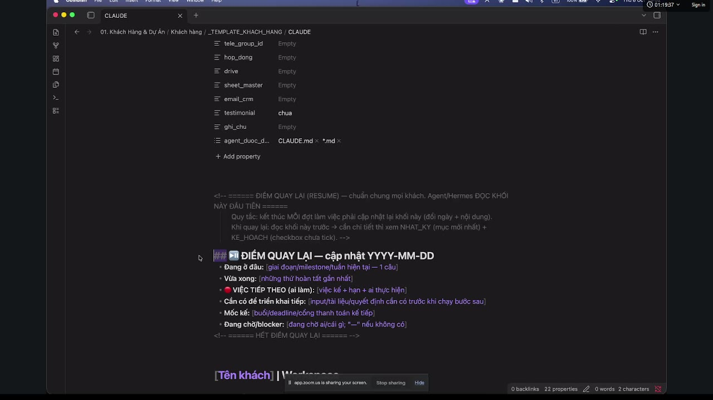
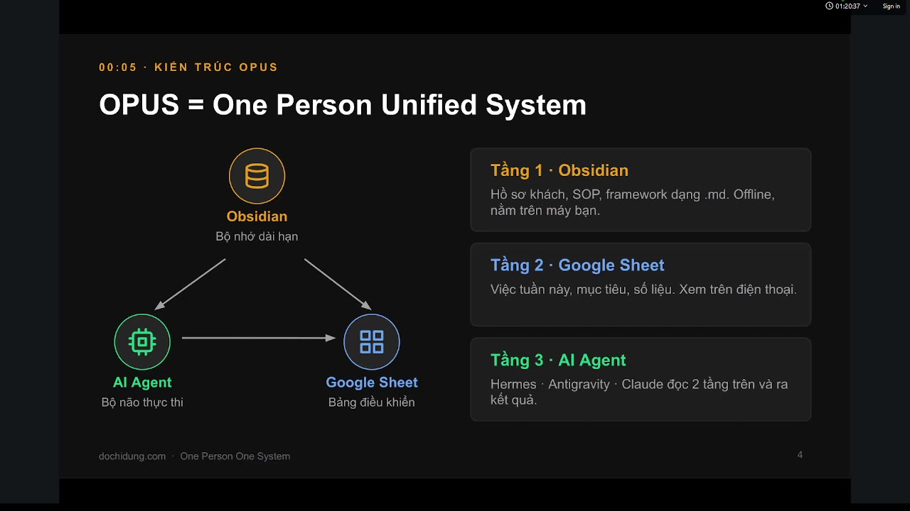
10. Google Sheets Làm Bộ Nhớ Đệm và Cơ Chế Đồng Bộ Tự Động Của AI Agent 30:05
Song song với bộ nhớ dài hạn Obsidian ở Tầng 1, hệ thống OPUS sử dụng Google Sheets ở Tầng 2 đóng vai trò như một giao diện tương tác (Front-end) và bộ nhớ ngắn hạn (bộ nhớ đệm). Google Sheets là công cụ lý tưởng để trực quan hóa các nhiệm vụ hàng ngày, số liệu đo lường và mục tiêu hành động dưới dạng bảng biểu quen thuộc. Điểm vượt trội của Google Sheets là khả năng chia sẻ trực tuyến dễ dàng, cho phép khách hàng và đối tác có thể trực tiếp đọc và ghi dữ liệu tương tác mà không gặp bất kỳ rào cản kỹ thuật nào.
Sự kết hợp kỳ diệu của hệ thống xuất hiện ở cơ chế vận hành tự động của các AI Agent (như Hermes, Colossus, Anti-Gravity) đóng vai trò cầu nối giữa hai tầng bộ nhớ. Các AI Agent này sẽ liên tục quét và xử lý các thông tin phát sinh trên Google Sheets, sau đó tự động phân loại, tổng hợp và ghi trực tiếp vào bộ nhớ dài hạn Obsidian. Mọi tiến độ công việc hoàn thành hay cập nhật trạng thái của khách hàng đều được AI đồng bộ hóa ngược về hệ thống lưu trữ cục bộ một cách chính xác vào cuối ngày.
Ở chiều ngược lại, vào mỗi buổi sáng, Agent Hermes sẽ thực hiện tác vụ đồng bộ hóa (sync) dữ liệu từ bộ nhớ dài hạn Obsidian để đẩy ngược ra Google Sheets. Quá trình này tạo ra một bảng điều khiển (dashboard) cập nhật tự động hàng ngày cho người điều hành. Thông qua dashboard này, CEO có thể nắm bắt ngay lập tức các chỉ số quan trọng: số lượng khách hàng tiềm năng mới gia nhập phễu, số người đăng ký nhận quà tặng, danh sách khách hàng đang tương tác trực tiếp (1-1) và các cơ hội bán hàng đang nóng.
Để giúp người học dễ hình dung, giảng viên đưa ra mối liên hệ thực tế với hệ thống quản trị dữ liệu trong ngành ngân hàng - lĩnh vực ông từng có thời gian công tác. Trong ngân hàng, tất cả dữ liệu hiển thị trên màn hình làm việc của giao dịch viên thực chất chỉ là bộ nhớ đệm hoặc dữ liệu ánh xạ (mapped data) từ hệ thống lõi (Core Banking). Nhân viên không thể ghi trực tiếp vào cơ sở dữ liệu trung tâm nếu không có quyền hạn đặc biệt. Tương tự, Google Sheets trong OPUS chỉ là vùng đệm ánh xạ giúp chia sẻ thông tin ra bên ngoài một cách an toàn, tránh việc can thiệp trực tiếp làm xáo trộn cấu trúc lưu trữ gốc của Obsidian.
- Google Sheets (Front-end): Đóng vai trò bộ nhớ đệm ngắn hạn, trực quan hóa chỉ số và hỗ trợ cộng tác với khách hàng.
- AI Agent Sync: Tự động hóa việc đọc dữ liệu từ Google Sheets để ghi vào Obsidian và ngược lại.
- Dashboard hàng ngày: Agent Hermes tự động cập nhật trạng thái phễu marketing, quà tặng và data khách hàng nóng.
- Tư duy thiết kế ngân hàng: Tách biệt bộ nhớ đệm ánh xạ (Google Sheets) và cơ sở dữ liệu gốc (Obsidian) để bảo mật và toàn vẹn dữ liệu.
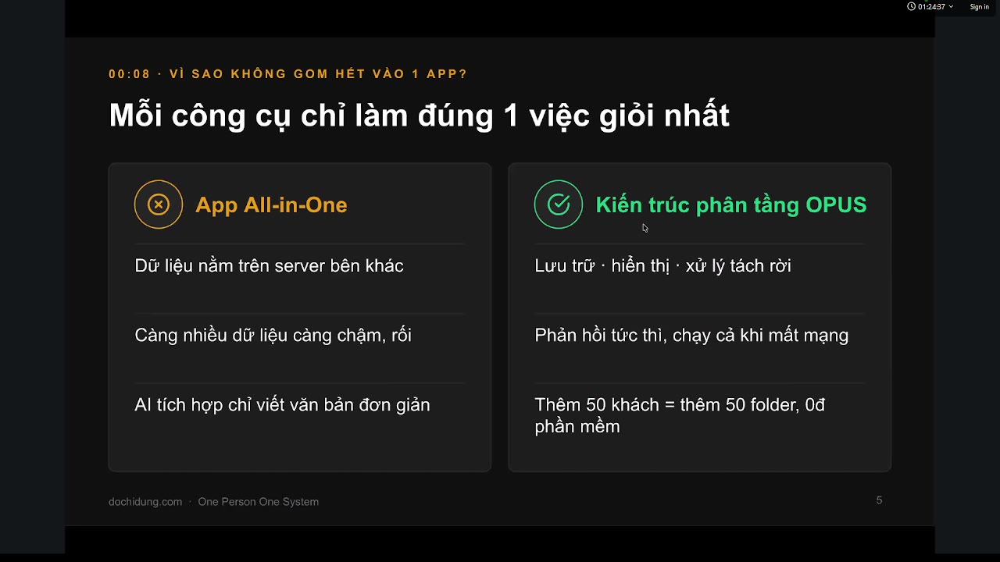
11. Kiến Trúc Hệ Thống AI Agent Cá Nhân Hóa Và Ưu Thế Vượt Trội So Với CRM Truyền Thống 32:04
Trong kỷ nguyên số hiện đại, việc xây dựng một hệ thống quản lý thông tin hiệu quả đòi hỏi sự tích hợp sâu sắc của công nghệ trí tuệ nhân tạo. Mô hình kiến trúc dữ liệu ba tầng kết hợp với khả năng đồng bộ hóa (sync) dữ liệu ra bên ngoài tạo nền tảng cho sự xuất hiện của một bộ não thực thi mạnh mẽ, được gọi là AI Agent. Thay vì phụ thuộc vào một mô hình AI duy nhất, hệ thống này cho phép triển khai đồng thời nhiều AI Agent khác nhau. Mỗi Agent đóng vai trò như một chuyên gia hoặc một trợ lý CEO thực thụ cho từng mảng công việc chuyên biệt, được huấn luyện bài bản thông qua các quy trình và khung tư duy (framework) cụ thể.
Để minh họa cho cấu trúc đầu ra (Output), giảng viên sẽ trình bày cách thức vận hành thực tế giữa các công cụ: Obsidian đóng vai trò lưu trữ dữ liệu gốc dưới dạng các file Markdown (.md), Google Sheets đảm nhận nhiệm vụ hiển thị trực quan hóa thông tin, và các AI Agent chịu trách nhiệm xử lý các tác vụ chuyên biệt. Sự kết hợp này giải quyết triệt để bài toán quản trị dữ liệu mà các doanh nghiệp thường gặp phải khi sử dụng các phần mềm CRM truyền thống.
Trước đây, việc quản lý khách hàng thường dựa vào các hệ thống CRM tất-cả-trong-một (all-in-one). Mọi thông tin từ hành trình khách hàng, lịch sử giao dịch, tệp tin chia sẻ, tương tác của nhân sự phụ trách cho đến trạng thái hợp đồng và dòng tiền đều bị phụ thuộc hoàn toàn vào một nền tảng phần mềm của bên thứ ba. Khi lượng dữ liệu tích lũy ngày càng lớn, các hệ thống này thường bộc lộ hạn chế như tốc độ xử lý chậm, giao diện rối rắm và thiếu khả năng tối ưu hóa liên tục do phải chờ đợi các đợt cập nhật tính năng từ nhà cung cấp. Ngay cả khi các phần mềm này tích hợp AI, chúng thường chỉ dừng lại ở mức độ cơ bản như hỏi đáp, tìm kiếm file hoặc tóm tắt thông tin cục bộ.
Trái lại, việc tự xây dựng một hệ thống quản lý cá nhân hóa giúp người dùng làm chủ hoàn toàn ba khía cạnh cốt lõi: lưu trữ dữ liệu, hiển thị thông tin và xử lý tác vụ. Các AI Agent trong hệ thống tự vận hành có khả năng tự động tạo ra kết quả, xuất file báo cáo và kết nối thông tin một cách liền mạch. Điểm ưu việt của kiến trúc này là khả năng phản hồi tức thì ngay cả khi không có kết nối Internet nhờ vận hành trên môi trường local (máy cục bộ). Dữ liệu sau đó được đồng bộ hóa liên tục giữa các thiết bị (laptop, điện thoại) thông qua dịch vụ đám mây như iCloud. Khi quy mô dữ liệu tăng từ 50 lên 500 khách hàng, hệ thống không phát sinh thêm bất kỳ chi phí bản quyền nào, mà chỉ đơn giản là mở rộng các thư mục chứa file Markdown (.md) ghi nhận nhật ký và hồ sơ khách hàng.
- Tự chủ hoàn toàn dữ liệu: Không bị khóa chặt vào nhà cung cấp phần mềm (vendor lock-in).
- Tối ưu hóa chi phí vận hành: Quy mô dữ liệu tăng trưởng không làm phát sinh chi phí bản quyền phần mềm.
- Khả năng hoạt động ngoại tuyến (Offline-first): Phản hồi tức thì trên máy cục bộ và tự động đồng bộ qua iCloud khi có mạng.
- Kết nối thông tin toàn diện: AI Agent xử lý dữ liệu liên kết thay vì xử lý các tệp tin đơn lẻ, cục bộ.
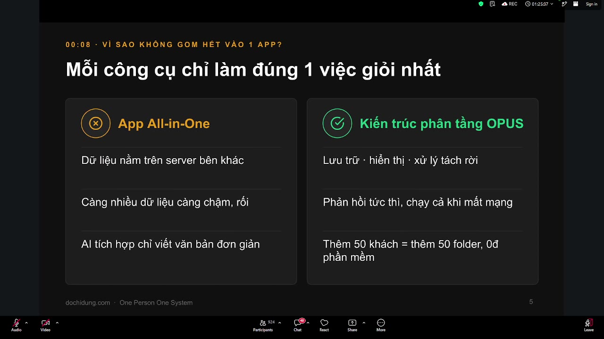
12. Chiến Lược Điều Phối Mô Hình AI (Model Routing) Và Các Sai Lầm Thường Gặp 34:45
Một sai lầm phổ biến khi ứng dụng AI vào quy trình làm việc là người dùng thường sao chép nguyên bản các kỹ năng (skills) hoặc câu lệnh (prompts) của người khác mà không hiểu rõ luồng xử lý thông tin bên dưới. Để một AI Agent vận hành hiệu quả, người dùng cần xác định rõ ràng Agent đó sẽ đọc dữ liệu từ những file hay thư mục nào để đưa ra quyết định, và các thư mục đó được cấu trúc ra sao trong hệ thống lưu trữ.
Bên cạnh đó, việc lạm dụng các mô hình ngôn ngữ lớn cao cấp như Claude cho các tác vụ lặt vặt là một sự lãng phí tài nguyên nghiêm trọng. Trong giai đoạn đầu tiếp cận người dùng, các nhà cung cấp thường đưa ra mức phí token rất rẻ hoặc nhân đôi hạn mức sử dụng (quota) để thu hút trải nghiệm. Thói quen tải các tệp dữ liệu khổng lồ lên Claude để quét và xử lý thông tin tuy mang lại trải nghiệm mượt mà ban đầu, nhưng sẽ nhanh chóng trở nên cực kỳ tốn kém khi nhà cung cấp cập nhật các phiên bản mô hình mới và thắt chặt hạn mức yêu cầu (request limit).
Ngược lại, việc sử dụng các mô hình siêu nhỏ và rẻ như GPT-4o mini cho các tác vụ đòi hỏi tư duy sâu cũng là một sai lầm tai hại. Giảng viên chia sẻ trải nghiệm thực tế khi tích hợp GPT-4o mini vào trợ lý ảo Telegram (Hermes) nhằm tiết kiệm chi phí. Khi giao các tác vụ phức tạp, mô hình này thường hoạt động rất chậm, có xu hướng 'lười biếng', tự ý bỏ qua các bước xử lý quan trọng hoặc tạo ra hiện tượng ảo giác (hallucination) dẫn đến kết quả đầu ra sai lệch hoàn toàn so với thực tế.
Để giải quyết triệt để bài toán tối ưu hiệu năng và chi phí, nguyên tắc điều phối mô hình (Model Routing) cần được áp dụng một cách nghiêm ngặt. Đối với các tác vụ nhẹ, mang tính lặp đi lặp lại như đọc dữ liệu từ Google Sheets để phản hồi nhanh qua Telegram, hoặc ghi nhận tin nhắn từ Telegram vào Google Sheets, việc sử dụng mô hình giá rẻ như GPT-4o mini là hoàn toàn tối ưu vì tính chất công việc đơn giản và yêu cầu tốc độ phản hồi nhanh.
Đối với các tác vụ cày cuốc dữ liệu nặng (heavy-duty background tasks) - ví dụ như hệ thống 'LLM Wiki' tự động quét internet và phân tích hơn 800 file Markdown (.md) hàng ngày để tìm kiếm khoảng trống tri thức (knowledge gaps) - việc sử dụng Claude sẽ cực kỳ tốn kém, trong khi các mô hình giá rẻ thông thường lại không đảm bảo chất lượng. Giải pháp tối ưu ở đây là sử dụng mô hình Gemini (ví dụ Gemini 1.5 Flash/Pro) hoặc Llama 3 8B thông qua các nhà cung cấp API trung gian giá rẻ (như OpenRouter hoặc Anyscale). Các mô hình này mang lại sự cân bằng hoàn hảo giữa hiệu năng xử lý, độ chính xác và chi phí vận hành cực kỳ thấp.
Cuối cùng, các mô hình siêu trí tuệ như Claude nên được ưu tiên bảo lưu cho các tác vụ tư duy cao cấp nhất (brainstorming). Các công việc này bao gồm phân tích các nghiên cứu tình huống phức tạp (case studies), xây dựng đề bài dự án, thiết kế quy trình vận hành hệ thống hoặc phát triển các gói dịch vụ chuyên sâu cho khách hàng. Việc phân cấp mô hình rõ ràng giúp tối ưu hóa chi phí vận hành hệ thống ở mức thấp nhất mà vẫn đảm bảo chất lượng đầu ra vượt trội.
- Tác vụ lặp đi lặp lại, cập nhật dữ liệu nhanh: Sử dụng GPT-4o mini để tối ưu tốc độ và chi phí.
- Tác vụ cày cuốc dữ liệu lớn (LLM Wiki, quét 800+ file .md): Sử dụng Gemini hoặc Llama 3 8B qua API giá rẻ.
- Tác vụ tư duy cao cấp, thiết kế quy trình: Sử dụng Claude để tận dụng khả năng lập luận logic vượt trội.
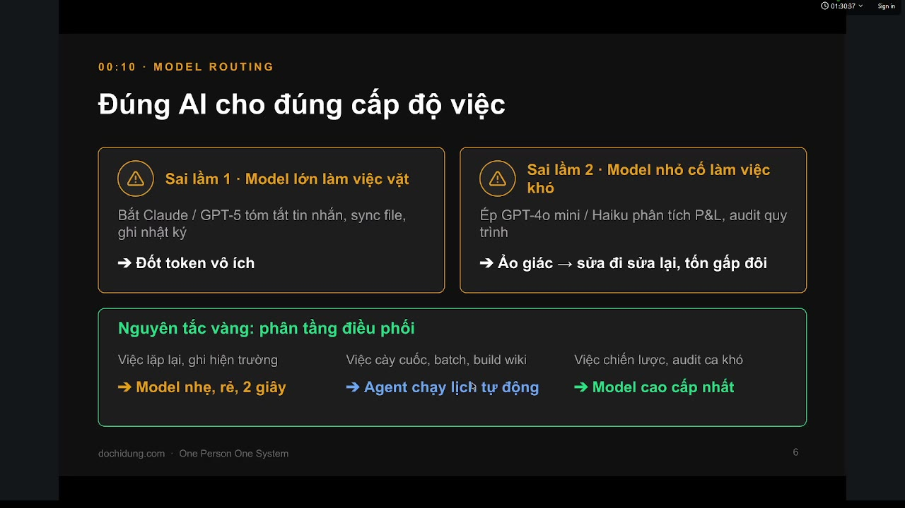
13. Thực Hành Triển Khai Hệ Thống Hermes Agent Qua Telegram 38:42
Để minh họa trực quan cho kiến trúc đầu ra đã trình bày, giảng viên tiến hành demo hệ thống Agent đang vận hành thực tế có tên gọi là Hermes, được tích hợp trực tiếp trên nền tảng Telegram. Khác với các giải pháp Agent truyền thống yêu cầu cài đặt phức tạp trên máy chủ đám mây, hệ thống này cho phép người dùng cài đặt ứng dụng frontend của Hermes ngay trên máy tính cá nhân của mình.
Sau khi cài đặt ứng dụng Hermes cục bộ, người dùng tiến hành kết nối ứng dụng này với tài khoản Telegram cá nhân thông qua API. Giao diện trò chuyện Telegram lúc này đóng vai trò là cổng giao tiếp (gateway) trực tiếp với hệ thống dữ liệu local của người dùng. Mọi câu lệnh gửi đi từ Telegram sẽ được chuyển tiếp đến ứng dụng Hermes trên máy để xử lý.
Trong phiên bản demo, giảng viên cấu hình cho Hermes sử dụng mô hình GPT-4o của OpenAI. Đây là một mô hình có chi phí vận hành hợp lý, sở hữu cửa sổ ngữ cảnh (context window) lên đến 128k tokens, giúp xử lý tốt các bối cảnh hội thoại dài mà không lo bị tràn bộ nhớ hoặc mất thông tin.
Khả năng đặc biệt của thiết lập này là AI Agent có thể truy cập trực tiếp vào hệ thống file cục bộ của người dùng. Khi nhận được yêu cầu từ Telegram, Agent sẽ tự động truy cập vào thư mục chứa hồ sơ khách hàng, đọc thông tin hiện tại và tiến hành ghi nhận thêm các đầu việc mới hoặc cập nhật trạng thái trực tiếp vào file Markdown tương ứng mà không cần sự can thiệp thủ công của con người.
- Cài đặt ứng dụng frontend Hermes trực tiếp trên máy tính cá nhân.
- Kết nối ứng dụng Hermes với Telegram để tạo cổng giao tiếp di động.
- Sử dụng GPT-4o (128k context window) để xử lý các tác vụ truy vấn thông tin khách hàng.
- Agent tự động đọc và ghi dữ liệu trực tiếp vào các file Markdown cục bộ dựa trên tin nhắn Telegram.
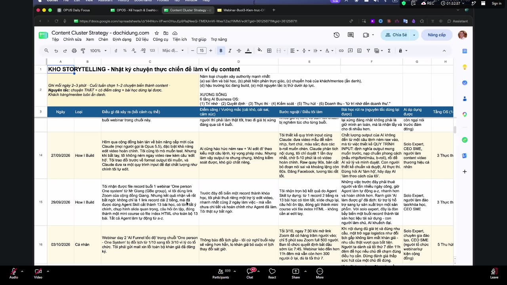
14. Xây dựng Thương hiệu Cá nhân thông qua Storytelling và Trợ lý Telegram 40:07
Giảng viên bắt đầu phần học bằng việc nhấn mạnh tầm quan trọng của việc ghi lại câu chuyện thực chiến hàng ngày của khách hàng, bao gồm vấn đề gặp phải, cách giải quyết và kết quả đạt được. Những câu chuyện này chính là cốt lõi của phương pháp storytelling, giúp xây dựng và định hình thương hiệu cá nhân một cách hiệu quả. Tất cả các dữ liệu này sẽ được lưu trữ trong một file Google Sheets làm trung tâm, nơi ứng dụng Telegram đóng vai trò đọc và ghi dữ liệu trực tiếp.
Lấy ví dụ thực tế từ một buổi webinar hợp tác cùng Mr. Giang với quy mô phòng Zoom đạt tối đa 300 đến 500 người tham gia, giảng viên hướng dẫn cách sử dụng trợ lý ảo Hermes trên điện thoại để ghi nhận sự kiện. Chỉ cần ra lệnh bằng giọng nói, hệ thống sẽ tự động ghi chép lại toàn bộ bối cảnh sự việc, những khó khăn, sai lầm, cũng như cảm xúc vui mừng khi nội dung được đón nhận nhiệt tình và thời gian hỏi đáp kéo dài tận 11 giờ đêm.
Quy trình ghi chép tự động này không chỉ lưu lại văn bản thuần túy mà còn phân rã thông tin thành các yếu tố có cấu trúc chặt chẽ như bối cảnh, cảm xúc, bước đột phá và bài học rút ra. Ví dụ, buổi webinar ngày thứ 3 với hơn 500 người tham gia chỉ sau 5 phút đã được chuyển hóa thành một case study cho nhóm mạng xã hội (social group). Bài học cốt lõi rút ra là khi nội dung chạm đúng nhu cầu thị trường, phản hồi tích cực sẽ trở thành sự xác nhận mạnh mẽ cho giá trị sản phẩm.
Mô hình trợ lý Telegram sử dụng các mô hình ngôn ngữ lớn (LLM) giá rẻ để thực hiện các tác vụ đọc ghi liên tục với chi phí cực kỳ tối ưu, ước tính chỉ khoảng 1 đến 2 đô la mỗi tháng. Trợ lý này hoạt động trực tiếp trên điện thoại, giúp người dùng solo hoặc chủ doanh nghiệp nhỏ (solo SME) dễ dàng biến những câu chuyện thực chiến thành nguồn nguyên liệu phong phú cho các định dạng content khác nhau như bài viết fanpage, email marketing hay landing page.
- Cấu trúc nhật ký thực chiến: Bối cảnh, vấn đề/thử thách, cảm xúc, bước đột phá và kết quả.
- Ứng dụng thực tế: Ghi nhận sự kiện webinar 500 người tham gia chỉ sau 5 phút.
- Chi phí vận hành: Mô hình giá rẻ trên Telegram chỉ tốn khoảng 1-2 USD/tháng cho việc đọc ghi dữ liệu.
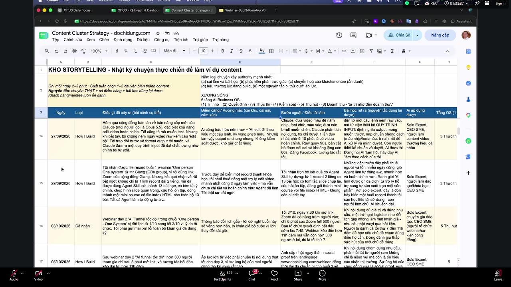
15. Tự động hóa với Cron Job và Hệ thống Bộ não Thứ hai (Second Brain) 43:24
Vào lúc 10 giờ sáng hàng ngày, hệ thống tự động chạy các tác vụ định kỳ (cron job) thông qua Telegram để thực hiện bản tin buổi sáng (morning brief). Đối với một người làm việc độc lập (solo), hệ thống này sẽ tự động đọc bảng điều khiển (dashboard) để tổng hợp công việc cần làm, kiểm tra khách hàng cần chạy Synthetic Monitor, cập nhật danh sách lead mới từ hệ thống CRM và phân loại mức độ quan tâm của khách hàng từ ấm sang nóng.
Bên cạnh trợ lý đọc ghi giá rẻ, giảng viên giới thiệu hệ thống tự động hóa mang tên Anti-Gravity LLM chạy ngầm hàng ngày để quét thông tin trên internet. Hệ thống này tự động kết nối và cập nhật cơ sở dữ liệu dài hạn, ví dụ như đạt 970 trang tài liệu, thêm 3 nguồn mới và tạo ra các báo cáo chuyên sâu về các chủ đề agent, funnel, hay các cập nhật mới từ Cloud vào lúc 10 giờ sáng.
Toàn bộ cơ sở dữ liệu dài hạn này được lưu trữ và hiển thị trực quan trên nền tảng Obsidian, đóng vai trò như một bộ não thứ hai (Second Brain) chuyên sâu về kiến thức và nghiên cứu. Sự kết hợp giữa cơ sở dữ liệu tự động từ Anti-Gravity và kho tàng storytelling cá nhân tạo ra một nguồn content độc bản, đáp ứng hoàn hảo cho chiến lược sản xuất nội dung chuyên nghiệp.
Hệ thống quản lý công việc hàng ngày cũng được tích hợp toàn diện trong bộ não thứ hai này, bao gồm Daily Planner, quản lý dự án, thông tin khách hàng, mentee, tài nguyên social content và khu vực nghiên cứu kỹ năng (R&D). Nhờ đó, người dùng có thể tập trung huấn luyện và lưu trữ toàn bộ quy trình, framework quy chuẩn tại một nơi duy nhất.
- Morning Brief tự động: Chạy lúc 10 giờ sáng mỗi ngày để tổng hợp công việc, lead CRM và kiểm tra content.
- Anti-Gravity LLM: Hệ thống tự động quét internet hàng ngày, tạo báo cáo và tích lũy cơ sở dữ liệu.
- Obsidian Second Brain: Lưu trữ dài hạn gần 1000 trang tài liệu, framework, quy trình và tài nguyên nghiên cứu.
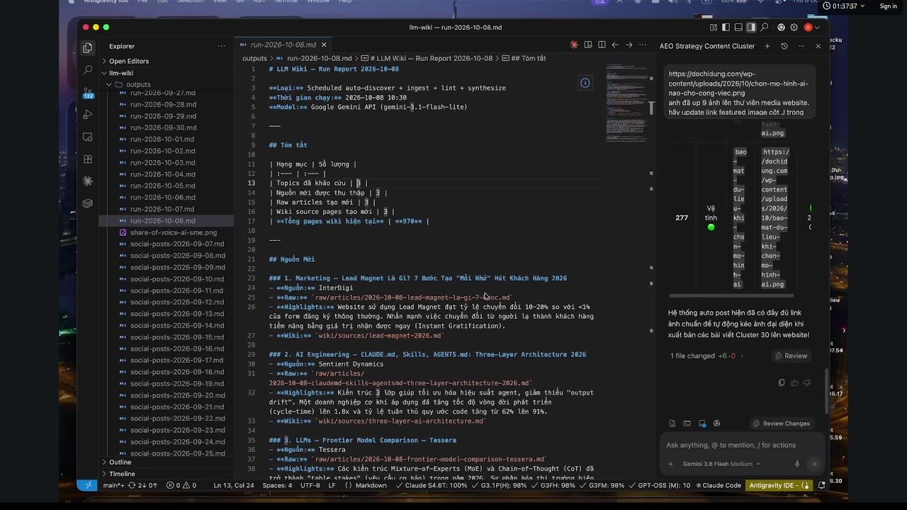
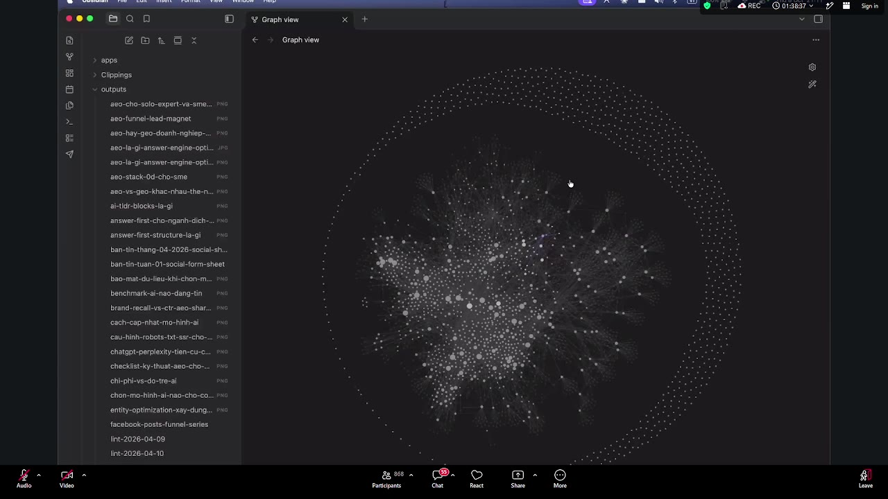
16. Phân tầng Mô hình AI: Từ Tác vụ Giá rẻ đến Xử lý Cao cấp 47:05
Giảng viên giải thích rõ chiến lược phân tầng các mô hình AI trong hệ thống tự động hóa vận hành doanh nghiệp. Trong khi Anti-Gravity và trợ lý Telegram đảm nhận các tác vụ cày cuốc, kết nối hàng trăm file dữ liệu, tìm kiếm khoảng trống thông tin và báo cáo mỗi ngày với chi phí rất thấp, thì các mô hình cao cấp sẽ được dùng cho những công việc nặng nhọc hơn.
Các mô hình cao cấp như Claude đòi hỏi chi phí token lớn hơn nhưng mang lại năng lực xử lý vượt trội, chẳng hạn như khả năng huấn luyện agent để phân tích toàn bộ bản ghi video dài 2 đến 3 tiếng. Agent cao cấp này có thể tự động cắt dựng script, chắt lọc nội dung, tìm kiếm điểm nhấn và chọn ra các hình ảnh highlight đắt giá.
Việc ứng dụng AI cao cấp để xử lý các bản ghi dài mang lại hiệu suất tương đương, thậm chí vượt trội hơn việc tuyển dụng một nhân sự chuyên trách hỗ trợ sau các sự kiện webinar hay lớp học trực tuyến. Trước đây, giảng viên phải thuê trợ lý ngồi xem lại video dài để cắt gọt thủ công, nhưng hiện nay toàn bộ quy trình này đã được tự động hóa hoàn toàn nhờ các agent thông minh.
Sự kết hợp ăn ý giữa mô hình giá rẻ cho tác vụ lặp đi lặp lại và mô hình cao cấp cho công việc phân tích sâu tạo thành một hệ thống vận hành tối ưu toàn diện. Điều này giúp tối ưu hóa chi phí vận hành xuống mức tối thiểu trong khi vẫn đảm bảo chất lượng công việc đầu ra đạt tiêu chuẩn chuyên nghiệp cao nhất.
- Mô hình giá rẻ (Telegram/Anti-Gravity): Phục vụ đọc ghi liên tục, quét dữ liệu, báo cáo hàng ngày với chi phí tối thiểu.
- Mô hình cao cấp (Claude): Xử lý tác vụ nặng, phân tích bản ghi video dài hàng giờ để cắt script và tìm highlight.
- Hiệu quả kinh tế: Thay thế hoàn toàn nhân sự thủ công trong việc xử lý hậu kỳ video và tài liệu.
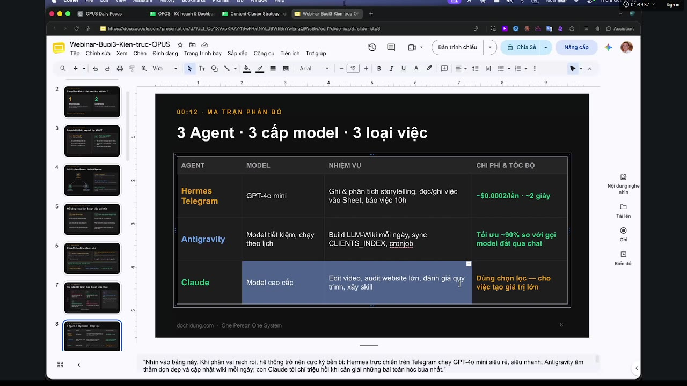
17. Phân loại cơ sở dữ liệu và tối ưu hóa mô hình AI cá nhân 48:09
Trong quá trình vận hành hệ thống cá nhân hoặc doanh nghiệp nhỏ, việc không phân loại cơ sở dữ liệu và công việc cho mô hình AI sẽ dẫn đến sự kém hiệu quả. Nhiều người thường mắc sai lầm khi sử dụng một mô hình duy nhất cho tất cả mọi việc, từ các tác vụ nặng cho đến tác vụ nhẹ. Việc đi thuê các mô hình giá rẻ gắn API để cầy cuốc toàn bộ hệ thống mà không có chiến lược rõ ràng sẽ tiêu tốn rất nhiều token và không mang lại kết quả tối ưu. Thay vào đó, chúng ta cần phân tách rõ ràng vai trò của từng loại AI dựa trên năng lực và chi phí của chúng.
Giảng viên đưa ra ví dụ thực tế về việc triển khai ba đội ngũ mô hình AI khác nhau để hỗ trợ công việc hàng ngày. Trong đó, Hermes agent hoạt động như một trợ lý hiện trường 24/7 trực tiếp trên điện thoại di động của người dùng. Khi cần đọc hồ sơ khách hàng trước buổi gặp gỡ, người dùng chỉ cần đưa ra yêu cầu đơn giản trên Telegram. Agent sẽ tự động truy xuất thông tin, xác định khách hàng đang ở giai đoạn nào của dự án và đã trao đổi những gì trước đó.
Điểm mấu chốt giúp agent không phải quét toàn bộ cơ sở dữ liệu tốn kém là dữ liệu đã được cấu trúc và huấn luyện từ trước. Thay vì để AI phải dò tìm từ khóa hay quét qua hàng loạt file memory gây lãng phí token, hệ thống được thiết kế để định hướng chính xác vị trí thông tin. Giảng viên đã theo dõi sát sao mức độ hành động của con agent giá rẻ 4.0 để tìm ra phương pháp tối ưu hóa yêu cầu truy vấn dữ liệu đầu vào.
Toàn bộ hệ thống cơ sở dữ liệu của doanh nghiệp được lưu trữ cục bộ trên máy tính cá nhân và đồng bộ qua iCloud, sử dụng công cụ quản lý như Obsidian. Trong cấu trúc hồ sơ khách hàng chung, hệ thống luôn thiết lập một mục đặc biệt gọi là điểm quay lại. Điểm này đóng vai trò như bản tóm tắt nhanh tình trạng hiện tại, giúp AI và người quản lý nắm bắt ngay lập tức bối cảnh mà không cần đọc lại toàn bộ lịch sử trò chuyện dài dòng.
- Không dùng một model duy nhất cho mọi tác vụ nặng nhẹ khác nhau.
- Sử dụng Hermes agent trên Telegram làm trợ lý di động 24/7 đọc hồ sơ khách hàng.
- Cơ sở dữ liệu lưu trên máy tính cá nhân và iCloud qua Obsidian để tiết kiệm token.
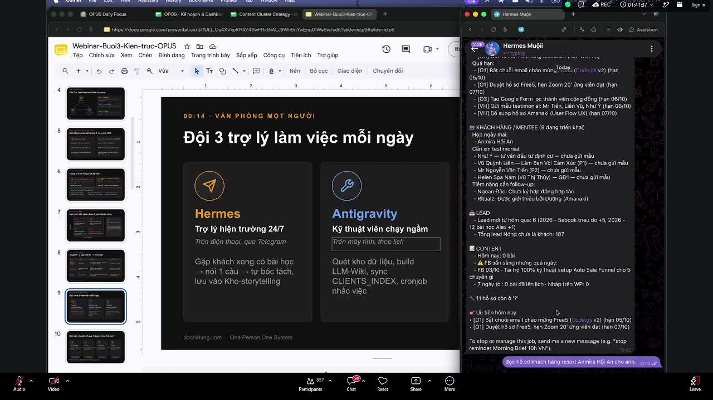
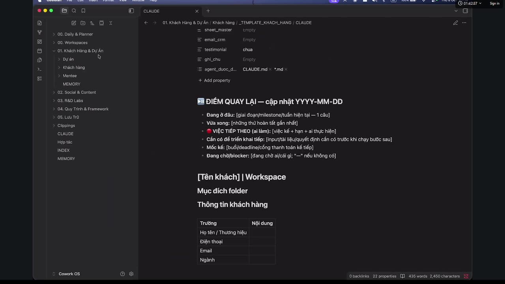
18. Cấu trúc Template hồ sơ khách hàng và Điểm quay lại (Checkpoint) 51:00
Trong cấu trúc template hồ sơ chung của toàn bộ khách hàng, giảng viên luôn đặt một mục quan trọng mang tên điểm quay lại. Mục này ghi nhận khách hàng đang ở đâu, đang ở giai đoạn nào và đã hoàn thành những công việc gần nhất nào. Phần tiếp theo của template vạch rõ các yếu tố cần thiết để giải quyết vấn đề, bao gồm tài liệu phía khách hàng cung cấp và phần việc thuộc về chuyên môn của doanh nghiệp.
Bên cạnh đó, mốc kế tiếp xác định rõ timeline và các điểm nghẽn hiện tại trong dự án, bao gồm việc đang chờ đợi ai hoặc chờ bộ phận nào cung cấp thông tin. Cấu trúc này vận hành tương tự như cách một nhà quản lý giao việc cho nhân viên, trong đó nêu rõ mục tiêu, nguyên liệu giải quyết và trách nhiệm của từng bên. Nhờ vậy, agent có thể dễ dàng đọc hiểu và nhắc nhở người dùng các mốc quan trọng.
Khi người dùng cung cấp đường dẫn để đọc hồ sơ khách hàng, Claude sẽ tiến hành tóm tắt nhanh tổng quan thông tin và bối cảnh thương hiệu. Toàn bộ hồ sơ này nằm trên máy tính cá nhân trong Obsidian, Claude chỉ đóng vai trò đọc và ghi dữ liệu khi nhận câu hỏi. Ví dụ cụ thể với khách hàng Oloa thuộc lĩnh vực phân phối mỹ phẩm, cấu trúc hồ sơ bao gồm giai đoạn chuẩn hóa, trọng điểm hiện tại, dữ liệu đã chốt và vấn đề cần xử lý.
Đặc biệt, hệ thống còn đưa ra các cảnh báo rủi ro mà CEO đang phải đối mặt. Tất cả các thông tin này được cô đọng lại thành các câu trả lời ngắn gọn, giúp nhà quản lý nắm bắt ngay lập tức trên điện thoại di động mà không cần mở máy tính hay tìm kiếm thủ công trong kho dữ liệu cồng kềnh.
- Điểm quay lại ghi nhận giai đoạn hiện tại và tiến độ công việc gần nhất.
- Xác định rõ nguyên liệu, tài liệu phía khách hàng và chuyên môn doanh nghiệp.
- Làm rõ timeline, mốc kế tiếp và điểm nghẽn chờ xử lý.
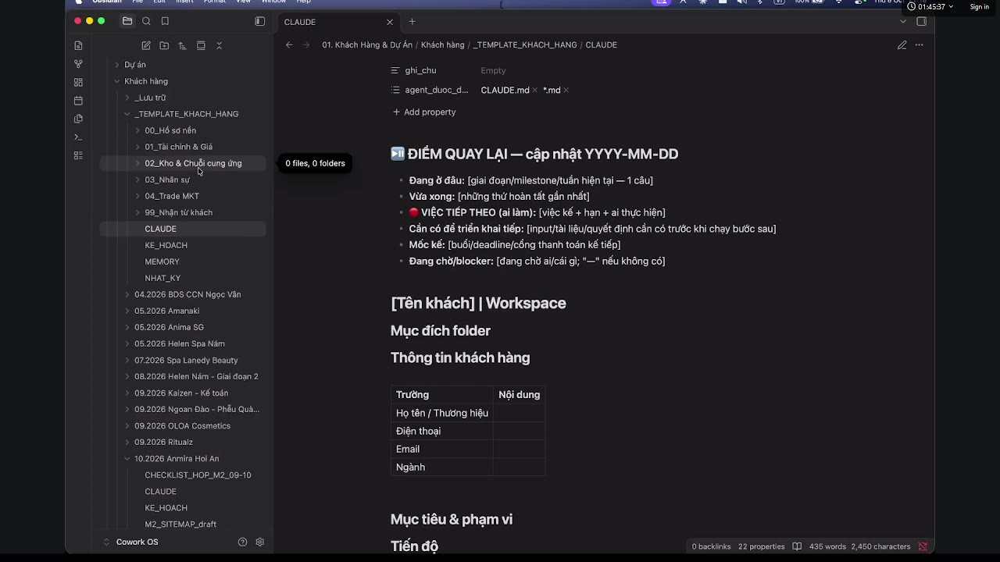
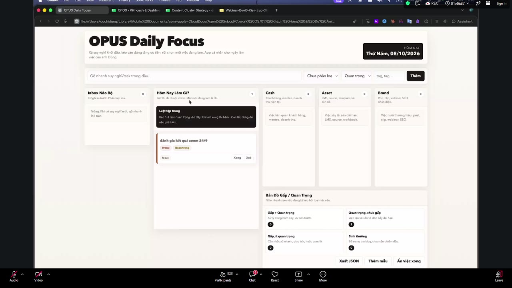
19. Kiến trúc cơ sở dữ liệu 3 tầng Opus và quy trình phối hợp Agent 54:06
Đối với các CEO hoặc solo expert, việc xây dựng cơ sở dữ liệu ba tầng Opus là vô cùng cần thiết. Hệ thống này bao gồm bộ nhớ lâu dài lưu trữ gốc, bộ nhớ hiển thị (bộ nhớ ngắn hạn) phục vụ cho việc đọc và ghi dữ liệu. Khi có bộ nhớ đọc ghi hiệu quả, người dùng hoàn toàn có thể chuyển đổi cơ sở dữ liệu thành định dạng HTML để tạo ra giao diện trực quan, dễ nhìn hơn trên các thiết bị khác nhau.
Với ba chế độ agent khác nhau, mode sử dụng trên điện thoại mang lại sự nhanh chóng, tiết kiệm và tiện lợi cho các hoạt động đơn lẻ như đọc, ghi và tìm kiếm thông tin trong hệ thống. Thay vì phải mở máy tính hay sử dụng các mô hình có chi phí cao, người dùng tận dụng các mô hình giá rẻ chuyên biệt cho những tác vụ này để tối ưu hóa hiệu quả vận hành.
Bên cạnh đó, công cụ anti-gravity chịu trách nhiệm đọc thông tin mỗi ngày, lập các chỉ mục và liên kết các file lại với nhau để tạo ra một hệ thống wiki sạch sẽ. Lúc này, mô hình mạnh như Claude mới chính thức can thiệp để trích xuất dữ liệu từ wiki sạch đã được chuẩn bị sẵn, phát huy tối đa năng lực phân tích dữ liệu chuyên sâu thay vì phải lãng phí tài nguyên để lọc dữ liệu thô.
Cuối cùng, ngay cả khi sử dụng các tính năng cao cấp của Claude như chỉnh sửa video ở output 5.5, việc thiết kế cấu trúc hệ thống file chuẩn chỉnh vẫn đóng vai trò quyết định. Giảng viên chia sẻ hệ thống sử dụng Google Sheets làm bộ nhớ lưu trữ đầu vào, sau đó chuyển kết quả đầu ra vào bộ nhớ dài hạn để xử lý kịch bản video một cách nhanh chóng, nhẹ nhàng và tiết kiệm chi phí nhất.
- Mô hình 3 tầng Opus phân chia rõ bộ nhớ lâu dài, bộ nhớ hiển thị và giao diện HTML.
- Mode agent giá rẻ xử lý input đầu vào, đọc ghi và tìm kiếm thông tin hàng ngày.
- Google Sheets đóng vai trò bộ nhớ lưu trữ đầu vào cho các tác vụ xử lý video dài hạn.
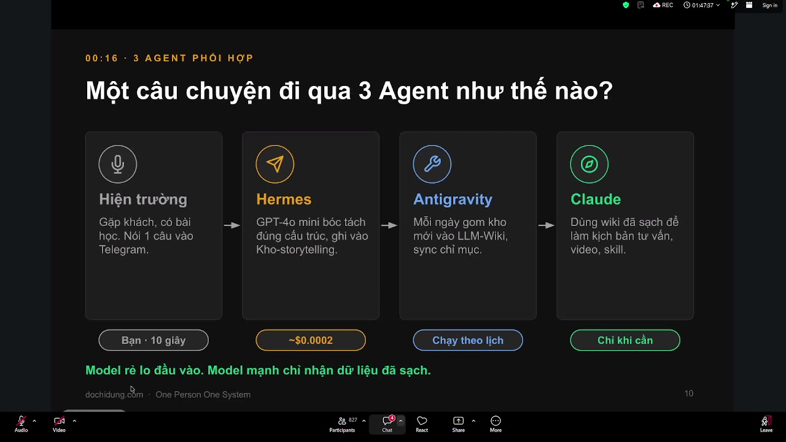
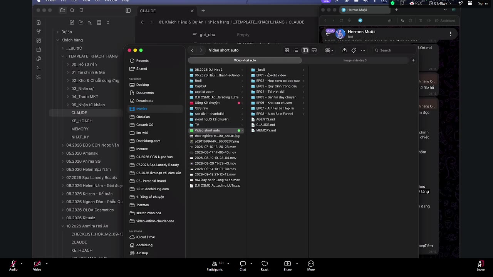
20. Quy trình tự động hóa sản xuất video ngắn bằng AI 56:10
Giảng viên hướng dẫn cách xây dựng cơ sở dữ liệu và thư viện nguồn để sản xuất hàng loạt từ 5 đến 10 video ngắn chỉ với một lần quay nguyên liệu gốc (raw). Quy trình bắt đầu bằng việc đứng trước điện thoại quay một video thô ngắn khoảng 2 phút dựa trên kịch bản hoàn toàn do AI soạn thảo. Để tối ưu hóa hiệu suất cho một cá nhân tự vận hành, hệ thống cần kiểm soát toàn bộ chuỗi công việc từ ý tưởng đến thành phẩm cuối cùng.
Công đoạn sáng tạo nội dung bắt đầu bằng việc phân tích các video TikTok đang viral thông qua AI để bóc tách cấu trúc gồm mở bài, thân bài và kết luận. AI sẽ đảo ngược nội dung nguồn này sang chủ đề riêng của người dùng để tạo ra kịch bản hoàn chỉnh. Người dùng chỉ cần đưa kịch bản đó vào tính năng teleprompter chữ chạy trên màn hình của các ứng dụng như CapCut để đọc trước ống kính và thu về file raw.
Để chuyển đổi file raw thành video hoàn chỉnh (version 4) có kèm chữ và hình ảnh minh họa tự động, hệ thống sử dụng một kho dữ liệu video ngắn gọi là kho B-roll. AI sẽ tự động đọc kho B-roll này để chọn ra các cảnh trám và cảnh minh họa phù hợp nhất cho từng phân đoạn. Toàn bộ thông tin về nội dung nói gì, dựng ra sao, số giây và hình ảnh minh họa gì đều được quy định chặt chẽ trong các file định dạng Markdown (file md).
Quy trình dựng hình của AI diễn ra qua nhiều phiên bản thông minh chứ không xuất ra ngay bản cuối cùng. Version đầu tiên sẽ tự động cắt bỏ khoảng trống, từ thừa và những đoạn nói sai; version thứ hai thêm chữ minh họa (text); và version thứ ba mới tự động chèn các cảnh trám phù hợp để video trở nên sinh động. Mô hình này giúp tiết kiệm chi phí, thời gian và tối ưu hóa năng lực xử lý của từng dòng AI khác nhau.
- Quay file raw ngắn khoảng 2 phút dựa trên script do AI viết.
- Sử dụng teleprompter trên CapCut để đọc kịch bản mượt mà.
- Xây dựng kho dữ liệu B-roll để AI tự động cắt ghép cảnh trám.
- Quy trình dựng 3 bước: Cắt khoảng thừa -> Thêm chữ minh họa -> Chèn cảnh trám.
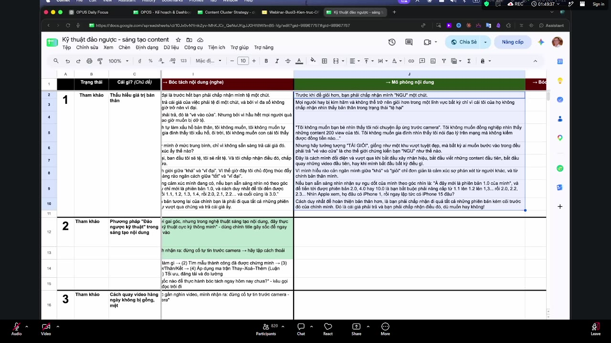
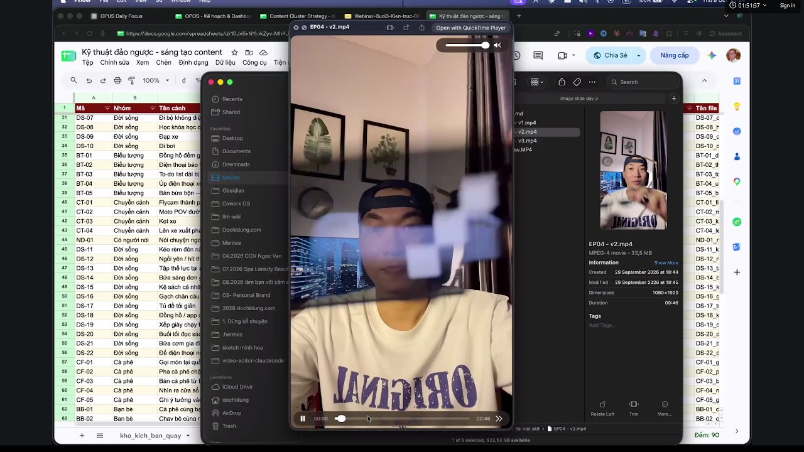
21. Quản trị cơ sở dữ liệu khách hàng và hệ thống trợ lý ảo Agent 1:00:00
Để chuẩn hóa hồ sơ và thông tin khách hàng, mỗi khách hàng sẽ có các file dữ liệu được quản lý đồng bộ để mọi mô hình AI đều có thể đọc hiểu. Hệ thống cơ sở dữ liệu nhớ lâu này được lưu trữ trên ứng dụng Obsidian, trong khi các tác vụ đọc và xử lý do các trợ lý thông minh như Hermes, Anti-Gravity và Claude đảm nhiệm. File chứa thông tin khách hàng đóng vai trò như một template lưu trữ chi tiết các trường dữ liệu quan trọng.
Template hồ sơ khách hàng bao gồm hơn 20 trường thông tin chi tiết không khác gì một hệ thống CRM chuyên nghiệp. Các trường dữ liệu tiêu biểu gồm: tên khách hàng, nhóm khách hàng, ngành nghề, gói dịch vụ, ngày bắt đầu, ngày kết thúc giai đoạn, lịch họp định kỳ, bài tập giao cho khách hàng và hạn nộp bài. Khi khách hàng cung cấp tài liệu theo yêu cầu, hệ thống sẽ tự động cập nhật trạng thái đã đọc bài.
Hệ thống trợ lý ảo Agent tự động hóa hoàn toàn việc tương tác và quản lý vận hành hằng ngày mà không cần con người can thiệp thủ công. Trợ lý sẽ tự động theo dõi lịch họp tiếp theo, kiểm tra xem khách hàng đã đọc tài liệu chưa, ghi nhận email và kiểm tra phản hồi testimony. Thậm chí, hệ thống còn tự động đưa khách hàng vào nhóm chat Telegram để trợ lý nhắc lịch học, thông báo đổi lịch và cập nhật ngược dữ liệu chat vào bộ nhớ đệm vận hành.
Do lượng kiến thức chuyên sâu và cấu trúc hệ thống khá nặng, giảng viên và các cộng sự quyết định tạm dừng phần lý thuyết để giải lao và tạo không gian cho học viên đặt câu hỏi. Giảng viên nhấn mạnh tầm quan trọng của việc phân tầng bộ nhớ sâu và bộ nhớ ngắn hạn trên các công cụ tìm kiếm. Phần giao lưu tập trung giải đáp thắc mắc thực tế cho các học viên non-tech về cách bước chân vào lĩnh vực tự động hóa.
- Sử dụng Obsidian làm nơi lưu trữ cơ sở dữ liệu sâu kết hợp với các AI Agent (Hermes, Anti-Gravity, Claude) để đọc hiểu.
- Template khách hàng chứa hơn 20 trường thông tin quản lý toàn diện như một CRM.
- Tự động hóa hoàn toàn việc nhắc lịch, giao bài tập và quản lý nhóm chat Telegram qua trợ lý ảo.
- Tổ chức giải lao và Q&A để học viên không bị ngợp trước lượng kiến thức nâng cao.
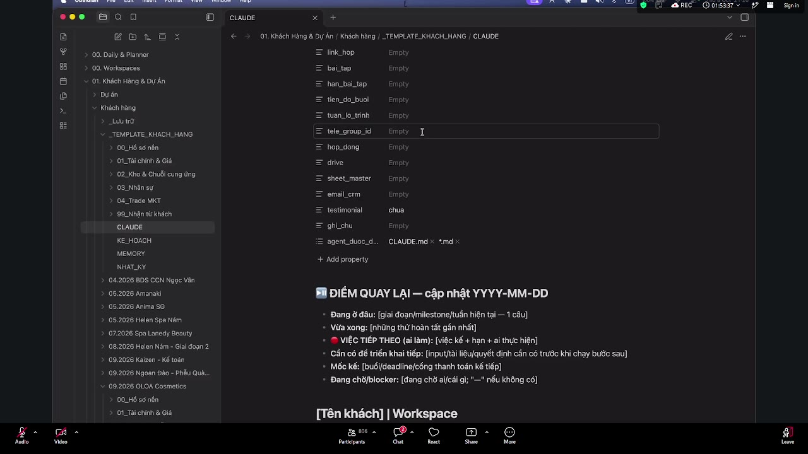
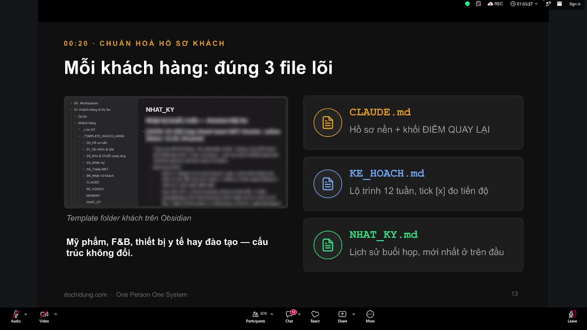
22. Quản trị cơ sở dữ liệu và hệ sinh thái công cụ AI 1:04:12
Giảng viên hướng dẫn phương pháp quản lý thông tin khách hàng và quy trình công việc, dù là cho công ty một người hay doanh nghiệp lớn, đều phải bắt đầu từ việc lưu trữ dữ liệu khoa học. Khi có nhân sự mới tiếp quản vị trí, việc bàn giao hệ thống sẽ trở nên cực kỳ dễ dàng nếu dữ liệu được tổ chức chuẩn mực từ đầu. Ba công cụ chính được khuyến khích kết hợp sử dụng trong hệ thống này gồm có Obsidian, Colossus và Google Sheets. Trong đó, công cụ Colossus không dùng để upload file đơn lẻ mà được cung cấp cả một thư mục làm việc để nó trực tiếp xử lý dữ liệu.
Cấu trúc quản trị cơ sở dữ liệu được phân chia theo các tầng từ thấp đến cao để người dùng dễ dàng kiểm soát. Tầng thấp nhất là section, tương ứng với mỗi lần người dùng mở một phiên chat mới với AI. Tầng thứ hai là project, nơi tập trung nhiều section liên quan đến một đối tượng cụ thể như một khách hàng. Bên trong project sẽ chứa các workspace gồm nhiều thư mục con phục vụ cho các mục đích khác nhau như hồ sơ khách hàng, file quy trình, hay tài liệu bảo mật.
Bộ nhớ dài hạn của hệ thống thực chất là toàn bộ các thư mục được lưu trữ trực tiếp trên máy tính cá nhân của người dùng. Trong khi đó, Google Sheets đóng vai trò là nơi nhận báo cáo tổng hợp sau khi AI đã xử lý xong dữ liệu, giúp người dùng không cần phải đọc thủ công từng file rườm rà. Lời khuyên cho người mới bắt đầu là hãy thiết lập toàn bộ cơ sở dữ liệu gốc bên trong Obsidian và yêu cầu AI trả kết quả thống kê về Google Sheets.
Hệ thống lưu trữ này hoạt động hoàn toàn trên thiết bị cục bộ của người dùng để đảm bảo tính bảo mật và quyền kiểm soát dữ liệu. Giảng viên minh họa thực tế bằng cách sử dụng thư mục Obsidian nằm bên trong iCloud Drive trên máy tính cá nhân, chứa toàn bộ hệ thống vận hành của một cá nhân. Việc đồng bộ hóa qua iCloud giúp mang lại sự tiện lợi trong quá trình truy xuất và làm việc mọi lúc mọi nơi mà không phụ thuộc vào máy chủ phức tạp.
- Ba công cụ cốt lõi cần kết hợp: Obsidian (quản lý cấu trúc), Colossus (thực thi tác vụ), Google Sheets (nhận báo cáo).
- Phân tầng dữ liệu: Section (phiên chat) -> Project (dự án/khách hàng) -> Workspace (thư mục làm việc chuyên sâu).
- Bộ nhớ dài hạn: Lưu trữ tại thư mục local trên máy tính cá nhân, kết hợp đồng bộ qua iCloud Drive.
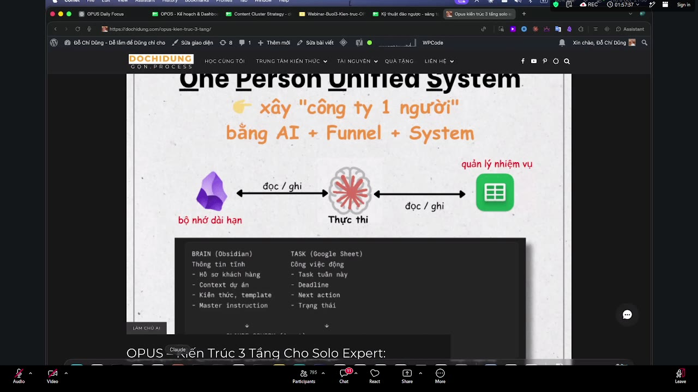
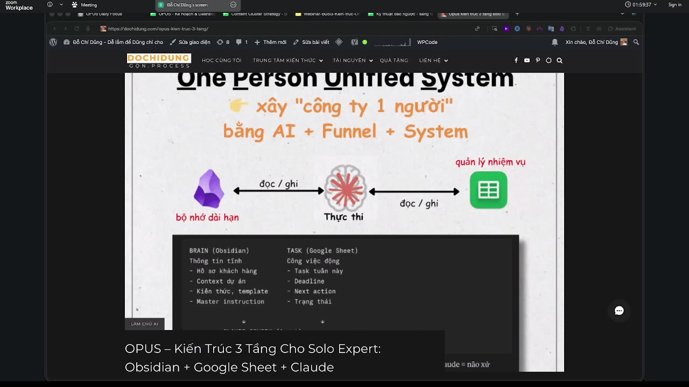
23. Kỹ năng tổ chức thư mục và kết nối tự động hóa 1:07:30
Kỹ năng cơ bản đầu tiên trong việc quản trị dữ liệu số là biết cách sắp xếp và lưu trữ file của từng khách hàng vào các thư mục riêng biệt. Thay vì tự mình nghĩ ra cấu trúc phức tạp, người dùng có thể trực tiếp hỏi các công cụ AI để nhận được những gợi ý phân loại thư mục cực kỳ thông minh. Một cấu trúc thư mục mẫu chuẩn mực bao gồm các danh mục rõ ràng như hồ sơ đầu vào, file template, sản phẩm dịch vụ, vận chuyển, nhân sự, và marketing.
Về mặt vận hành tự động hóa, hệ thống có khả năng kết nối trực tiếp với ứng dụng nhắn tin Telegram để nhận lệnh từ người dùng. Khi đã thiết lập xong kết nối, người dùng chỉ cần ra lệnh bằng ngôn ngữ tự nhiên trên Telegram để yêu cầu thêm công việc hoặc tạo tác vụ mới, hệ thống AI sẽ tự động ghi nhận và xử lý ngay lập tức.
Do thời lượng chương trình có hạn và lịch trình đang bị chậm tiến độ so với kế hoạch, phần thảo luận chi tiết về dữ liệu chuẩn hóa sẽ được dời sang buổi học thứ năm. Giảng viên khuyến khích học viên ghi lại toàn bộ các câu hỏi thắc mắc trong quá trình thực hành để mang đến buổi thảo luận tiếp theo mổ xẻ sâu hơn.
Phần cuối chương trình, ban tổ chức nhấn mạnh định hướng hoạt động minh bạch, cam kết không thực hiện các hành vi chèo kéo hay chốt sale khóa học. Học viên có thể kết nối trực tiếp với giảng viên Đỗ Chí Dũng qua trang web độchídũng.com hoặc qua trang Facebook cá nhân để được hỗ trợ giải đáp các thắc mắc chuyên môn trong thời gian sớm nhất.
- Cấu trúc thư mục mẫu chuẩn: Hồ sơ đầu vào, Template, Sản phẩm dịch vụ, Vận chuyển, Nhân sự, Marketing.
- Tự động hóa qua Telegram: Nhập câu lệnh trực tiếp để AI tạo việc và cập nhật hệ thống ngay lập tức.
- Hỗ trợ học viên: Giải đáp thắc mắc trực tiếp qua website độchídũng.com hoặc Facebook cá nhân.
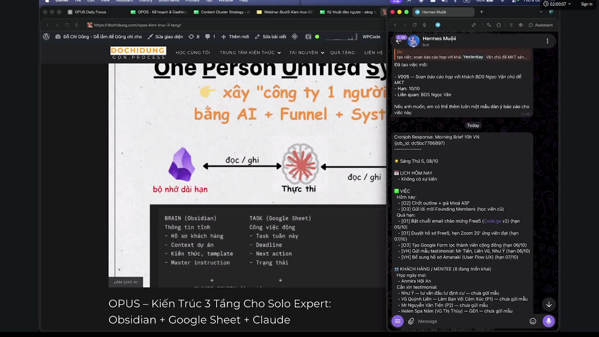
24. Xu hướng tìm kiếm tương lai và thay đổi hành vi người dùng 1:10:50
Mở đầu phần tiếp theo, giảng viên kiểm tra âm thanh và yêu cầu học viên tập trung cao độ vào nội dung chuyên đề sắp diễn ra. Chương trình của giảng viên Định được đánh giá là mang lại giá trị thực tế cao, giúp học viên có thể tiếp nạp kiến thức và ứng dụng ngay lập tức vào công việc hằng ngày thay vì chỉ học lý thuyết suông.
Một trong những thay đổi lớn nhất về hành vi số hiện nay là tỷ lệ người dùng chuyển sang tìm kiếm thông tin trực tiếp trên các nền tảng AI như ChatGPT và Gemini, đồng thời bỏ qua công cụ Google truyền thống. Giảng viên đặt câu hỏi gợi mở để người học tự nhìn nhận lại thời điểm lần gần nhất họ thực hiện một lệnh tìm kiếm trên Google, khi mà nhiều người có thể đã mất cả nửa tháng không cần dùng đến công cụ này.
Sự dịch chuyển từ công cụ tìm kiếm truyền thống sang trợ lý AI đang làm thay đổi hoàn toàn cách thức hiển thị thông tin và nhận diện thương hiệu trên thị trường. Nếu các cá nhân và doanh nghiệp không chủ động cập nhật kiến thức và chuẩn bị phương pháp tiếp cận mới từ sớm, họ sẽ đối mặt với nguy cơ mất lượng traffic quan trọng.
Buổi chuyên đề về quản trị dữ liệu và tối ưu hóa hiển thị trên AI được kỳ vọng sẽ cung cấp cho học viên những phương pháp chuẩn bị chiến lược đón đầu xu hướng. Việc thích ứng kịp thời với cách thức hoạt động của AI sẽ giúp duy trì sự hiện diện và nhận diện thương hiệu một cách vững chắc trong bối cảnh công nghệ chuyển mình.
- Hành vi dịch chuyển: Người dùng đang dần bỏ qua Google để chuyển sang tìm kiếm trực tiếp trên ChatGPT và Gemini.
- Nguy cơ rủi ro: Thiếu cập nhật cấu trúc dữ liệu cho AI có thể dẫn đến mất traffic và sụt giảm nhận diện thương hiệu.
- Mục tiêu buổi học: Cung cấp phương pháp chuẩn bị trước để thích ứng với kỷ nguyên tìm kiếm bằng AI.
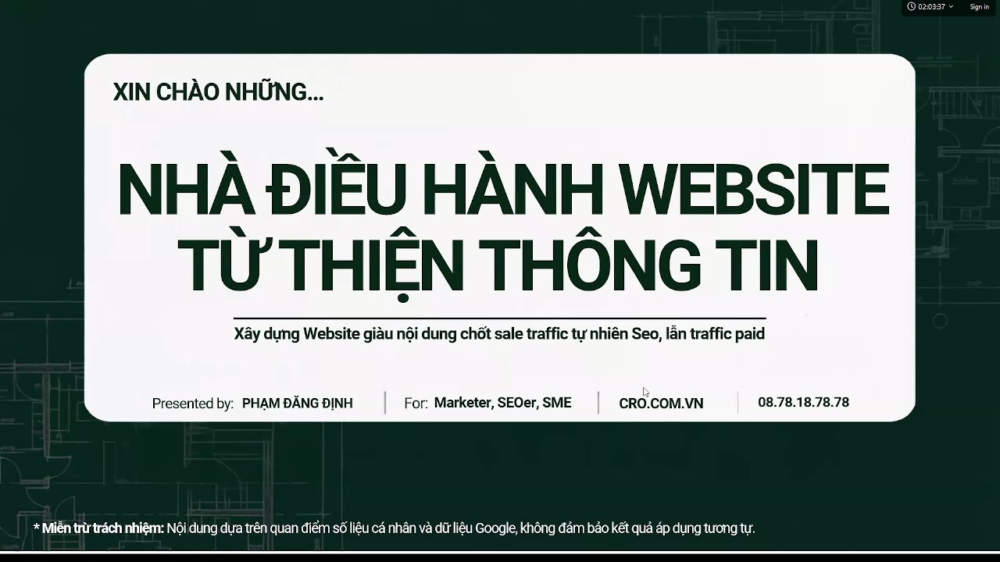
25. Giới thiệu diễn giả Định và tổng quan chiến lược tối ưu website 1:12:14
Phần mở đầu buổi chia sẻ, diễn giả Định gửi lời chào đến toàn thể người tham gia webinar, đặc biệt lưu ý những anh em kinh doanh sản phẩm hoặc dịch vụ đòi hỏi khách hàng phải tìm kiếm và tham chiếu kỹ lưỡng trước khi mua. Các lĩnh vực tiêu biểu được nhắc đến bao gồm tư vấn mỹ phẩm, thực phẩm chức năng, đồ điện tử gia dụng và các mặt hàng cần thông tin tư vấn chiều sâu trên Google. Sau phần ổn định đường truyền âm thanh và kiểm tra tương tác với khán giả qua phím số 2, diễn giả chia sẻ sự hồi hộp khi lâu ngày mới đứng lớp thuyết trình trực tuyến.
Tiếp nối chương trình, diễn giả Định giới thiệu chi tiết về bản thân và hành trình làm nghề phong phú từ năm 2013 đến nay. Anh hiện là Founder của agency TinyMedia, đơn vị chuyên sản xuất nội dung chuẩn SEO cho website với thành tích duy trì trang web đứng top 1 Google cho từ khóa dịch vụ viết bài trong nhiều năm liền. Vào thời điểm cao điểm, agency của anh cung cấp ra thị trường khoảng từ 500 đến 1000 bài viết mỗi ngày để đưa lên hệ thống website.
Nhìn lại chặng đường phát triển từ năm 2013 bắt đầu với công việc của một thợ viết tự do, đến năm 2018 anh bắt đầu nghiên cứu sâu về thuật toán Google với case study kéo lượng truy cập đạt chi phí chỉ 28 đồng một click tìm kiếm. Từ năm 2020 đến nay, anh tập trung hoàn toàn vào mảng SEO chuyển đổi và đạt được nhiều thành công vang dội qua các dự án thực tế ở nhiều lĩnh vực đa dạng như rút hầm cầu, đào tạo SEO, dịch vụ SEO, game massage cho đến bối tình yêu.
Mục tiêu cốt lõi mà diễn giả Định hướng tới trong suốt buổi chia sẻ không phải là những lý thuyết đao to búa lớn, mà là làm sao để kéo được khách hàng tiềm năng truy cập và thúc đẩy họ ra quyết định mua hàng ngay trên website của chính mình. Anh nhấn mạnh rằng trong bối cảnh công nghệ phát triển, việc kết hợp ba kỹ năng quan trọng trên một nền tảng website duy nhất sẽ tạo ra cỗ máy sinh ra khách hàng ngay lập tức chỉ trong khoảng thời gian từ một đến hai tuần.
- Sản phẩm dịch vụ cần tham chiếu: Mỹ phẩm, thực phẩm chức năng, điện tử gia dụng.
- Thông tin cá nhân: Founder TinyMedia, kinh nghiệm làm content từ 2013, nghiên cứu SEO từ 2018.
- Năng suất cao điểm: 500 - 1000 bài viết/ngày lên website.
- Các lĩnh vực SEO thành công: Rút hầm cầu, đào tạo SEO, dịch vụ SEO, game massage, bối tình yêu.
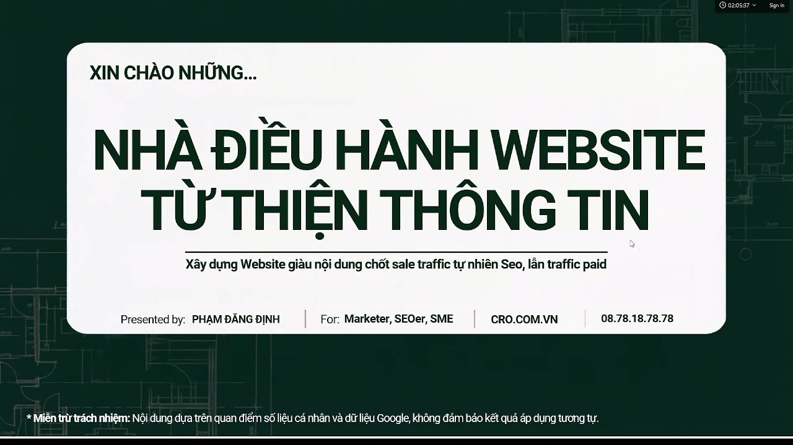
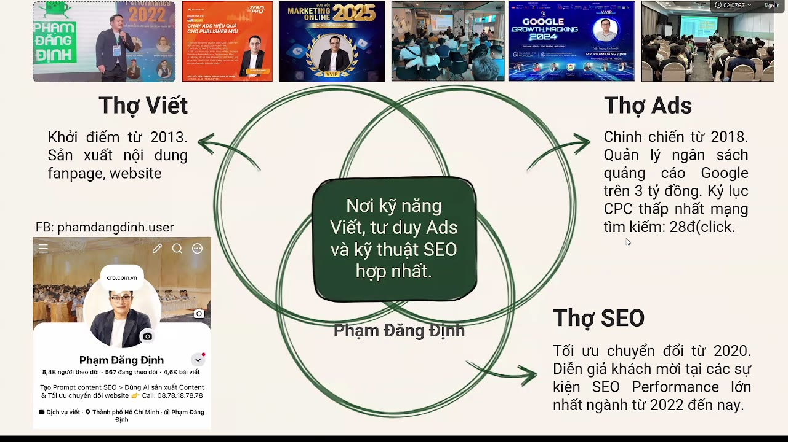
26. Sai lầm chí mạng khi dùng AI làm nội dung và bẫy marketing cho đối thủ 1:15:48
Mở đầu phần chuyên môn sâu, diễn giả tương tác với khán giả để khảo sát số lượng người tham gia đang sở hữu và trực tiếp vận hành website. Hầu hết những người tham dự webinar đều đã có website và đang ứng dụng Trí tuệ nhân tạo (AI) để sản xuất nội dung phục vụ hoạt động marketing. Tuy nhiên, diễn giả chỉ ra một thực trạng vô cùng xót xa mà nhiều chủ doanh nghiệp đang gặp phải: họ đang tự bỏ tiền túi, bỏ công sức và chi phí vận hành một bộ phận marketing để làm không công cho đối thủ cạnh tranh.
Nguyên nhân của hiện tượng này nằm ở chỗ trong kỷ nguyên AI, các bài viết được tạo ra quá hay, quá chuyên nghiệp và chi tiết. Khách hàng sau khi đọc xong cảm thấy được giáo dục kỹ lưỡng, được giải đáp mọi thắc mắc và trở nên hoàn toàn tin tưởng vào dòng sản phẩm. Thế nhưng, các bài viết này lại là những khối văn bản thuần túy trơn tuột, hoàn toàn thiếu vắng các bẫy tâm lý kích thích mua sắm cũng như không có nút kêu gọi hành động (CTA) tại đúng thời điểm khách hàng khao khát nhất.
Hậu quả là sau khi đọc xong nội dung và thỏa mãn sự tò mò trên website của bạn, khách hàng sẽ đóng tab trình duyệt lại ngay lập tức. Ngay sau đó, họ sẽ mở Google tìm kiếm lại tên sản phẩm, truy cập vào Facebook để mua hàng từ một đối thủ đang chạy quảng cáo mạnh mẽ, hoặc ghé thăm một đơn vị khác đang có chương trình hiển thị giảm giá hấp dẫn. Khán giả trong phòng họp trực tuyến đồng loạt xác nhận qua phím chữ T khi nhìn thấy chính câu chuyện của doanh nghiệp mình trong đó.
Diễn giả nhấn mạnh một quy luật đau xót trong kinh doanh số: bạn là người chịu cực khổ gieo hạt, tốn kém chi phí nuôi dưỡng thị trường, nhưng đối thủ lại là kẻ thừng hái quả ngọt cuối cùng. Tình trạng này không chỉ xảy ra với các doanh nghiệp nhỏ mà ngay cả những thương hiệu lớn trên thị trường cũng đang vấp phải chiếc bẫy tâm lý này, dẫn đến việc mất khách hàng vào tay các sàn thương mại điện tử hoặc nhà bán lẻ lớn.
- Thực trạng: Dùng AI viết bài rất hay nhưng quên mất Call-to-Action (CTA) và bẫy tâm lý.
- Hành vi khách hàng: Đọc xong thỏa mãn, tắt trang web, sau đó sang đối thủ hoặc sàn thương mại điện tử mua hàng.
- Hậu quả: Tốn kém chi phí token, nhân sự, thời gian làm marketing miễn phí cho đối thủ.
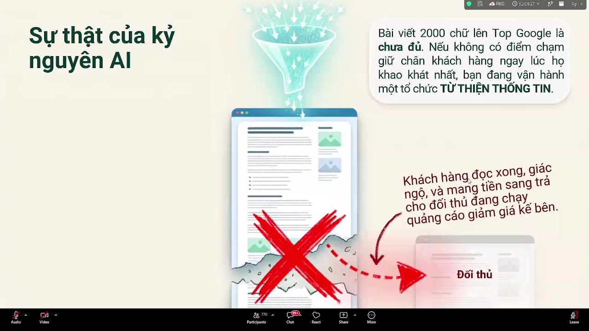
27. So sánh tư duy triển khai website giữa nội dung thuần chữ và kệ hàng thương mại 1:17:48
Để làm rõ vấn đề này, diễn giả đưa ra một ví dụ thực tế khi người dùng lên Google gõ tìm kiếm từ khóa 'laptop 2026'. Ở màn hình bên trái là cách triển khai phổ biến của đa số người làm SEO hiện nay: website viết một khối văn bản khổng lồ dài dằng dặc kèm theo một vài hình ảnh minh họa đơn giản. Mặc dù cấu trúc này đã chuẩn SEO tuyệt đối và đạt thứ hạng cao trên Google, nhưng toàn là chữ khiến người đọc phải lướt mỏi tay, đọc xong thỏa mãn sự tò mò rồi đóng tab ra đi.
Ngược lại, ở màn hình bên phải cũng với từ khóa 'laptop 2026', các thương hiệu lớn và chuyên nghiệp áp dụng một cách tiếp cận hoàn toàn khác biệt. Ngay khi đập vào mắt người xem không phải là một bức tường chữ dày đặc, mà là một 'kệ hàng' trực quan sinh động bao gồm hình ảnh sản phẩm thực tế, mức giá niêm yết rõ ràng, phần trăm giảm giá hấp dẫn cùng nút 'Mua ngay' được bố trí nổi bật.
Diễn giả chỉ rõ sự khác biệt căn bản giữa hai mô hình: nội dung bên trái chỉ được thiết kế thuần túy để 'đọc và thỏa mãn trí tò mò', trong khi nội dung bên phải được thiết kế tối ưu để 'trưng bày sản phẩm và chốt đơn'. Nếu cá nhân doanh nghiệp tiếp tục dùng AI chỉ để tạo ra các bài viết toàn chữ như mô hình bên trái, họ sẽ tiếp tục lãng phí tiền bạc, token và nhân sự để giáo dục thị trường cho các hệ thống lớn như Thế Giới Di Động.
Khép lại phần phân tích, diễn giả chuẩn bị chuyển sang phần chia sẻ các thao tác thực tế trên màn hình để minh họa cụ thể cách thức chuyển đổi giao diện website từ dạng văn bản thông thường sang dạng kệ hàng chuyển đổi cao. Mặc dù có đôi chút hồi hộp vì lâu ngày không thuyết trình trước đông đảo người nghe, anh vẫn giữ vững năng lượng để truyền tải trọn vẹn tư duy thực chiến này.
- Mô hình bên trái (Lỗi phổ biến): Khối văn bản dài, chuẩn SEO nhưng toàn chữ, dễ khiến khách hàng đọc xong rồi thoát trang.
- Mô hình bên phải (Chuẩn chuyển đổi): Trưng bày dạng kệ hàng có hình ảnh, giá bán, % giảm giá và nút mua ngay trực quan.
- Hậu quả mô hình cũ: Tốn token AI, tốn nhân sự viết bài giáo dục khách hàng để rồi nhường đơn hàng cho đối thủ lớn.
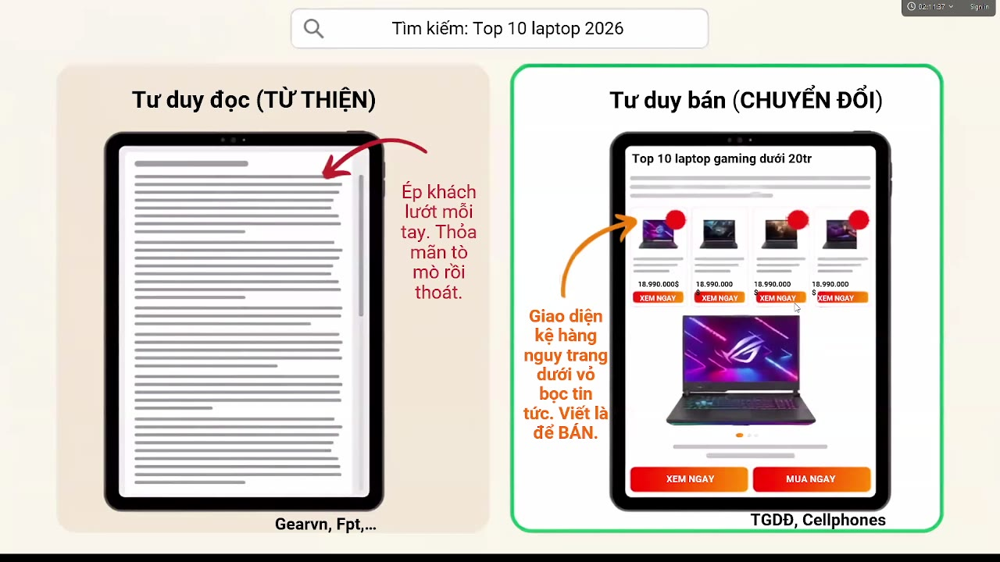
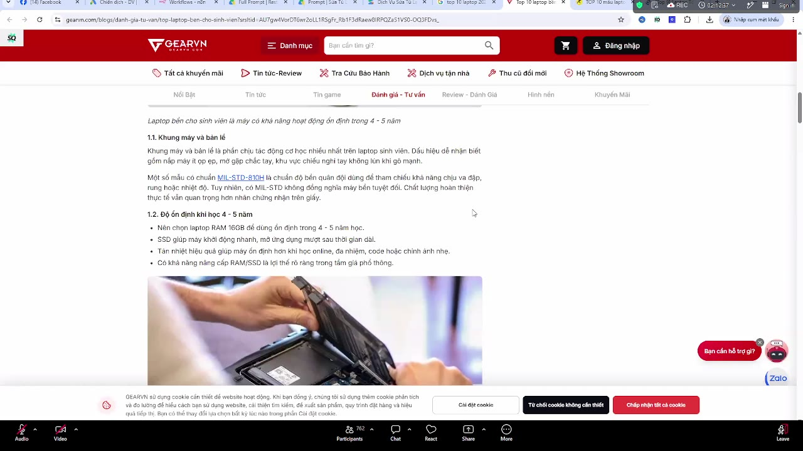
28. Phân biệt nội dung tự sự thông tin và nội dung tối ưu chuyển đổi 1:20:16
Giảng viên mở đầu phần học bằng cách phân tích hai dạng nội dung website phổ biến thông qua ví dụ thực tế về từ khóa top 10 laptop. Dạng nội dung đầu tiên là kiểu tự sự thông tin thuần túy, trong đó người đọc cảm thấy rất thoải mái khi đọc nhờ lượng thông tin dồi dào và trôi chảy. Tuy nhiên, cấu trúc của dạng này thường chỉ là một khối văn bản lớn, đôi khi được chèn thêm hình ảnh do trí tuệ nhân tạo (AI) tạo ra một cách ngẫu nhiên sau quãng thời gian dài. Kiểu nội dung này mặc dù cung cấp kiến thức nhưng lại thiếu đi tính bố cục thương mại và khả năng dẫn dắt hành vi người dùng.
Ngược lại, giảng viên lấy ví dụ từ website của Thế giới di động để minh họa cho cách triển khai nội dung hướng tới chuyển đổi cực kỳ hiệu quả. Ngay khi người dùng truy cập vào trang, họ sẽ ngay lập tức nhìn thấy các danh mục sản phẩm nổi bật, tiếp theo là hệ thống banner khuyến mại được bố trí khoa học. Cấu trúc trang tiếp tục đan xen giữa thông số kỹ thuật laptop, danh mục sản phẩm theo thương hiệu và các chương trình giảm giá hấp dẫn. Đa phần các ưu đãi tốt nhất của ngành hàng đều được ưu tiên hiển thị ở vị trí cao nhất nhằm thu hút sự chú ý tối đa từ phía khách hàng.
Qua sự so sánh trực quan này, giảng viên nhấn mạnh sự khác biệt cốt lõi giữa hai tư duy làm nội dung trên internet hiện nay. Phía bên trái đại diện cho cách sản xuất nội dung chỉ để đọc lấy thông tin, trong khi phía bên phía bên phải là chiến lược xây dựng website gắn liền với phễu chuyển đổi thương mại. Việc nhận thức rõ ranh giới này giúp các nhà quản trị website điều chỉnh lại định hướng viết content sao cho không chỉ giữ chân người đọc mà còn phải tạo ra doanh thu thực tế.
Tiếp nối buổi học, giảng viên chuyển sang phân tích nền móng của một website khi trang web gặp tình trạng không có chuyển đổi. Việc xác định đúng gốc rễ vấn đề giúp doanh nghiệp tránh lãng phí ngân sách đầu tư vào traffic mà không thu lại giá trị tương xứng.
- Nội dung tự sự thông tin: Khối văn bản dài, đọc hay nhưng thiếu cấu trúc thương mại, chèn ảnh AI ngẫu nhiên.
- Nội dung chuyển đổi (Ví dụ Thế giới di động): Bố trí danh mục ngay từ đầu, banner khuyến mại dày đặc, ưu đãi tốt nhất đặt lên trên, đan xen thương hiệu và cấu hình.
29. Năm lỗ hổng chí mạng khiến website không có chuyển đổi 1:22:43
Lỗ hổng đầu tiên khiến website mất điểm chuyển đổi chính là việc thiếu nền tảng niềm tin cơ bản. Nhiều người làm SEO tập trung vào việc đẩy từ khóa lên top nhưng lại bỏ quên các trang chính sách quan trọng như chính sách mua bán, đổi trả, bảo hành, hoặc các trang giới thiệu công ty và thông tin liên hệ tử tế. Về bản chất, không một khách hàng nào dám chuyển tiền cho một cá nhân hay thực thể trên mạng nếu website đó thiếu minh bạch và không có thông tin pháp lý rõ ràng.
Lỗ hổng thứ hai là tình trạng sản xuất nội dung chỉ để phục vụ cho con bot của công cụ tìm kiếm chứ không viết cho con người. Nhiều người làm SEO thường cảm thấy tự hào khi từ khóa đạt top 1 hoặc được AI Overview hiển thị, nhưng doanh thu thực tế lại không tăng trưởng tương xứng với ngân sách đầu tư quảng cáo và SEO. Nguyên nhân là do bài viết chỉ mải nhồi nhét từ khóa cho qua mắt công cụ tìm kiếm mà hoàn toàn thiếu đi các điểm chạm cảm xúc, nghệ thuật dẫn dắt và các lời kêu gọi hành động (CTA) rõ ràng.
Lỗ hổng thứ ba bắt nguồn từ việc quá lạm dụng AI để viết bài hàng loạt mà thiếu sự kiểm duyệt kỹ lưỡng. Với sự hỗ trợ của các công cụ AI hiện nay, người dùng chỉ cần thả một từ khóa bất kỳ là trong vòng 30 giây có thể sinh ra ngay một bài viết dài từ 1000 đến 2000 chữ. Tuy nhiên, phần lớn các bài viết dạng này mang tính chất sáo rỗng, thoạt đầu đọc có vẻ ổn nhưng khi những người đang thực sự gặp vấn đề đọc vào sẽ thấy không chạm đến nỗi đau của họ, dẫn đến việc không thể chốt đơn.
Lỗ hổng thứ tư được ví von như việc đổ nước vào một chiếc xô thủng, tượng trưng cho sự thiếu hụt của phễu chuyển đổi (funnel). Khách hàng truy cập vào đọc một bài viết rất hay nhưng sau khi đọc xong lại thoát ra ngoài mà không có bất kỳ bài viết gợi ý nào khác để đọc tiếp hoặc không có mồi nhử (list magnet) để thu thập dữ liệu khách hàng. Traffic cứ thế đi vào rồi đi ra mà không có cơ chế dẫn dắt người lạ trở thành người quen rồi trở thành khách hàng trung thành.
Lỗ hổng thứ năm và cũng là lỗ hổng rất phổ biến là việc bỏ quên 95% đại dương khách hàng tiềm năng trên thị trường. Thị trường luôn được ví như một tảng băng trôi, trong đó chỉ có khoảng 3 đến 5% khách hàng nổi lên trên đang có nhu cầu mua hàng ngay lập tức và thường xuyên gõ các từ khóa kèm tên sản phẩm. Đa số các nhà quảng cáo đều đổ tiền vào cạnh tranh ở phân khúc này, trong khi có tới 95% người dùng chìm bên dưới đang ở giai đoạn tìm hiểu thông tin nhưng lại bị bỏ quên, đồng nghĩa với việc doanh nghiệp đang dâng toàn bộ thị trường tương lai cho đối thủ.
- Lỗ hổng 1: Thiếu trang chính sách, giới thiệu công ty, thông tin liên hệ tạo dựng niềm tin.
- Lỗ hổng 2: Viết content cho bot SEO thay vì cho con người, đạt top nhưng không có chuyển đổi và CTA.
- Lỗ hổng 3: Lạm dụng AI tạo nội dung hàng loạt, bài viết sáo rỗng không chạm đến cảm xúc người đọc.
- Lỗ hổng 4: Xô thủng phễu chuyển đổi, khách đọc xong thoát web, thiếu bài đọc tiếp và thiếu list magnet.
- Lỗ hổng 5: Chỉ tập trung vào 3-5% khách hàng mua ngay, bỏ quên 95% khách hàng đang tìm hiểu thông tin ở đáy tảng băng.
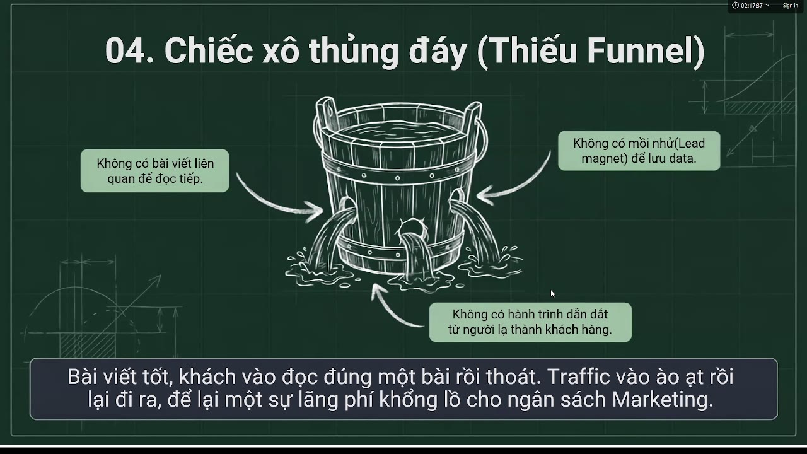
30. Kinh nghiệm thực chiến và Case Study website chuẩn chuyển đổi 1:27:10
Để bổ sung cho những phân tích của giảng viên Định, một diễn giả khác chia sẻ thêm kinh nghiệm thực chiến đúc kết từ việc xây dựng hệ thống website từ giai đoạn 2013-2014. Trong giai đoạn đó, việc sở hữu gần 20 website đồng thời đòi hỏi sự chăm chút tỉ mỉ về mặt nội dung lẫn kỹ thuật SEO. Đặc biệt, trong lĩnh vực thẩm mỹ và mỹ phẩm, việc duy trì một website có nội dung chỉnh chu là yếu tố tiên quyết để tạo dựng uy tín vững chắc với người tiêu dùng.
Để làm rõ cách thức hoạt động của một mô hình website tối ưu, diễn giả giới thiệu một case study cụ thể để học viên tham khảo trực tiếp trên thực tế. Khi người dùng truy cập vào trang web này, điều đập ngay vào mắt họ ở phần đầu trang chính là các chính sách gỡ bỏ rủi ro rõ ràng như chính sách miễn phí vận chuyển hoặc các ưu đãi giá trị lớn.
Việc bố trí các chính sách cam kết ngay tại vị trí cao nhất của trang giúp giải tỏa lập tức tâm lý e ngại của khách hàng mua sắm trực tuyến. Ngay bên dưới các chính sách đó là hệ thống thông tin liên hệ chi tiết, đảm bảo sự minh bạch tối đa giữa doanh nghiệp và người mua hàng.
Thông qua ví dụ này, các học viên được khuyến khích áp dụng ngay tư duy thiết kế trang chủ gắn liền với việc gỡ bỏ rủi ro và trưng bày chính sách có lợi cho khách hàng. Đây chính là mảnh ghép hoàn thiện giúp khắc phục triệt để các lỗ hổng đã được chỉ ra trong phần trước của bài giảng.
- Kinh nghiệm từ 20 website từ năm 2013-2014 trong ngành mỹ phẩm và thẩm mỹ.
- Case study thực tế: Hiển thị ngay chính sách miễn phí ship và ưu đãi ở đầu trang.
- Yếu tố cốt lõi: Gỡ bỏ rủi ro ngay từ cái nhìn đầu tiên để tăng tỷ lệ chốt đơn.
31. Tối ưu hóa trải nghiệm website và bài học từ chính sách của doanh nghiệp lớn 1:28:18
Giảng viên phân tích chi tiết về cách bố trí nội dung trên trang web của QMET, nơi các chính sách đổi trả hàng được đặt ngay ở vị trí đầu tiên để thu hút sự chú ý của người dùng. Sàn thương mại điện tử hiện nay quá mạnh, và yếu tố cốt lõi giữ chân khách hàng mua trực tiếp trên website thay vì sàn (dù giá web rẻ hơn) chính là sự bảo chứng từ website đó. Do đó, QMET đã thấu hiểu tâm lý này rất kỹ và đưa các cam kết bảo vệ khách hàng lên vị trí cao nhất. Khi trải nghiệm phiên bản mobile qua đường link chia sẻ, giao diện mang lại cảm giác cực kỳ quen thuộc, mượt mà và trực quan với phần video xuất hiện ngay từ đầu.
Trải nghiệm cảm xúc trên website QMET được đánh giá là rất chill và bắt mắt hơn cả sàn thương mại điện tử vốn bị giới hạn bởi các khung frame cứng nhắc. Ngay sau phần video, khi người dùng cuộn xuống một chút, họ sẽ thấy rõ ràng các thông tin về trọn bộ site, quà tặng đính kèm và các chính sách đi kèm. Giảng viên khuyến nghị anh em làm website nên học hỏi cách làm này từ những mô hình lớn như Coolmate hay Thế Giới Di Động từ những ngày đầu.
Tuy nhiên, giảng viên đưa ra lời cảnh báo rất nghiêm khắc về việc sao chép chính sách của các thương hiệu lớn như Coolmate hay Thế Giới Di Động. Việc copy nguyên văn các chính sách lớn như đổi trả miễn phí 60 ngày sang các ngành hàng khác như mỹ phẩm hay điện tử gia dụng là một sai lầm chết người. Khách hàng hoàn toàn có thể sử dụng sản phẩm suốt 40 đến 50 ngày rồi mang đi đổi trả, gây thiệt hại nặng nề cho doanh nghiệp.
Chính sách của một tổ chức phải được xây dựng dựa trên nội lực và năng lực thực tế của doanh nghiệp mình chứ không thể đi copy bừa bãi từ bên ngoài. Nếu cứ sao chép bề ngoài mà không tính toán đến nội lực, doanh nghiệp sẽ sớm gặp rủi ro lớn. Do đó, trước khi tạo ra bất kỳ chuyển đổi nào trên website, việc vá ngay năm lỗ hổng cốt lõi của website là điều kiện tiên quyết để tối ưu hiệu quả kinh doanh.
- Đặt chính sách đổi trả và bảo chứng khách hàng lên đầu trang web.
- Tận dụng video và giao diện mượt mà để tăng cảm xúc trải nghiệm.
- Cảnh báo: Không sao chép máy móc chính sách 60 ngày đổi trả của Coolmate sang ngành hàng khác.
- Chính sách doanh nghiệp phải dựa trên nội lực thực tế thay vì sao chép bề ngoài.
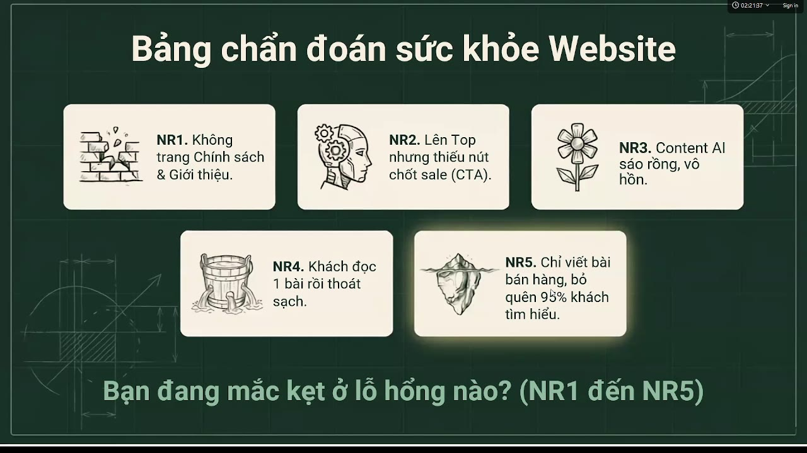
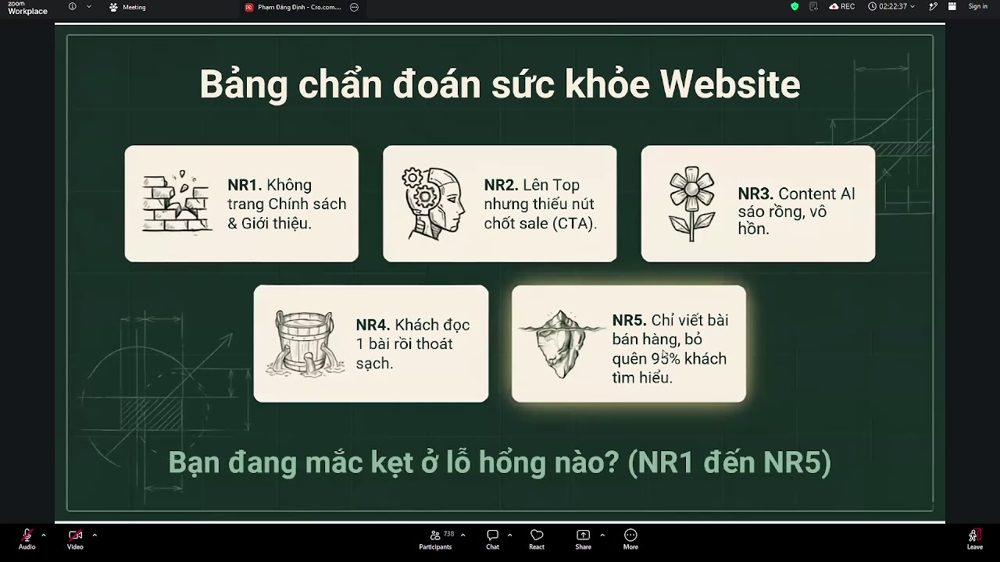
32. Hệ thống phễu nội dung và chiến lược tối ưu traffic từ Case Study Thế Giới Di Động 1:31:13
Giảng viên nhấn mạnh tầm quan trọng sống còn của việc triển khai website số lượng lớn trong bối cảnh tương lai AI sẽ chủ yếu đề xuất dữ liệu lấy trực tiếp từ website hoặc các nguồn sở hữu cá nhân thay vì truy cập máy tính người dùng. Trước khi kỳ vọng website tạo ra chuyển đổi, người quản trị bắt buộc phải vá các lỗ hổng hệ thống. Bài toán thực chiến được lấy cảm hứng từ hệ thống của Thế Giới Di Động, Điện Máy Xanh và Bách Hoá Xanh – những đơn vị sở hữu lượng traffic khủng khiếp lên tới hàng trăm triệu lượt mỗi tháng, đảm bảo mọi vị trí giao diện của họ đều đã được tối ưu qua dữ liệu thực tế khổng lồ.
Giả định kinh doanh một dòng sản phẩm điện thoại gaming cho sinh viên, hệ thống phễu nội dung được chia thành các tầng rõ rệt. Tầng đáy phễu (tầng nóng) là nơi tập trung hoàn toàn cho việc bán hàng và chốt đơn, nhắm trực tiếp vào các từ khóa tên sản phẩm cụ thể như Redmi C75, Samsung A16, Vivo E3 hay iPhone 18. Khác với thông thường, trang đích ở đáy phễu này của Thế Giới Di Động bố trí rất ít thông tin sản phẩm chi tiết mà tập trung tối đa vào các chương trình giảm giá, khuyến mại nhằm mục đích duy nhất là chốt sale.
Chi phí quảng cáo (CPC) ở tầng đáy phễu rất đắt đỏ, ví dụ từ khóa Redmi C75 có thể tiêu tốn khoảng 10.000 đồng cho mỗi lượt click, thậm chí các ngành hàng giá trị cao như thẩm mỹ có thể lên tới hàng trăm ngàn đồng mỗi cú nhấp chuột. Nếu doanh nghiệp chỉ chăm chăm đổ tiền chạy quảng cáo ở đáy phễu mà bỏ qua các tầng khác thì ngân sách sẽ nhanh chóng cạn kiệt. Do đó, tầng giữa phễu đóng vai trò thu hút lượng người dùng chưa có nhu cầu mua ngay nhưng đang tìm kiếm thông tin trên Google hoặc các công cụ AI.
Ở tầng giữa phễu, nội dung không phải là trang bán hàng lộ liễu mà là trang tư vấn chuyên sâu, giải đáp các thắc mắc như 'điện thoại chơi game dưới 5 triệu', 'điện thoại dưới 10 triệu' hoặc so sánh chip Snapdragon với các dòng chip khác. Mục tiêu tối thượng của tầng này là xây dựng niềm tin vững chắc thông qua việc tư vấn cực kỳ kỹ càng, sau đó khéo léo điều hướng khách hàng vượt phễu nhảy sang trang sản phẩm ở đáy phễu. Nhờ chiến lược phân tầng này, chi phí quảng cáo Google ở các tầng trên sẽ rẻ hơn khoảng 40-50%, chỉ rơi vào khoảng 4.000 đồng mỗi click.
- Website là nguồn dữ liệu cốt lõi để AI đề xuất trong tương lai.
- Case Study Thế Giới Di Động: Tận dụng traffic hàng trăm triệu để tối ưu giao diện.
- Đáy phễu (Nóng): Tập trung từ khóa tên máy cụ thể, ưu đãi giảm giá mạnh để chốt đơn, CPC đắt đỏ (khoảng 10.000đ/click trở lên).
- Giữa phễu: Trang tư vấn chi tiết, so sánh sản phẩm để xây dựng niềm tin, điều hướng về trang sản phẩm và giảm chi phí Ads xuống khoảng 4.000đ/click.
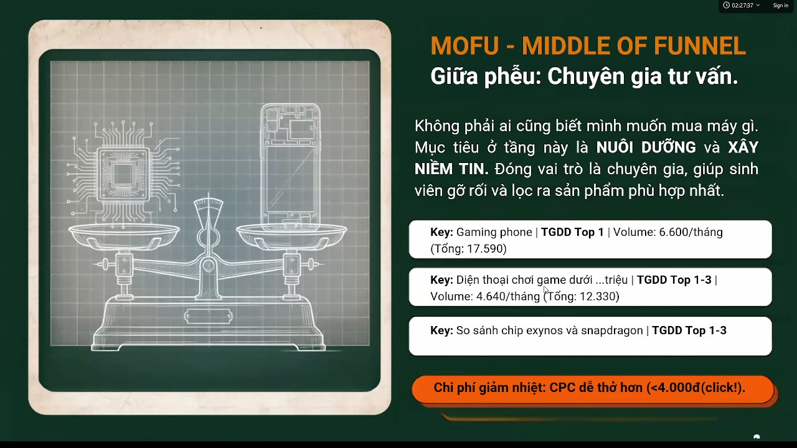
33. Chiến lược đỉnh cao chiếm lĩnh đỉnh phễu (TOFU) từ Case Study Thế Giới Di Động 1:36:18
Giảng viên đưa ra một ví dụ thực tế và ít ai biết về chiến lược nội dung của Thế Giới Di Động, khi một thương hiệu chuyên bán điện thoại, thiết bị di động lại viết các bài đăng về mã game như code Block Fruits hay Coin Master. Lý do đằng sau chiến lược này là vì lưu lượng tìm kiếm (search volume) của những từ khóa này cực kỳ khổng lồ, ví dụ như từ khóa code Block Fruits đạt khoảng 246 ngàn lượt tìm kiếm mỗi tháng, trong khi Coin Master lên tới khoảng 450 ngàn lượt tìm kiếm hàng tháng. Thậm chí, nếu tính tổng các từ khóa ngách liên quan đến game và từ khóa tên game chạy trên điện thoại, lưu lượng tìm kiếm thực tế có thể lên tới gần 1 triệu đến 1.5 triệu traffic mỗi tháng.
Đối tượng chính thực hiện các tìm kiếm này chủ yếu là học sinh, sinh viên và những người trẻ tuổi có nhu cầu chơi game mobile. Thế Giới Di Động không chờ đợi đến khi điện thoại của khách hàng bị hư hỏng mới tiếp cận, mà họ chủ động giăng lưới từ rất sớm ngay từ giai đoạn khách hàng quan tâm đến giải trí, tìm hiểu các dòng game gây tốn chip, nóng máy hay các pipeline xử lý đồ họa. Nhờ cách tiếp cận này, mỗi tháng họ gom về hàng trăm ngàn đến hàng triệu khách hàng tiềm năng là học sinh, sinh viên truy cập vào website của mình.
Xét về mặt chi phí chuyển đổi và hiệu quả phễu marketing, nếu chi phí cho mỗi lead ở tầng cuối phễu (BOFU) là khoảng 10 ngàn đồng, ở giữa phễu (MOFU) là khoảng 4 ngàn đồng, thì chi phí thu hút lead ở đỉnh phễu (TOFU) thông qua nội dung game lại vô cùng rẻ, chưa đến 50 đồng cho mỗi lượt. Ở giai đoạn hiện tại, đây là một ngách gần như không có đối thủ cạnh tranh mạnh mẽ trực diện. Qua đó, Thế Giới Di Động đã khéo léo chuyển đổi website của mình từ một trang thương mại điện tử thuần túy thành một trung tâm giới thiệu, tư vấn thông tin và giải pháp về game.
Chiến lược này giúp thương hiệu khắc sâu vào tâm trí khách hàng, trở thành cái tên đầu tiên xuất hiện trong đầu họ khi có nhu cầu mua điện thoại mới để chơi game. Về tỷ trọng phân bổ trong các tầng phễu marketing, tầng đáy phễu (BOFU - trang sản phẩm, dịch vụ) thường chỉ chiếm khoảng 2.09%, tầng giữa phễu (MOFU) chiếm khoảng 1.75%, trong khi tầng đỉnh phễu (TOFU) chiếm hơn 95% tỷ trọng. Phần lớn các website thông thường chỉ tập trung xâu xé miếng bánh nhỏ hẹp 2% ở đáy phễu, bỏ quên nguồn traffic khổng lồ ở phía trên.
- Code Block Fruits: volume tìm kiếm ~246 ngàn/tháng (traffic thực tế gần 1 triệu/tháng)
- Coin Master: volume tìm kiếm ~450 ngàn/tháng (traffic thực tế khoảng 1.5 triệu/tháng)
- Chi phí mỗi lead ở đáy phễu: ~10.000 VNĐ
- Chi phí mỗi lead ở giữa phễu: ~4.000 VNĐ
- Chi phí mỗi lead ở đỉnh phễu: Dưới 50 VNĐ
- Tỷ trọng phễu: Đáy phễu ~2.09%, Giữa phễu ~1.75%, Đỉnh phễu >95%
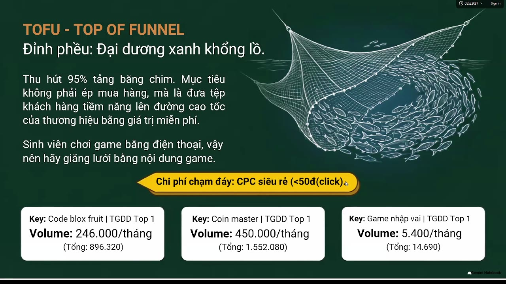
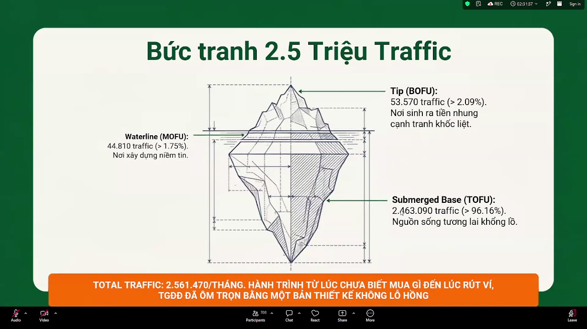
34. Bí mật Cookie, Phễu nội dung đa ngành và Ứng dụng Markdown giao tiếp với AI 1:39:44
Giảng viên hé lộ một kỹ thuật chuyên môn cao rất phổ biến trên thế giới nhưng ít người Việt Nam chú trọng, đó là "bí mật cookie". Khi Thế Giới Di Động kéo được một học sinh sinh viên vào website đọc bài viết về game, hệ thống sẽ ghi nhận cookie người dùng. Vài tháng sau, khi những người này có nhu cầu mua điện thoại (như iPhone 15) và lên mạng tìm kiếm, các nền tảng quảng cáo và thuật toán Google sẽ ưu tiên đẩy website của Thế Giới Di Động lên top vì nhận diện đây là trang web mà người dùng thường xuyên truy cập.
Chiến lược phủ phễu nội dung toàn diện này không chỉ áp dụng cho ngành điện máy mà còn thành công ở nhiều lĩnh vực khác, đơn cử như nhà thuốc Long Châu. Long Châu triển khai hệ thống nội dung từ đỉnh phễu với các bài viết về triệu chứng bệnh chung (ví dụ: đau đầu), chuyển sang giữa phễu với các bài so sánh các loại thuốc khác nhau (như so sánh Paracetamol và Ibuprofen), và kết thúc ở đáy phễu khi khách hàng tự chọn mua loại thuốc phù hợp. Bằng cách thâu tóm toàn bộ từ khóa từ đầu đến cuối phễu, chi phí quảng cáo trung bình sẽ giảm xuống mức rẻ nhất chỉ 50 đồng.
Để vận hành chiến lược này, thách thức lớn nhất của doanh nghiệp là khối lượng nhân sự khổng lồ để sản xuất hàng trăm ngàn bài viết chất lượng. Trong quá khứ, đây là thế mạnh riêng của các tập đoàn lớn, nhưng hiện nay bất kỳ ai cũng có thể làm được nhờ ứng dụng Trí tuệ Nhân tạo (AI). Tuy nhiên, giảng viên chỉ ra một vấn đề phổ biến mà người làm nội dung hay gặp phải là khi yêu cầu AI viết bài ngắn gọn, trực diện theo đúng ý muốn, kết quả trả về thường không đạt yêu cầu và đi chệch định hướng ban đầu.
Để khắc phục tình trạng AI hiểu sai ý, giảng viên giới thiệu phương pháp sử dụng Markdown kết hợp với các ký tự đặc biệt như dấu sao (*), dấu thăng (#), và dấu ngoặc kép ("") trong câu lệnh (prompt) giao tiếp với AI. Markdown không chỉ đóng vai trò là công cụ lưu trữ dữ liệu thông thường, mà còn là ngôn ngữ cấu trúc giúp người dùng ra lệnh chính xác cho AI để sản xuất hàng loạt nội dung chuẩn SEO quy mô lớn.
- Bí mật cookie: Ghi nhận lịch sử truy cập để khi khách có nhu cầu mua hàng ở đáy phễu, website của hãng sẽ hiển thị ưu tiên trên Google.
- Ứng dụng tại Long Châu: Phủ từ khóa từ triệu chứng (TOFU) -> So sánh thuốc (MOFU) -> Quyết định mua thuốc (BOFU).
- Vấn đề với AI: Yêu cầu viết ngắn gọn, trực diện nhưng AI thường trả về nội dung lan man, sai ý.
- Giải pháp: Sử dụng Markdown (dấu sao, dấu thăng, dấu ngoặc kép) trong Prompt để kiểm soát và huấn luyện AI sản xuất nội dung chuẩn SEO.
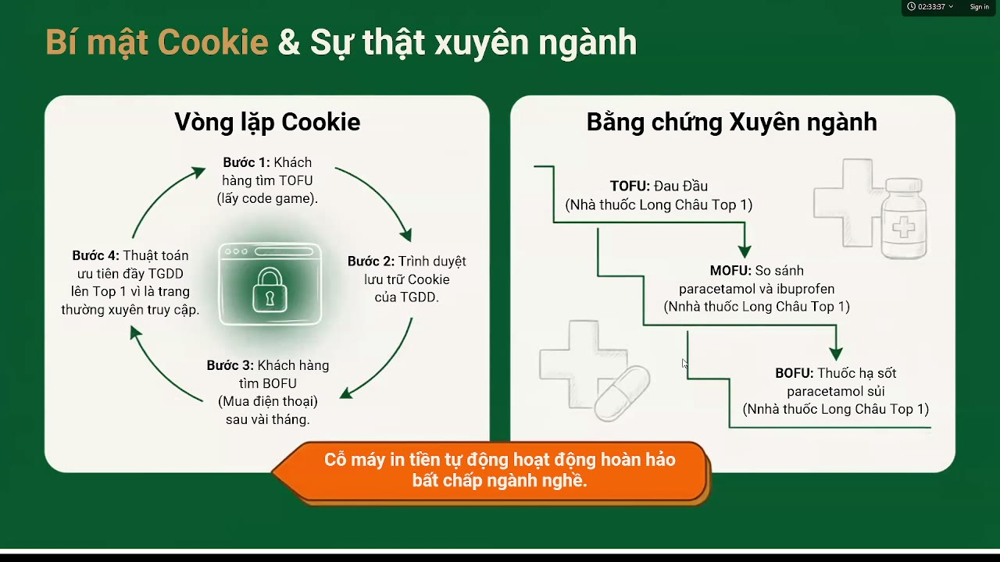
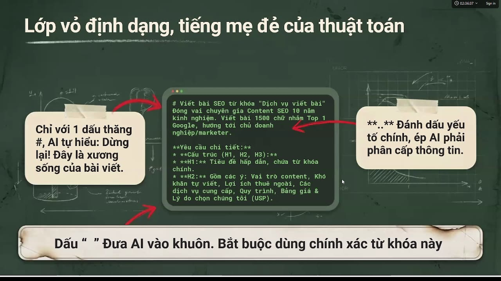
35. Tầm quan trọng của Markdown và Năng lực chuyên môn khi Prompting 1:44:19
Việc áp dụng định dạng Markdown vào câu lệnh (prompt) giúp người dùng vượt trội hơn khoảng 50% thị trường sản xuất nội dung văn bản hiện nay. Quy trình chuyển đổi prompt thông thường sang Markdown rất đơn giản: người dùng chỉ cần viết một bản prompt rõ ràng, chi tiết, sau đó yêu cầu chính AI định dạng lại toàn bộ câu lệnh đó theo cấu trúc Markdown. Khi đưa prompt chuẩn Markdown vào, AI sẽ có cấu trúc thông tin mạch lạc để sản xuất ra kết quả có chất lượng cao vượt bậc so với văn bản thuần.
Tuy nhiên, định dạng Markdown chỉ đóng vai trò là hình thức bên ngoài (đúng định dạng) chứ không thể thay thế cho bản chất nội dung bên trong. Giảng viên nhấn mạnh nguyên lý: nếu 'ruột' bên trong rỗng thì kết quả đầu ra cũng sẽ rỗng tuếch. Một prompt dù chuẩn chỉnh cấu trúc nhưng chứa các thuật ngữ chuyên môn như E-E-A-T (Kinh nghiệm, Chuyên môn, Thẩm quyền, Độ tin cậy), Semantic Search, TOFU/MOFU/BOFU hay Keyword Cannibalization sẽ trở nên vô nghĩa nếu người dùng không hiểu bản chất của chúng. Nếu không hiểu thuật ngữ, người dùng sẽ hoàn toàn bất lực trong việc đánh giá AI làm đúng hay sai.
Prompt được ví như một cây 'Đồ Long Đao' sắc bén, nhưng nếu trao thanh đao đó cho một đứa trẻ thì nó cũng chỉ dùng để gọt trái cây. Bí quyết sử dụng AI hiệu quả không nằm ở các 'thần chú prompt' màu nhiệm được chia sẻ tràn lan trên mạng, mà nằm ở chính 'level' - tức trình độ chuyên môn của người ra lệnh. AI không nâng tầm tư duy của con người mà nó đóng vai trò như một tấm gương phản chiếu chính xác trình độ của người sử dụng nó.
Khi người dùng sở hữu kiến thức sâu về phễu tiếp thị hoặc thuật toán, họ chỉ cần đưa đúng các thuật ngữ chuyên ngành thì AI sẽ lập tức 'hóa thân' thành một chuyên gia thực thụ để triển khai nội dung. Thay vì phải viết một đoạn chỉ dẫn dài dòng mô tả cách hành văn gãy gọn, người dùng chỉ cần viết 5 chữ: 'viết theo phong cách Hemingway', AI sẽ tự động đáp ứng chính xác. Tương tự trong SEO, thay vì liệt kê chi tiết các bước đặt câu hỏi, định nghĩa, giải thích tầm quan trọng và bổ sung số liệu, chuyên gia chỉ cần ra lệnh xử lý 'Content Gap' là AI đã hiểu trọn vẹn yêu cầu.
- Cách tạo Prompt Markdown: Viết prompt chi tiết -> Nhờ AI chuyển đổi sang Markdown -> Sử dụng prompt mới để tạo nội dung.
- Bản chất của AI: AI không nâng tầm tư duy mà chỉ phản chiếu tư duy và trình độ chuyên môn của người dùng.
- Sức mạnh của thuật ngữ chuyên môn: Giúp tinh gọn câu lệnh tối đa (Ví dụ: 'phong cách Hemingway', 'Content Gap', 'E-E-A-T') nhưng vẫn mang lại kết quả chuyên sâu.
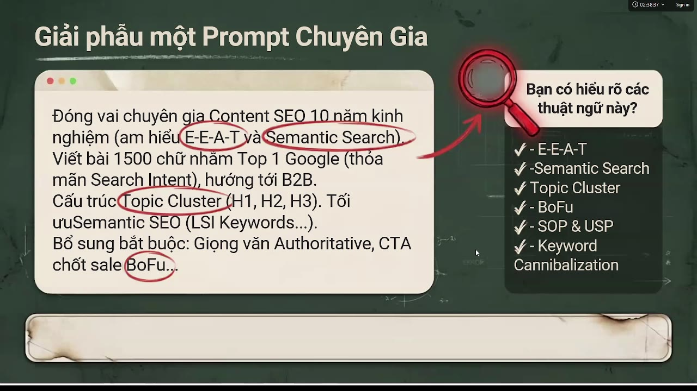
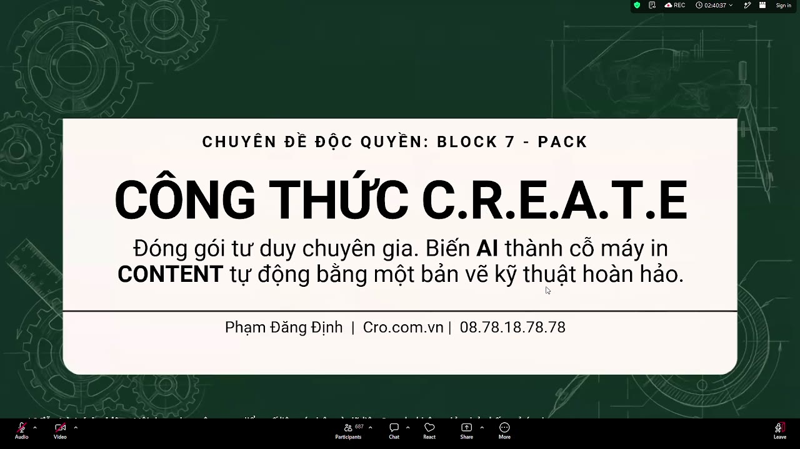
36. Công thức Prompt C-R-E-A-T-E và Thực hành xây dựng phễu nội dung 1:48:20
Đúc kết từ 13 năm kinh nghiệm viết và 7 năm chuyên sâu về Content SEO, giảng viên chia sẻ một khung tạo prompt nâng cao mang tên CREATE. Khung cấu trúc này được thiết kế để biến các yêu cầu nội dung thành một 'cỗ máy sản xuất content hoàn hảo', vượt trội hơn hẳn các công cụ viết tự động đại trà trên thị trường cũng như những người làm SEO thông thường.
Khung CREATE bao gồm 6 thành tố cốt lõi: Context (Bối cảnh thực tế), Role (Vai trò mà AI cần đảm nhận), Edit/Expectation (Tiêu chuẩn hoặc định dạng mong muốn), Action (Hành động cụ thể cần thực hiện), Tone (Giọng điệu truyền tải), và Example (Ví dụ mẫu minh họa). Việc xác định đúng các yếu tố này giúp định hình tư duy của mô hình ngôn ngữ lớn một cách chặt chẽ trước khi bắt đầu tạo bài viết.
Để chứng minh sức mạnh của việc kết hợp bối cảnh và thuật ngữ chuyên ngành, giảng viên chuyển sang phần thực hành trực tiếp theo đề xuất từ học viên. Với ngành hàng được lựa chọn là 'máy hàn cơ khí', việc tạo phễu nội dung chuẩn xác sẽ giúp chuyển đổi thông tin chuyên sâu của sản phẩm thành các thông điệp tiếp cận khách hàng hiệu quả, thay vì giải thích thủ công một cách mơ hồ.
Công cụ AI được giảng viên sử dụng thực tế suốt 3 năm qua mà hoàn toàn miễn phí là Google AI Studio (giao diện thử nghiệm các mô hình Gemini). Một thông số kỹ thuật tối quan trọng khi thiết lập mô hình là Temperature (Nhiệt độ sáng tạo). Giảng viên nhấn mạnh cần hạ Temperature xuống dưới 0.2 (< 0.2) đối với các nội dung cần tính chuẩn xác cao về mặt kỹ thuật, nhằm khống chế triệt để hiện tượng 'bịa đặt' (hallucination) của AI.
- Mô hình CREATE: Context (Bối cảnh) - Role (Vai trò) - Edit/Expectation (Kỳ vọng/Quy chuẩn) - Action (Hành động) - Tone (Giọng điệu) - Example (Ví dụ).
- Công cụ sử dụng: Google AI Studio (Gemini) - nền tảng mạnh mẽ, linh hoạt và tối ưu chi phí.
- Thông số Temperature: Cần cài đặt nhỏ hơn 0.2 để giảm thiểu tình trạng AI bịa đặt dữ liệu (hallucination) khi viết về nội dung chuyên môn kỹ thuật như máy hàn cơ khí.
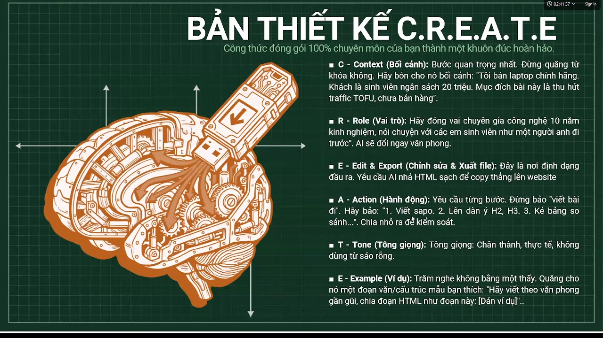
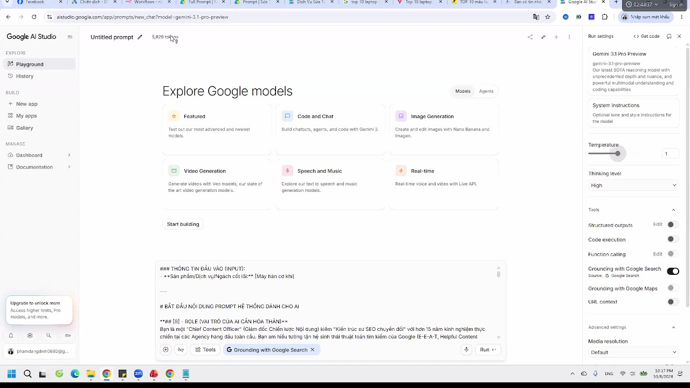
37. Thử nghiệm triển khai phễu nội dung ngành cơ khí với AI 1:52:19
Giảng viên bắt đầu đi vào phần thực hành thực tế bằng cách thử nghiệm xây dựng phễu nội dung cho ngành hàng cơ khí. Công cụ được lựa chọn trong phần này có ưu điểm nổi bật là dung lượng xử lý dữ liệu đầu vào cực lớn, lên tới khoảng một triệu token duy nhất trên thị trường. Thêm vào đó, công cụ này còn có khả năng tự động lướt web trên Google, giúp tiết kiệm thời gian cập nhật thông tin mà giảng viên đã tin dùng từ khoảng ba năm nay.
Prompt được thiết kế và viết hoàn toàn theo đúng định dạng Markdown để hệ thống dễ dàng hiểu và thực thi các cấu trúc phức tạp. Toàn bộ nội dung prompt sau đó được gửi trực tiếp lên phần tài nguyên chia sẻ để học viên có thể tự mình thực hành ngay trên ngành hàng riêng của mỗi người. Giảng viên khuyến khích mọi người áp dụng thử để quan sát kết quả đầu ra cụ thể.
Sau khi hệ thống hoàn tất quá trình chạy, kết quả phân tích phễu nội dung cho ngành máy hàn cơ khí được hiển thị rất chi tiết. Hệ thống phân chia rõ ràng các nhóm đối tượng như nam giới, người có tâm lý thực dụng quan tâm đến độ bền và hiệu năng sử dụng. Cấu trúc phễu được thiết lập từ đáy phễu cho đến các tầng nội dung chuyên sâu khác nhau.
Các thành phần bắt buộc trong phễu nội dung bao gồm chuỗi bài viết về sản phẩm, chương trình khuyến mãi, danh mục và các mức giá khác nhau. Giảng viên nhấn mạnh rằng thông thường các nhà làm nội dung hay bị thiếu các trang danh mục sản phẩm quan trọng. Hệ thống cũng tự động đề xuất danh sách top list theo nhu cầu dự án như máy hàn mini gia đình tốt, máy hàn cơ khí tốt, cùng các bài viết so sánh chi tiết giữa máy hàn có khí và không dùng khí, cũng như các thương hiệu như Hồng Ký hay Jasic.
- Sử dụng công cụ AI có dung lượng khoảng 1 triệu token và tính năng tự động surf Google.
- Prompt viết theo định dạng Markdown chuẩn xác.
- Phân tích đối tượng khách hàng nam giới, thực dụng, quan tâm độ bền.
- Xây dựng đầy đủ các trang sản phẩm, khuyến mãi, danh mục, mức giá và top list.
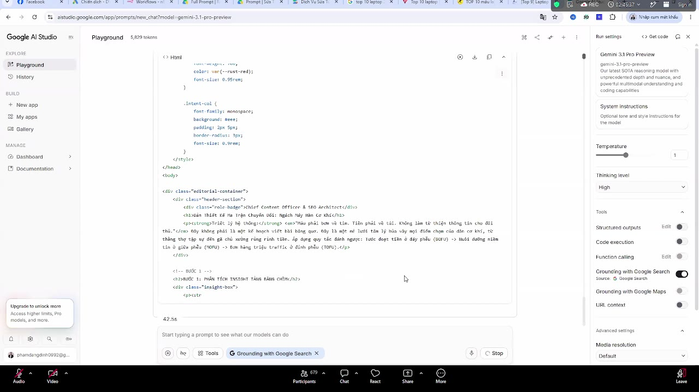
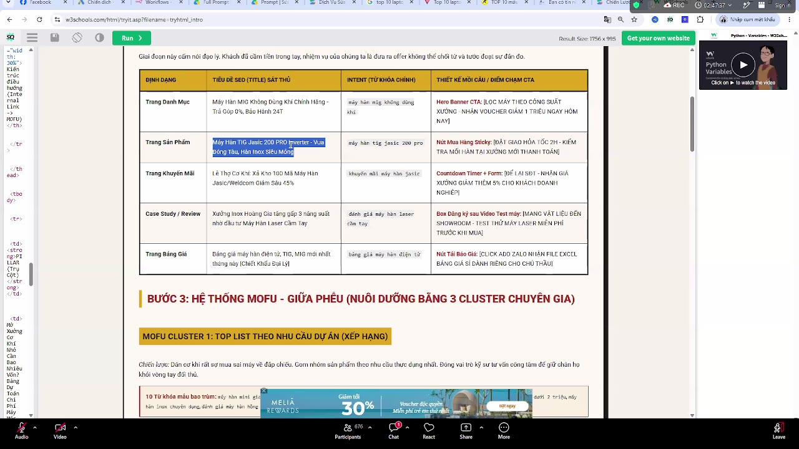
38. Chi tiết các tầng phễu nội dung và tối ưu hóa Prompt 1:56:00
Tiếp tục đi sâu vào các tầng nội dung của phễu, giảng viên phân tích các chủ đề phục vụ cho việc nghiên cứu kỹ lưỡng của người làm nội dung. Các bài viết dạng so sánh, kinh nghiệm lựa chọn sản phẩm, và tổng hợp những sai lầm khi chọn mua máy hàn gia đình đóng vai trò quan trọng trong việc thu hút khách hàng tiềm năng. Ở nhóm nội dung kỹ thuật hàn, hệ thống đề xuất các chủ đề về xử lý lỗi, kỹ thuật hàn không bị thủng, kiến thức an toàn bảo hộ, chống giật khi hàn điện và cách khắc phục khi bị đau mắt hàn.
Bên cạnh đó, các ý tưởng thực tế như hướng dẫn cách làm cổng sắt, sửa cửa, hay làm giá phơi quần áo cũng được hệ thống tự động liệt kê nhằm tăng tính thực tiễn. Tất cả các nội dung này đều được trực quan hóa, kèm theo thiết kế các móc câu thu hút và lời kêu gọi hành động CTA rõ ràng để tư vấn đúng nhu cầu khách hàng. Giảng viên tương tác với lớp học, yêu cầu học viên đánh giá mức độ chính xác và tương tác số 1 nếu thấy phương pháp này hiệu quả.
Bí quyết cốt lõi để tái sử dụng mô hình này là người dùng chỉ cần nắm vững cấu trúc prompt, sau đó thay đổi tên sản phẩm ở dòng đầu tiên thành bất kỳ ngành hàng nào khác. Lập tức, hệ thống sẽ tự động sinh ra một phễu nội dung hoàn chỉnh phù hợp với lĩnh vực đó. Những người có chuyên môn về SEO hoặc làm top list sẽ dễ dàng nhận ra giá trị thực tiễn và tính hệ thống hóa cao của phương pháp này.
Giảng viên chia sẻ về công việc đặc thù của một người chuyên bán prompt chuyên nghiệp trên thị trường. Điểm đặc biệt là các prompt do giảng viên thiết kế có độ dài rất lớn, thường từ mười mấy trang cho đến ba mươi, bốn mươi trang cho các dự án phức tạp. AI hoàn toàn có khả năng xử lý mượt mà và trả kết quả chính xác cho những câu lệnh dài và chi tiết như vậy.
- Nhóm nội dung kỹ thuật: xử lý lỗi, chống thủng, an toàn bảo hộ, chống giật.
- Nhóm ý tưởng thực tế: làm cổng sắt, sửa cửa, làm giá phơi quần áo.
- Tích hợp móc câu thu hút và CTA rõ ràng ở cuối nội dung.
- Công thức tái sử dụng: chỉ cần thay đổi tên sản phẩm ở dòng đầu tiên của prompt.
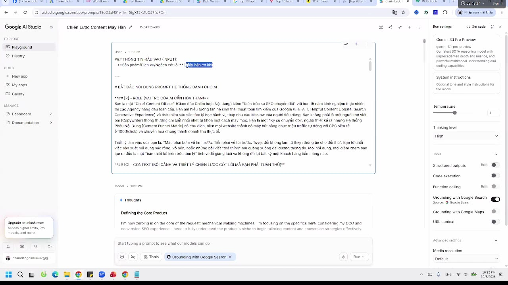
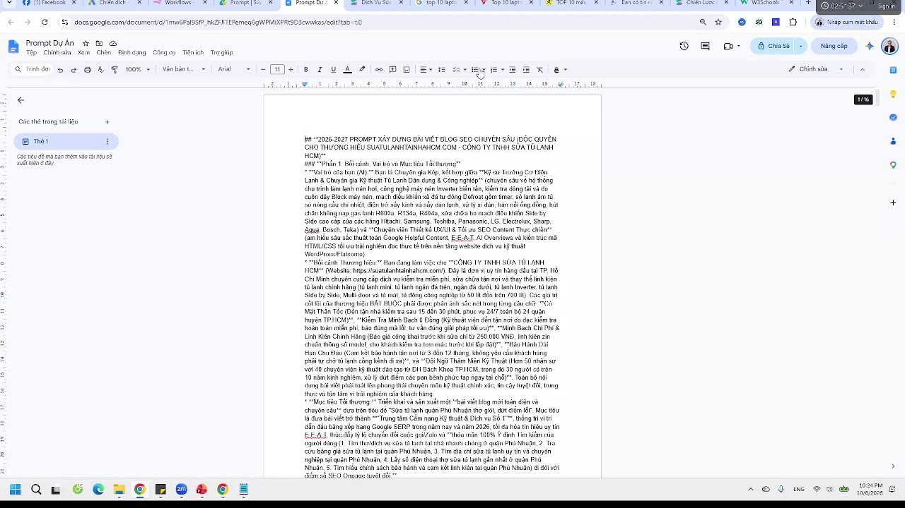
39. Đánh giá hệ sinh thái Google và tư duy sử dụng AI hiệu quả 1:59:40
Chuyển sang phần thảo luận về các mô hình ngôn ngữ lớn trên thị trường, giảng viên đề cập đến Gemini của Google - một công cụ thường xuyên nhận nhiều ý kiến trái chiều từ cộng đồng mạng. Nhiều người cho rằng Gemini có phần kém thông minh hơn so với các đối thủ như Claude hay ChatGPT. Tuy nhiên, theo góc nhìn và kinh nghiệm thực chiến của giảng viên, không có một giải pháp nào là tuyệt đối hoàn hảo.
Bằng cách xây dựng hệ thống prompt tối ưu, giảng viên vẫn khai thác rất hiệu quả các ứng dụng nằm trong hệ sinh thái của Google để phục vụ cho công việc kinh doanh và làm nội dung. Điều quan trọng không nằm hoàn toàn ở việc công cụ nào thông minh hơn, mà nằm ở tư duy thiết kế câu lệnh và cách người dùng kết hợp các công cụ lại với nhau.
Thông qua phần chia sẻ này, giảng viên muốn truyền đạt thông điệp rằng sự kiên trì trong việc thử nghiệm và tối ưu hóa quy trình làm việc với AI sẽ đem lại những kết quả vượt trội. Việc tự tay xây dựng các prompt dài và chi tiết chính là chìa khóa giúp tự động hóa toàn bộ quy trình sáng tạo nội dung marketing số.
Cuối phần này, giảng viên chuẩn bị chuyển sang các bước thực hành tiếp theo, hướng dẫn chi tiết cách thức tạo ra một nội dung hoàn chỉnh từ các mẫu prompt sáng tạo đã được giới thiệu.
- Phân tích ưu nhược điểm của Gemini so với Claude và ChatGPT.
- Khẳng định không có công cụ tuyệt đối, quan trọng là cách sử dụng prompt.
- Tận dụng tối đa sức mạnh của hệ sinh thái Google cho dự án thực tế.

40. Tư duy sử dụng công cụ AI và kỹ thuật xây dựng Prompt sản xuất nội dung SEO/GEO 2:00:21
Người làm việc với trí tuệ nhân tạo cần có tư duy thực chiến, tránh việc phụ thuộc quá mức vào các mô hình cao cấp hoặc liên tục chạy theo công nghệ mới. Nhiều người có thói quen nhảy qua lại giữa ChatGPT, Claude, DeepSeek hay các mô hình có token giá rẻ mà chưa thực sự khai thác tối đa năng lực của một nền tảng nào. Một công cụ dù chưa phải là bản Ultra, thậm chí là bản miễn phí (như phiên bản miễn phí của Gemini kết hợp Google Search), vẫn hoàn toàn có thể xây dựng nên một hệ thống sản xuất nội dung áp dụng hiệu quả cho hàng loạt doanh nghiệp.
Quy trình sản xuất bài viết chuẩn SEO và GEO (Generative Engine Optimization) thực chất dựa trên một hệ thống prompt văn bản được cấu hình cực kỳ chặt chẽ. Thay vì dùng các câu lệnh ngắn, hệ thống sử dụng một prompt chi tiết dài mười mấy trang tài liệu, có dung lượng đầu vào lên tới khoảng 17.000 token. Khi người vận hành dán prompt này vào giao diện mô hình, AI sẽ mất hơn 1 phút để xử lý và tự động tạo ra một bài viết hoàn chỉnh đáp ứng đầy đủ mọi tiêu chuẩn chất lượng.
Điểm đặc biệt của quy trình này là AI tự động sinh cấu trúc Schema markup đặt ngay ở đầu bài viết. Schema đóng vai trò như một ngôn ngữ khai báo để các bot tìm kiếm của Google hoặc các thuật toán của mô hình AI đọc và hiểu chính xác chủ đề bài viết ngay lập tức. Đây là yếu tố cốt lõi của kỹ thuật GEO nhằm giúp nội dung dễ dàng được các mô hình tạo sinh trích dẫn và xếp hạng.
Toàn bộ kết quả đầu ra được định dạng trực tiếp dưới dạng mã HTML hoặc Markdown chuẩn thay vì văn bản thô (plain text). Định dạng này đã tích hợp sẵn từ khóa, thương hiệu, số hotline, các khung kêu gọi hành động (CTA box), cho đến việc in đậm, giãn dòng và chèn placeholder hình ảnh. Nhờ đó, người làm nội dung không phải mất công chỉnh sửa thủ công mà có thể sao chép và đăng tải hàng loạt lên website (hoặc đẩy qua tool/hệ thống quản trị) tới cả nghìn bài viết cùng lúc.
- Không phụ thuộc vào việc mô hình 'thông minh' hay 'kém', quan trọng là mức độ phù hợp và độ sâu trong việc khai thác hệ thống prompt.
- Prompt đầu vào dài khoảng 17.000 token, được thiết kế dưới dạng text thuần nhưng quy định chặt chẽ toàn bộ định dạng và cấu trúc đầu ra.
- Tích hợp Schema markup lên đầu nội dung giúp Google Bot và AI Bot lập chỉ mục, nhận diện ngữ cảnh nhanh chóng.
- Đầu ra dạng HTML/Markdown hoàn chỉnh, có sẵn typography, bôi đậm, CTA box, giúp triệt tiêu công đoạn format thủ công.
41. Kỹ thuật đồng bộ và tự động chèn hàng ngàn hình ảnh vào bài viết 2:05:25
Một thách thức lớn khi sản xuất bài viết số lượng lớn bằng AI là khâu xử lý hình ảnh minh họa cho bài viết. Nhiều người thắc mắc liệu hình ảnh được hệ thống tự render trực tiếp hay lấy từ thư viện sẵn có. Giảng viên giải thích rằng quy trình thực tế được tối ưu hóa thông qua cơ chế đặt tên tệp (naming convention) chuẩn hóa trước khi render hình ảnh thực tế.
Khi AI sinh ra nội dung HTML/Markdown, bài viết ban đầu chưa hề có file ảnh thực tế mà chỉ chứa các thẻ hình ảnh với đường dẫn và tên tệp cố định theo quy chuẩn (placeholder). Ví dụ, hệ thống gán sẵn tên file ảnh mang tính đại diện và khớp với chủ đề như '301-redirect-s3.webp'. Bước này đảm bảo cấu trúc bài viết đã hoàn thiện 100% về vị trí hiển thị và quy chuẩn SEO hình ảnh.
Sau đó, người vận hành sử dụng công cụ AI tạo ảnh miễn phí (như Google ImageFX / Image generation workflow) để sinh hàng loạt hàng nghìn tấm ảnh dựa trên bộ nhận diện thương hiệu đã được đồng bộ hóa. Quá trình tạo hàng nghìn bức ảnh chỉ mất khoảng 15 đến 30 phút. Các file ảnh này sau đó được lưu đúng theo cấu trúc tên tệp đã xuất hiện trong bài viết.
Cuối cùng, người vận hành chỉ cần tải toàn bộ nội dung bài viết lên website, sau đó upload thư mục chứa hàng ngàn hình ảnh đúng tên tệp lên hosting/thư viện media của website (WordPress). Hệ thống website sẽ tự động ánh xạ (map) hình ảnh vào đúng từng vị trí thẻ `<img>` trong từng bài viết mà không cần tốn chi phí mua ảnh hay mất công chèn ảnh thủ công từng bài.
- Bước 1: AI sinh bài viết với mã HTML chứa sẵn thẻ ảnh và tên file quy chuẩn (ví dụ: 301-redirect-s3.webp) mà chưa cần có file ảnh thật.
- Bước 2: Sử dụng AI tạo ảnh miễn phí để render hàng nghìn tấm ảnh theo nhận diện thương hiệu trong vòng 15-30 phút.
- Bước 3: Đổi tên file ảnh đã tạo cho khớp chính xác 100% với tên file placeholder trong nội dung bài viết.
- Bước 4: Upload toàn bộ content và upload hàng loạt ảnh lên web, hệ thống tự động khớp ảnh vào bài viết mà không tốn chi phí.
42. Tối ưu hóa chi phí và nhân sự bằng quy trình sản xuất nội dung AI hàng loạt 2:08:26
Trong kỷ nguyên số hóa, việc tối ưu hóa chi phí vận hành và nâng cao hiệu suất sản xuất nội dung là yếu tố sống còn đối với mọi doanh nghiệp làm SEO. Giảng viên chia sẻ về một quy trình tự động hóa vượt trội, cho phép sản xuất từ 3.000 đến 5.000 hình ảnh chất lượng cao mỗi ngày để đồng bộ trực tiếp lên website. Phương pháp này giải quyết triệt để bài toán chi phí so với các công cụ truyền thống như Google Flow (vốn tiêu tốn khoảng 100.000 VNĐ/tháng nhưng bị giới hạn về hiệu suất khi quy mô tăng lên). Việc sản xuất quy mô lớn hàng ngàn bài viết đòi hỏi một tư duy hệ thống hoàn toàn khác biệt so với việc biên soạn nhỏ lẻ vài bài viết thông thường.
Sức mạnh thực sự của quy trình (workflow) tự động hóa này nằm ở khả năng thay thế toàn bộ một phòng ban SEO và Content truyền thống của doanh nghiệp. Trước đây, để vận hành một hệ thống website vệ tinh hoặc xây dựng liên kết, doanh nghiệp cần từ 2 đến 3 nhân sự viết nội dung (Content Writer), 1 đến 2 nhân sự SEO phụ trách tối ưu hóa liên kết nội bộ (Internal Link) và xây dựng liên kết ngược (Backlink), cùng với 1 đến 2 nhân sự thiết kế đồ họa (Designer). Hiện nay, toàn bộ chuỗi công việc phức tạp này được tự động hóa hoàn chỉnh thông qua AI, giúp tiết kiệm tối đa nguồn lực tài chính và nhân sự cho doanh nghiệp.
Một điểm sáng công nghệ trong quy trình này là khả năng tự động hóa liên kết nội bộ (internal link) đạt tỷ lệ chính xác tuyệt đối 100%. Đồng thời, hệ thống AI đảm bảo tính tương quan chặt chẽ giữa hình ảnh minh họa và từ khóa (keywords) mục tiêu của bài viết. Đây vốn là điểm yếu cố hữu của nhiều đội ngũ SEO hiện nay khi hình ảnh thường bị bóp méo, nội dung rời rạc, chữ viết một nơi và hình ảnh một nẻo, dẫn đến trải nghiệm người dùng kém và bị Google đánh giá thấp. Khi áp dụng AI có yếu tố chuyên môn, doanh nghiệp sẽ đi xa hơn rất nhiều so với các đối thủ chỉ biết sử dụng AI ở mức cơ bản.
Tuy nhiên, giảng viên cũng đưa ra cảnh báo quan trọng về vai trò của chuyên môn ngành trong thời đại công nghệ số. Trong thời đại 'low-code/no-code' hiện nay, bất kỳ ai cũng có thể tiếp cận AI và tự xưng là chuyên gia trong các lĩnh vực phức tạp như tài chính hay luật pháp. Thế nhưng, nếu chỉ phụ thuộc hoàn toàn vào AI mà thiếu đi kiến thức chuyên môn thực tế để kiểm chứng, phân tích báo cáo tài chính hay cân đối kế toán, doanh nghiệp sẽ đối mặt với rủi ro cực kỳ lớn. Sự kết hợp giữa năng lực chuyên môn sâu và công nghệ AI mới là chìa khóa tạo nên sự khác biệt bền vững.
- Hiệu suất sản xuất: Đạt từ 3.000 đến 5.000 hình ảnh/ngày, đồng bộ trực tiếp lên website doanh nghiệp.
- Cơ cấu nhân sự được tối ưu: Thay thế hiệu quả cho tổ đội gồm 2-3 Content Writers, 1-2 SEO Specialists và 1-2 Designers.
- Tự động hóa kỹ thuật: Thiết lập liên kết nội bộ (internal link) tự động 100% và tối ưu hóa hình ảnh chuẩn xác theo từ khóa.
43. Khả năng Index, Thứ hạng và Mục tiêu Chuyển đổi của Nội dung AI 2:10:46
Một câu hỏi kinh điển trong giới SEO là liệu Google có ưu tiên hiển thị các bài viết do AI tạo ra hay không. Giảng viên khẳng định câu trả lời chắc chắn là 'Không'. Về bản chất, thuật toán của Google không ưu ái nội dung AI; thậm chí ở giai đoạn đầu, các bài viết do AI tạo ra thường gặp khó khăn trong việc lập chỉ mục (index) chậm hơn so với bài viết do con người tự biên soạn. Đây là thực tế mà bất kỳ nhà làm SEO nào cũng phải đối mặt khi triển khai dự án quy mô lớn và cần phải có sự chuẩn bị kỹ lưỡng về mặt kỹ thuật.
Mặc dù vậy, quy trình tối ưu hóa AI chuyên sâu của giảng viên vẫn chứng minh được sự vượt trội so với các đối thủ cạnh tranh trên thị trường. Minh chứng thực tế từ một dự án gần đây hợp tác cùng đối tác Phùng Hành, chỉ sau vài ngày tải nội dung lên hệ thống, các bài viết đã tự động được index và xếp hạng ngay tại trang nhất của Google. Điều này chứng tỏ rằng nếu áp dụng đúng kỹ thuật tối ưu cấu trúc, phân bổ từ khóa và chất lượng nội dung đầu ra, AI vẫn có thể đạt được hiệu suất SEO vượt bậc và vượt qua các bộ lọc khắt khe của Google.
Tuy nhiên, giảng viên nhấn mạnh một tư duy cốt lõi trong kinh doanh trực tuyến: Thứ hạng (ranking) cao trên công cụ tìm kiếm không phải là mục tiêu tối thượng. Mục tiêu cuối cùng và quan trọng nhất của mọi chiến dịch marketing bằng AI là tạo ra tỷ lệ chuyển đổi (conversion rate) thành doanh thu thực tế. Việc thu hút lượng truy cập khổng lồ sẽ trở nên vô nghĩa nếu nội dung không thuyết phục được khách hàng thực hiện hành động mua hàng hoặc để lại thông tin liên hệ. Do đó, toàn bộ hệ thống phễu nội dung phải được thiết kế hướng tới mục tiêu chuyển đổi này.
- Thái độ của Google: Không ưu tiên nội dung AI, giai đoạn đầu tốc độ index có thể chậm hơn bài viết thủ công nếu không tối ưu đúng cách.
- Case study thực tế: Dự án hợp tác với đối tác Phùng Hành đạt thứ hạng trang nhất chỉ sau vài ngày upload nhờ tối ưu hóa kỹ thuật AI vượt trội.
- Tư duy cốt lõi: Chuyển đổi (Conversion) quan trọng hơn Thứ hạng (Ranking). Thứ hạng chỉ là phương tiện, chuyển đổi mới là mục tiêu tối thượng.
44. Khung sườn CAPROM và Nguyên tắc Đạo đức trong Kinh doanh 2:14:12
Để xây dựng một phễu nội dung tự động hóa thành công, giảng viên giới thiệu khung sườn CAPROM gồm 6 phần cốt lõi. Trong số các thành tố này, chữ cái 'E' cuối cùng - đại diện cho 'EXAMPLE' (ví dụ mẫu thực tế) - được đánh giá là thành phần quan trọng nhất, quyết định sự thành bại của toàn bộ hệ thống prompt. Sự đầu tư nghiêm túc vào phần này phản ánh trực tiếp chất lượng đầu ra của AI, giúp AI hiểu rõ định dạng và văn phong mong muốn.
Để minh họa cho tầm quan trọng của thành phần 'EXAMPLE', giảng viên chia sẻ quy trình phân bổ thời gian thực tế khi xây dựng một bộ CAPROM trị giá 10 triệu VNĐ. Trong tổng số 6 ngày làm việc để hoàn thiện bộ prompt này, giảng viên dành tới 4 ngày chỉ để nghiên cứu, thiết kế và tối ưu hóa phần 'EXAMPLE'. 2 ngày còn lại được phân bổ cho 5 thành phần khác của khung sườn. Sự chênh lệch này minh chứng rằng các ví dụ mẫu chất lượng cao chính là 'chất xúc tác' giúp AI hiểu sâu sắc ngữ cảnh và tạo ra nội dung chuẩn xác nhất. Hệ thống này đặc biệt phù hợp với các sản phẩm, dịch vụ có tỷ lệ tìm kiếm cao trên Google (Search Intent chiếm tỷ trọng lớn).
Ở phần cuối của bài giảng, giảng viên thẳng thắn chia sẻ về khía cạnh đạo đức nghề nghiệp trong ngành dịch vụ SEO và AI. Với sự phát triển của công nghệ, có rất nhiều lời đề nghị béo bở từ các tổ chức không lành mạnh (ví dụ như các bên lừa đảo giả mạo fanpage tích xanh, làm website giả mạo dịch vụ công tại Campuchia, hoặc các hệ thống cờ bạc trực tuyến sẵn sàng trả ngay 400 triệu VNĐ cho một dự án lên top nhanh). Tuy nhiên, với nguyên tắc hoạt động hơn 7 năm trong ngành, giảng viên tuyệt đối từ chối mọi dự án vi phạm pháp luật hoặc ảnh hưởng xấu đến xã hội, khẳng định uy tín và sự bền vững mới là giá trị cốt lõi của một chuyên gia thực thụ.
- Khung sườn CAPROM: Gồm 6 phần, trong đó chữ 'E' (Example/Sample) là thành phần quan trọng nhất quyết định chất lượng đầu ra.
- Phân bổ thời gian thiết kế CAPROM (Ví dụ gói 10 triệu VNĐ trong 6 ngày): 4 ngày tập trung tối ưu hóa phần Example, 2 ngày cho các phần còn lại.
- Nguyên tắc đạo đức: Tuyệt đối không nhận các dự án vi phạm pháp luật, cờ bạc, lừa đảo (dù được chào mời với mức phí cực cao lên tới hàng trăm triệu VNĐ).
45. Tầm quan trọng của Bối cảnh (Context) và Chân dung hãng trong sáng tạo nội dung 2:16:49
Trong quá trình xây dựng nội dung marketing và sử dụng trí tuệ nhân tạo, yếu tố bối cảnh đóng vai trò cốt lõi nhưng lại thường bị người làm thị trường bỏ qua. Việc thiếu hụt bối cảnh khiến cho các nội dung được tạo ra trở nên sáo rỗng, thiếu chiều sâu và không chạm được đến cảm xúc của khách hàng mục tiêu. Do đó, người làm nội dung bắt buộc phải khai báo rõ ràng các thông tin nền tảng về thương hiệu của mình.
Cụ thể, các thông tin cần được định nghĩa tường minh bao gồm: hãng của bạn là gì, các sản phẩm cốt lõi hoặc sản phẩm lỗi là gì, điểm độc nhất (USP - Unique Selling Proposition) của thương hiệu là gì, và quan trọng nhất là chân dung của hãng. Khi bạn thay đổi chân dung của hãng, toàn bộ cách thức truyền tải và thông điệp phía sau sẽ thay đổi theo một cách đồng bộ.
Giảng viên đưa ra ví dụ thực tế về việc định hình đối tượng khách hàng mục tiêu là tân sinh viên. Nếu nhắm đến nhóm đối tượng này, nội dung bài viết sẽ không sa đà vào các thuật ngữ quá kỹ thuật như thông số CPU phức tạp hay các thiết bị gia dụng không liên quan. Thay vào đó, bài viết sẽ tập trung vào những đặc tính thiết thực như trọng lượng laptop khoảng 1,6kg, thời lượng pin đủ để ngồi thư viện 6 tiếng hoặc chạy deadline thoải mái trên trường.
Cách tiếp cận nội dung này thể hiện sự thấu hiểu sâu sắc hành vi người dùng, viết theo ngôn ngữ và nhu cầu thực tế của họ thay vì sử dụng văn phong cứng nhắc, khuôn mẫu hay những từ ngữ chuyên nghiệp quá mức không cần thiết.
- Xác định rõ ràng bối cảnh (Context) giúp nội dung không bị lan man, nhàm chán.
- Khai báo tường minh: Tên hãng, sản phẩm chính, sản phẩm lỗi và điểm độc nhất (USP).
- Thay đổi chân dung hãng sẽ thay đổi toàn bộ hệ thống thông điệp truyền thông.
- Ví dụ với tân sinh viên: Tập trung vào trọng lượng máy (1.6kg), thời lượng pin (6 tiếng ở thư viện) thay vì thông số kỹ thuật phức tạp.
46. Tối ưu hóa câu lệnh AI: Vai trò chuyên gia, Lệnh cấm và Câu thần chú đầu ra 2:18:19
Khi làm việc và tốn chi phí cho các công cụ AI, người dùng thường có xu hướng yêu cầu chúng đóng vai trò cụ thể như một chuyên gia SEO hay một lập trình viên. Việc gán vai trò lập trình viên HTML và CSS vào câu lệnh (prompt) giúp AI kiểm soát chặt chẽ cấu trúc bài viết, tránh việc sản xuất ra những nội dung lan man, khó hiểu.
Thông thường, người làm nội dung phải tốn thời gian bôi đen, bôi đỏ, in đậm hoặc căn chỉnh thẻ H2, H3 thủ công. Tuy nhiên, khi định hình AI dưới góc độ lập trình viên, nó sẽ tự động xử lý toàn bộ các định dạng HTML, thẻ tiêu đề và định dạng văn bản một cách chuyên nghiệp mà không cần con người can thiệp quá nhiều.
Để đảm bảo chất lượng đầu ra luôn hoàn hảo theo đúng tiêu chuẩn, giảng viên chia sẻ một 'câu thần chú' cực kỳ quan trọng khi ra lệnh cho AI, đó là: 'Không giải thích gì thêm'. Bản tính của các mô hình AI là rất thích dài dòng, phân trần và giải thích lôi thôi sau khi hoàn thành nhiệm vụ.
Bằng cách thêm câu lệnh cấm AI giải thích, hệ thống sẽ tự động thực hiện và xuất thẳng ra tệp dữ liệu hoàn chỉnh (final file) theo đúng kỷ lục đầu ra (exit input/output criteria) mà người dùng đã thiết lập sẵn từ trước.
- Gán vai trò lập trình viên HTML/CSS cho AI để tự động hóa việc định dạng thẻ H2, H3, in đậm, in nghiêng.
- Sử dụng câu thần chú bắt buộc: 'Không giải thích gì thêm' nhằm ngăn chặn thói quen giải thích dài dòng của AI.
- Xây dựng kỷ lục đầu ra (exit input/output) giúp các tệp kết quả luôn đạt chuẩn hoàn hảo.
47. Hàng rào kỹ thuật ngôn ngữ, Lệnh cấm (Negative Prompt) và Tầm quan trọng của Ví dụ (Example) 2:20:31
Bên cạnh việc ra lệnh cho AI làm gì, việc thiết lập các lệnh cấm (Negative Prompt) hay còn gọi là hàng rào kỹ thuật ngôn ngữ đóng vai trò quyết định để loại bỏ các dấu vết của máy móc. Giảng viên chia sẻ bản thân thường sử dụng khoảng 15 đến 18 lệnh cấm trong các prompt sản xuất nội dung chuyên sâu.
Các lệnh cấm cụ thể bao gồm: cấm sử dụng emoji, cấm sử dụng một số loại dấu câu hoặc các ký tự đặc trưng mà AI hay lạm dụng như dấu ngoặc kép dày đặc, dấu chấm than liên tục. Ngoài ra, cần bổ sung các lệnh cấm nội dung không phù hợp hoặc vi phạm luật quảng cáo mới nhất để đảm bảo bài viết tuân thủ pháp luật.
Một vấn đề lớn mà người sản xuất hàng ngàn bài viết thường gặp phải là sự thiếu đồng bộ: mỗi lần AI xuất ra một file lại mang một kiểu dáng, màu sắc và cấu trúc khác nhau, khiến việc bố trí Call To Action (CTA) trở nên bế tắc. Giải pháp duy nhất để giải quyết triệt để vấn đề này chính là thành phần 'Example' (Ví dụ mẫu) trong công thức Creative.
Khi tìm ra được một file mẫu đạt độ hoàn thiện tuyệt đối, nhiệm vụ của người làm nội dung là sử dụng nó làm Example chuẩn mực để AI nhân bản hàng loạt. Đồng thời, giảng viên nhấn mạnh rằng việc duy trì một website chất lượng ở thời điểm hiện tại là bắt buộc, bởi đó là kho dữ liệu duy nhất cung cấp đầy đủ thông tin về sản phẩm, công ty và con người để AI trích xuất, kết hợp cùng các kỹ thuật tối ưu Schema trong SEO.
- Sử dụng từ 15 đến 18 lệnh cấm (Negative Prompt) để lọc bỏ dấu vết của AI.
- Cấm lạm dụng emoji, dấu ngoặc kép, dấu chấm than và tuân thủ chặt chẽ luật quảng cáo.
- Example là thành phần cao nhất trong công thức Creative giúp giải quyết tình trạng AI xuất file mỗi lần một kiểu.
- Website là nguồn dữ liệu gốc quan trọng nhất cung cấp thông tin cho AI, kết hợp cùng kỹ thuật Schema trong SEO.
48. Vai trò của Schema và Tự động hóa sản xuất nội dung 2:24:32
Giảng viên mở đầu bằng việc nhắc nhở học viên tập trung theo dõi màn hình, đồng thời chỉ ra một số điểm chưa hợp lệ trong bài viết do AI tạo ra quá nhanh cần phải chỉnh sửa lại. Để AI, Cloud hay các công cụ tìm kiếm có thể đọc và hiểu được dữ liệu bài viết, website bắt buộc phải được thiết lập schema một cách chuẩn chỉnh. Đây là một kỹ thuật chuyên môn sâu về SEO giúp cấu trúc dữ liệu rõ ràng, nhờ đó khi bot của AI quét qua sẽ hiểu ngay nội dung bài viết nói về cái gì.
Việc triển khai schema không chỉ áp dụng cho đơn lẻ một bài viết mà phải được áp dụng cho toàn bộ các bài trong dự án. Nhờ có schema, tỷ lệ xếp hạng (ranking) của website sẽ vượt trội và nhanh chóng hơn rất nhiều so với những trang web không tích hợp schema. Khi kết hợp với một bài viết đầy đủ hình ảnh và cấu trúc tốt, nội dung sẽ leo top cực kỳ nhanh chóng.
Tiếp theo, giảng viên bàn về việc lựa chọn ví dụ (example) cho dự án, bao gồm màu sắc và lời kêu gọi hành động (CTA). Đối với các website thương mại điện tử có quy mô lớn hơn 1.000 sản phẩm, hệ thống có thể tự động bóc tách và chọn ra khoảng 3 đến 5 sản phẩm hoặc 3 đến 5 danh mục tốt nhất để gắn trực tiếp vào bài viết. Thay vì con người phải thủ công ngồi lọc sản phẩm, quy trình tự động sẽ thực hiện việc ghép nối chuẩn xác nhất với nội dung bài viết.
Về chi phí công cụ, hệ thống tự động hóa này có cả phiên bản miễn phí và có phí. Bản có phí là bắt buộc nếu muốn vận hành hệ thống hoàn toàn tự động vì cần mua token và kết nối API vào hệ thống n8n. Nếu làm thủ công hoàn toàn, một ngày làm khoảng 5 đến 70 bài thì vẫn ổn và hoàn toàn miễn phí, tuy nhiên thời gian và công sức bỏ ra sẽ rất lâu.
- Schema là thành phần bắt buộc giúp AI và các công cụ tìm kiếm đọc hiểu dữ liệu website nhanh chóng.
- Áp dụng schema cho toàn bộ bài viết trong dự án giúp tăng tỷ lệ ranking vượt trội so với web không có schema.
- Với web e-commerce trên 1.000 sản phẩm, hệ thống tự động bóc tách 3-5 sản phẩm/danh mục tốt nhất để gắn vào bài viết.
- Hệ thống n8n kết nối API đòi hỏi có phí để mua token chạy tự động, làm tay hoàn toàn miễn phí nhưng tốn thời gian.
49. Quy trình vận hành Workflow và Chiến lược phễu Marketing 2:28:42
Giảng viên đi sâu vào quy trình workflow vận hành toàn bộ dự án để học viên nắm bắt mindset và cấu trúc triển khai. Một dự án chuẩn hóa từ trước mất rất nhiều thời gian, nhưng hiện tại với quy trình tối ưu thì chỉ mất khoảng 3 ngày để hoàn thành cho đa số dự án trên thị trường với quy mô hàng ngàn bài viết. Quy trình chuẩn bao gồm các bước: vẽ phễu, thiết lập prompt template, sản xuất nội dung bằng AI, biên tập lại nội dung, xuất bản hàng loạt trên website và cuối cùng là chạy quảng cáo (ads) mồi.
Một rủi ro lớn khi sản xuất nội dung bằng AI là thiếu bước kiểm soát và audit lại nội dung, dẫn đến chất lượng bài viết không đạt yêu cầu. Để khắc phục, giảng viên chia sẻ giai đoạn hiện tại đang kết hợp sử dụng AppSheet, Google Sheet và Seminoid cùng với một chút template là có thể vận hành trơn tru cả hệ thống với chi phí rất thấp.
Về quy trình chạy quảng cáo (ads), chiến lược được triển khai ngược từ đáy phễu lên đỉnh phễu. Cụ thể, sản phẩm và danh mục sản phẩm ở đáy phễu sẽ được sản xuất trước tiên, sau đó tiến hành chạy quảng cáo ngay lập tức cho tất cả các URL đó. Việc đổ traffic bằng ads trong vòng 5 đến 7 ngày giúp thu về chuyển đổi thực tế, bởi vì không thể tối ưu hóa chuyển đổi nếu website hoàn toàn không có traffic.
Tiếp theo, hệ thống sẽ sản xuất nội dung ở giữa phễu và đỉnh phễu, trong đó các tầng giữa phễu phải luôn gắn kết chặt chẽ với sản phẩm đáy phễu (tương tự cách Thế Giới Di Động gắn từng sản phẩm cụ thể vào bài viết). Cuối cùng, giảng viên thảo luận thêm về việc kết hợp chiến lược phễu của anh Dũng để kéo traffic đỉnh phễu hoặc tận dụng các hội nhóm cộng đồng Facebook để đăng bài khơi gợi và điều hướng link, mặc dù tỷ lệ chuyển đổi từ Facebook sẽ thấp hơn so với Google do người dùng Google có sẵn nhu cầu tìm kiếm chủ động.
- Workflow chuẩn: Vẽ phễu -> Prompt template -> AI sản xuất -> Biên tập -> Xuất bản hàng loạt -> Chạy ads mồi (hoàn thành trong ~3 ngày cho hàng ngàn bài).
- Bộ công cụ tinh gọn kiểm soát nội dung: AppSheet, Google Sheet, Seminoid.
- Quy trình chạy ads: Sản xuất và chạy ads đáy phễu (sản phẩm/danh mục) trước để lấy traffic và đo lường chuyển đổi trong 5-7 ngày.
- Kết hợp chiến lược phễu đa kênh: Tận dụng traffic từ Google (nhu cầu cao) kết hợp kéo traffic đỉnh phễu qua các group Facebook.
50. Chiến lược chạy quảng cáo Dynamic Search Ads và chỉ số thực tế 2:32:33
Giảng viên mở đầu bằng việc trao đổi về các phương pháp gia tăng traffic như sử dụng phễu tặng quà, tương tác từ các bình luận của anh Dũng, hay kéo traffic từ các bài post viral trên Group Facebook. Tuy nhiên, trọng tâm của phần chia sẻ này là đi sâu vào cách chạy quảng cáo Google Ads sao cho chi phí rẻ và hiệu quả tối ưu hơn so với cách chạy truyền thống trước đây.
Một trong những hình thức chạy quảng cáo ít người tại thị trường Việt Nam để ý nhưng mang lại hiệu quả cao chính là Dynamic Search Ads. Theo giảng viên, ở thời điểm hiện tại, anh là một trong số ít người tại Việt Nam chia sẻ về hình thức này, trong khi đa số nhà quảng cáo khác thường bỏ qua nó.
Giảng viên dẫn chứng kết quả thực tế sau khoảng vài ngày triển khai với ngân sách khoảng 10 triệu đồng. Cụ thể, chi phí cho mỗi lượt click search (CBC) chỉ khoảng 95 đến 97 đồng, tổng lượt hiển thị đạt khoảng 344.000 đến 394.000 lượt, tỷ lệ chuyển đổi toàn trang đạt khoảng 3.9% với khoảng 4.000 lượt chuyển đổi thực tế, và chi phí cho mỗi chuyển đổi chỉ khoảng 2.400 đồng.
Dù chỉ số chi phí trên mỗi chuyển đổi rất rẻ và số lượng URL được đưa vào chiến dịch lên tới khoảng 197 URL, dự án này sau đó vẫn phải dừng lại vì những lý do liên quan đến insight khách hàng và bài toán doanh thu sẽ được phân tích ở phần sau.
- Hình thức quảng cáo cốt lõi: Dynamic Search Ads trên Google.
- Ngân sách thử nghiệm: Khoảng 10 triệu đồng trong vòng vài ngày.
- Chi phí CBC (Click Search): Khoảng 95 - 97 đồng.
- Lượt hiển thị: Khoảng 344.000 - 394.000 lượt.
- Tỷ lệ chuyển đổi toàn trang: Khoảng 3.9% với khoảng 4.000 lượt chuyển đổi.
- Chi phí cho mỗi chuyển đổi: Khoảng 2.400 đồng.
- Số lượng URL áp dụng trong chiến dịch: Khoảng 197 URL.
51. Xây dựng website, tối ưu phễu chuyển đổi và hệ thống tự động hóa 2:35:02
Dự án thử nghiệm được giảng viên thực hiện trong vòng 3 ngày với một website chuyên về dịch vụ đặt tên cho con. Đây là một ngách thị trường có lượng traffic khủng khiếp vì bất kỳ ai có con cũng có nhu cầu đặt tên, tuy nhiên bài toán tối ưu chuyển đổi cần phải được đặt lên hàng đầu trước khi nghĩ đến chuyện chạy quảng cáo.
Trang web được thiết kế với giao diện có khoảng 3 đến 4 điểm điền form xuyên suốt chiều dài trang để người dùng dễ dàng thao tác. Form đăng ký yêu cầu điền khoảng 8 trường thông tin chi tiết bao gồm: họ tên bố năm sinh, họ tên mẹ năm sinh, họ của con, giới tính bé (trai hay gái), ngày dự sinh và email nhận kết quả.
Giảng viên lưu ý rằng việc bắt buộc khách hàng điền nhiều ô thông tin chắc chắn sẽ làm mất đi khoảng 20-30% lượng khách hàng tiềm năng do rào cản tâm lý ngại điền form. Do đó, việc tối ưu hóa trang landing page là bắt buộc, không thể trông chờ vào quảng cáo tốt nếu bản thân trang đích không được tối ưu trải nghiệm.
Sau khi khách hàng hoàn tất việc điền thông tin và bấm gửi, hệ thống xây dựng trên nền tảng Slanding sẽ tự động hóa 100% mọi quy trình mà không cần con người nhúng tay vào. Hệ thống tự động xử lý kết quả, gửi email miễn phí kèm theo mã QR code để thanh toán gói dịch vụ đặt tên có giá 680.000 đồng.
- Sản phẩm/Dịch vụ: Website đặt tên cho con.
- Thời gian xây dựng web: Khoảng 3 ngày.
- Các trường thông tin trong form: Họ tên bố/mẹ (kèm năm sinh), họ của con, giới tính, ngày dự sinh, email nhận kết quả (tổng cộng khoảng 8 trường).
- Tỷ lệ rơi rụng khách hàng do form dài: Ước tính mất khoảng 20-30%.
- Công cụ triển khai Landing Page: Nền tảng Slanding tích hợp form và mã QR tự động.
- Sản phẩm bán hàng trong phễu: Gói đặt tên trị giá 680.000 đồng gửi qua email.
52. Phân tích Insight khách hàng Việt Nam và nguyên nhân dự án thất bại 2:37:23
Dù chi phí thu thập lead (Cost per Lead) rất rẻ và hệ thống tự động hóa gửi email kèm QR code thanh toán hoạt động mượt mà 100%, dự án này cuối cùng vẫn thất bại vì không bù đắp được chi phí quảng cáo. Giảng viên đã đúc rút bài học xương máu từ hành vi thực tế của người dùng Việt Nam.
Theo quan sát về hành vi tiêu dùng, người Việt Nam dù rất hào hứng với các nội dung miễn phí, có tỷ lệ click và chuyển đổi ban đầu tốt, nhưng lại có tâm lý không muốn trả tiền cho các dịch vụ mang tính chất trí tuệ hoặc thông thường như dịch vụ đặt tên con.
Giảng viên phân tích sâu hơn về yếu tố tâm lý và văn hóa: người Việt Nam có tỷ lệ lớn mang tư duy mê tín dị đoan. Nếu chỉ cung cấp dịch vụ đặt tên dựa trên ngày tháng năm sinh thông thường thì sẽ không đủ sức nặng để kích thích khách hàng ra quyết định chi tiền.
Để có thể chuyển đổi ra đơn hàng, dịch vụ cần phải lồng ghép thêm các yếu tố phong thủy sâu xa hơn như mệnh Hỏa, Mệnh Thủy của ba mẹ, nội ngoại hai bên, hoặc các yếu tố cầu tài lộc, đổi vận. Tuy nhiên, ngay cả khi điều chỉnh insight theo hướng này, doanh thu thu về từ gói 680.000 đồng vẫn không thể bù đắp lại tổng chi phí quảng cáo đã bỏ ra, dẫn đến việc phải dừng dự án.
- Vấn đề cốt lõi: Lead rẻ nhưng khách hàng Việt Nam có thói quen không chịu trả tiền cho dịch vụ đặt tên con.
- Yếu tố tâm lý: Đa số người dùng ảnh hưởng bởi yếu tố mê tín dị đoan, phong thủy.
- Giải pháp insight thử nghiệm: Cần bổ sung các yếu tố mệnh (Kim, Mộc, Thủy, Hỏa, Thổ) của ba mẹ, nội ngoại để kích thích nhu cầu.
- Kết quả tài chính: Doanh thu từ gói 680.000 đồng không đủ bù đắp chi phí quảng cáo, dẫn đến việc dự án phải dừng lại.
53. Tối ưu URL và Hiệu quả chiến dịch Google DSA 2:40:35
Trong phần triển khai hệ thống nội dung, giảng viên đưa ra ví dụ cụ thể với khoảng 197 URL tổng thể, trong đó có khoảng 11 URL tạo ra chuyển đổi thực tế. Công việc cốt lõi của người làm SEO và marketing lúc này là tập trung tối ưu chuyển đổi cho chính 11 URL tiềm năng này bằng cách chỉnh sửa, hoàn thiện nội dung sao cho sát với nhu cầu tìm kiếm của khách hàng nhất.
Giảng viên lấy ví dụ về các chủ đề ngách như đặt tên con trai họ phạm gồm 6 chữ, cho thấy việc làm SEO theo hướng này trở nên vô cùng dễ dàng và hiệu quả. Bản chất của phương pháp này là sau khi xây dựng xong một hệ thống phễu nội dung lớn, nhà quảng cáo sẽ tiến hành chạy Google DSA (Dynamic Search Ads - Quảng cáo tìm kiếm động) với cách thiết lập cực kỳ đơn giản.
Khi thực hiện chạy Google DSA, người quản trị chỉ cần thả toàn bộ danh sách URL vào hệ thống, Google sẽ tự động quét, bắt từ khóa chính xác và viết tiêu đề phù hợp. Điều này đòi hỏi nội dung ngay từ bước đăng tải ban đầu phải được tối ưu chuẩn SEO để thuật toán của Google có thể dễ dàng nhận diện và hút đúng khách hàng mục tiêu về website.
Chi phí thu hút khách hàng (Cost Per Click - CPC) thông qua phương pháp này được đánh giá là vô cùng rẻ, với mức chi phí khoảng trên dưới 90 đồng cho một lead từ mạng tìm kiếm (Search). Giảng viên nhấn mạnh đây là lượt tìm kiếm chủ động từ người dùng chứ không phải hình ảnh hiển thị thông thường, thậm chí có những từ khóa chuyển đổi có giá click chỉ mười mấy đồng.
Những con số ấn tượng như vậy hoàn toàn khả thi trong giai đoạn hiện tại nếu nhà quảng cáo biết cách sản xuất nội dung theo phễu với số lượng lớn, phục vụ đúng đối tượng người đọc. Khi nội dung được tối ưu cấu trúc tốt, các nền tảng hoàn toàn có thể trích xuất dữ liệu trực tiếp, tương tự như các case study về viết bài du lịch thu hút lượng truy cập tự nhiên lớn.
Chiến dịch Google Search DSA giúp nhà quảng cáo dễ dàng tóm được các từ khóa ngách với mức giá CPC siêu rẻ mà thị trường hiện nay rất hiếm khi đạt được. Giảng viên khẳng định đây là hình thức chạy tìm kiếm Google Search thuần túy chứ không phải chạy Google Display Network (Mạng hiển thị).
- Ví dụ thực tế: 197 URL tổng, có 11 URL mang lại chuyển đổi.
- Chủ đề ngách tối ưu SEO dễ dàng: Đặt tên con trai họ phạm 6 chữ.
- Ưu điểm Google DSA: Tự động bắt key, tự động viết tiêu đề dựa trên URL có sẵn.
- Chi phí siêu rẻ: Khoảng trên dưới 90 đồng hoặc mười mấy đồng cho một lượt tìm kiếm (Search).
54. Hướng dẫn từng bước thiết lập chiến dịch DSA và kinh nghiệm thực tế 2:13:20
Quá trình hướng dẫn thiết lập chiến dịch Google DSA diễn ra khá nhanh chóng và không quá phức tạp. Người thực hiện chỉ cần chuẩn bị sẵn một danh sách gồm hàng trăm URL từ website đã được triển khai nội dung từ trước để nạp vào hệ thống chiến dịch của Google.
Giảng viên chia sẻ kinh nghiệm thực chiến rằng bản thân anh không chỉ áp dụng mô hình này cho một dự án duy nhất mà đã triển khai thành công cho hàng chục dự án khác nhau. Thông thường, chỉ sau khoảng thời gian ngắn tầm 7 ngày là chiến dịch bắt đầu đem lại khách hàng thực tế để nhà quảng cáo có cơ sở tiếp tục tối ưu.
Về các bước khởi tạo chiến dịch cụ thể trên giao diện, người dùng bắt đầu bằng việc nhấn tạo chiến dịch mới, sau đó lựa chọn mục tiêu phù hợp như lượng truy cập trang web, khách hàng tiềm năng (leads cho dịch vụ tư vấn), hoặc doanh số bán hàng trực tiếp trên web.
Trong quá trình cài đặt, giảng viên lưu ý các thao tác chọn vị trí, bật tính năng AI hỗ trợ, và đặc biệt nhắc nhở học viên không nên bật tính năng AI Max ở một số phần thiết lập nhằm kiểm soát tốt hơn nội dung quảng cáo hiển thị.
Sau khi hoàn tất các bước cấu hình, xác thực mã và thiết lập xong chiến dịch mà không cần nhúng thêm mẫu quảng cáo phức tạp nào khác, bước cuối cùng là đặt tên cho chiến dịch một cách khoa học. Giảng viên hướng dẫn cách đặt tên theo mô hình phễu marketing rõ ràng như BoFu (Bottom of Funnel - cuối phễu, khách hàng ở trạng thái nóng, sẵn sàng chuyển đổi).
- Chuẩn bị: Sẵn sàng danh sách hàng trăm URL website đã viết nội dung.
- Hiệu quả thời gian: Khoảng 7 ngày là bắt đầu có khách hàng để tối ưu.
- Mục tiêu chiến dịch: Lượng truy cập trang web, khách hàng tiềm năng hoặc doanh số.
- Quy tắc đặt tên: Phân chia rõ ràng theo phễu, ví dụ BoFu cho nhóm cuối phễu.
55. Thiết lập chiến dịch Google DSA và quy trình nạp URL sản phẩm 2:48:36
Giảng viên hướng dẫn chi tiết cách đặt tên chiến dịch Google Dynamic Search Ads (DSA) sao cho khoa học và dễ nhớ. Cụ thể, ví dụ chiến dịch DSA của Google Dynamic Service sẽ được đặt tên kèm theo các ký hiệu để phân loại phễu khách hàng. Ký hiệu như BF được dùng cho nhóm khách hàng nóng, trong khi TF là viết tắt của nhóm đầu phễu hoặc khách hàng lạnh. Cách ghi chú này giúp người quản lý dễ dàng nhận diện chiến dịch mà không cần phải mở sâu vào bên trong.
Bước tiếp theo trong quy trình thiết lập là xử lý phần Full Product, tức là lấy toàn bộ các URL sản phẩm từ website để đưa vào chiến dịch. Giảng viên lấy ví dụ với tên miền payte.com.vn và thao tác trực tiếp trên giao diện quản lý quảng cáo. Người dùng chỉ cần nhấn vào biểu tượng dấu cộng để thêm nhóm quảng cáo mới, sau đó tiến hành dán danh sách URL đã chuẩn bị sẵn vào hệ thống.
Thao tác nạp URL website vào chiến dịch được mô tả là vô cùng đơn giản, thiết kế tối ưu cho những người làm quảng cáo muốn tiết kiệm thời gian. Sau khi dán toàn bộ danh sách đường dẫn website, học viên chỉ cần bấm thêm và chọn lưu lại để hoàn tất quá trình cài đặt cơ bản. Giảng viên cũng đính kèm thêm các ví dụ thực tế về tên chiến dịch hoặc từ khóa liên quan như tử vi, thần số học để học viên dễ hình dung.
Sau khi hoàn tất việc cài đặt, công việc tiếp theo của nhà quảng cáo chỉ là chờ đợi hệ thống tối ưu và phân phối. Giảng viên sẽ chia sẻ thêm các công thức và mẫu quảng cáo chi tiết cho học viên qua trang cá nhân để tránh bị thất lạc thông tin. Những dự án dạng này thường được trao đổi riêng tư để đảm bảo tính bảo mật và giúp học viên áp dụng hiệu quả nhất vào công việc thực tế của mình.
- Đặt tên chiến dịch DSA kèm ký hiệu phân loại phễu khách hàng (BF cho khách nóng, TF cho khách lạnh).
- Sử dụng tính năng Full Product để nạp toàn bộ URL sản phẩm từ website vào chiến dịch quảng cáo.
- Thao tác thực hiện trên giao diện Google Ads rất đơn giản: nhấn dấu cộng, dán URL website, thêm và lưu.
56. Tối ưu hóa URL chuyển đổi và chiến lược triển khai cho ngành E-commerce 2:52:27
Khi thực hiện xây dựng nội dung và cấu trúc URL cho website, giảng viên nhấn mạnh việc phải xác định chính xác các URL có khả năng chuyển đổi cao. Chiến lược SEO hiện tại đòi hỏi việc tập trung đầu tư vào những trang mang lại chuyển đổi thực sự, đồng thời loại bỏ các trang không có giá trị chuyển đổi. Học viên cần viết bài rất chi tiết và đầy đủ để các công cụ AI có thể đọc và hiểu được nội dung website của mình.
Sau khi tối ưu nội dung bằng AI, nhà quảng cáo chỉ nên chạy quảng cáo DSA cho những URL đã được tối ưu hóa chuyển đổi tốt nhất từ SEO. Cách làm này giúp tránh việc lãng phí ngân sách đầu tư vào hàng loạt đường dẫn không mang lại đơn hàng. Giảng viên khẳng định phương pháp này sẽ giúp chiến dịch đạt tỷ lệ thành công rất cao đối với các dự án thương mại điện tử có quy mô từ 50 sản phẩm trở lên.
Một vấn đề phổ biến của các bên làm thương mại điện tử là thường không tối ưu hóa nội dung chi tiết đến từng sản phẩm riêng lẻ. Khi nội dung sản phẩm không được chuẩn bị kỹ lưỡng, việc triển khai chạy quảng cáo DSA sẽ không đạt hiệu quả mong muốn. Do đó, việc đầu tư chăm chút nội dung từng sản phẩm là điều kiện tiên quyết trước khi bắt tay vào setup chiến dịch quảng cáo tìm kiếm động.
Hệ thống quảng cáo DSA có khả năng xử lý quy mô lớn, với số lượng có thể lên tới khoảng 100.000 URL trong một lần quét, và mỗi đợt phân phối có thể xử lý khoảng 25.000 URL. Giảng viên cũng dành thời gian ở phần cuối để giải đáp các thắc mắc trực 10 phút, hỗ trợ học viên tháo gỡ các vấn đề thực tế trong quá trình làm nghề.
- Chỉ tập trung SEO và chạy quảng cáo DSA cho các URL có khả năng tạo ra chuyển đổi.
- Yêu cầu đối với E-commerce: Cần có tối thiểu từ 50 sản phẩm trở lên và tối ưu nội dung từng sản phẩm.
- Quy mô xử lý của hệ thống: Có thể nhận tới 100.000 URL và phân phối khoảng 25.000 URL mỗi đợt.
57. Giải đáp thắc mắc về chiến lược đăng bài hàng loạt và định hướng nội dung 2:54:53
Trả lời câu hỏi về việc đăng bài hàng loạt có gây ảnh hưởng xấu hay không, giảng viên khẳng định việc đăng số lượng lớn hoàn toàn không ảnh hưởng gì nếu đăng đúng một danh mục cụ thể. Người làm nội dung phải đi theo một cụm chủ đề nhất định thay vì lan man sang nhiều lĩnh vực khác nhau. Lấy ví dụ trong ngành điện lạnh bao gồm sửa máy lạnh, sửa máy giặt, sửa tủ lạnh và sửa TV, nhà quảng cáo chỉ nên tập trung đứng vững ở một cụm như sửa máy lạnh.
Chiến lược triển khai đúng đắn là tập trung viết cực kỳ kỹ lưỡng cho một cụm chủ đề duy nhất, đồng thời xây dựng hệ thống liên kết nội bộ (internal link) thật chặt chẽ bên trong cụm đó. Việc làm này giúp website tạo dựng được độ chuyên sâu trong mắt công cụ tìm kiếm và cả người dùng. Tránh tình trạng viết lan man mỗi ngành một khúc mà không có chiều sâu trong từng danh mục nhỏ.
Liên quan đến việc ứng dụng AI, giảng viên chia sẻ về việc sử dụng các bài viết được tạo ra từ con bot Gemini và cách quy chuẩn chúng thành các quy tắc cắm cố định cho hệ thống. Điều này giúp tự động hóa quá trình sản xuất nội dung nhưng vẫn đảm bảo được tính đồng bộ và chất lượng chuẩn SEO cho toàn bộ website.
Cuối cùng, khi bàn về vấn đề viết nội dung phễu (Tofu) quá rộng có ảnh hưởng đến nhận diện thương hiệu hay không, quan điểm của giảng viên là nên sản xuất tất cả các nội dung cần thiết. Tuy nhiên, nếu chủ đề bị lệch pha quá xa so với định hướng cốt lõi, giải pháp tốt nhất là tách hẳn ra để xây dựng một website độc lập khác.
- Đăng bài hàng loạt không ảnh hưởng SEO nếu tập trung sâu vào một danh mục và một cụm chủ đề.
- Xây dựng hệ thống internal link cực kỳ kỹ lưỡng trong cùng một cụm nội dung để củng cố sức mạnh website.
- Ứng dụng AI (như Gemini) để tạo nội dung và thiết lập các quy tắc chuẩn hóa tự động.
58. Chiến lược triển khai SEO toàn diện và quy trình từng bước cho mọi ngành hàng 2:56:37
Giảng viên nhấn mạnh rằng chiến lược triển khai nội dung và SEO số lượng lớn có thể áp dụng hiệu quả cho mọi ngành hàng, kể cả các mô hình kinh doanh B2B hay thời trang. Phương pháp này hoạt động dựa trên nguyên tắc phủ sóng toàn bộ danh mục sản phẩm và từ khóa, tương tự như cách các chuỗi lớn như Thế Giới Di Động thao túng thị trường. Khi khách hàng tìm kiếm bất kỳ ngóc ngách nào liên quan đến sản phẩm, hệ thống của bạn đều xuất hiện và đáp ứng chính xác nhu cầu đó.
Trong bối cảnh thị trường hiện tại, việc triển khai SEO và chuẩn hóa dữ liệu trên website đóng vai trò tiên quyết để chuẩn bị đón đầu xu hướng tìm kiếm bằng AI. Giảng viên giải thích rằng các hệ thống AI đề xuất câu trả lời dựa trên dữ liệu có sẵn trên website của bạn, do đó việc xây dựng kho dữ liệu phong phú ngay từ bây giờ sẽ tạo ra lợi thế cạnh tranh vượt trội so với đối thủ. Với kinh nghiệm làm việc trong lĩnh vực copywriting và triển khai dự án thực tế suốt 13 năm qua, giảng viên khẳng định phương pháp này luôn mang lại kết quả khả quan.
Quy trình triển khai một dự án chuẩn được chia thành các giai đoạn rõ ràng mà học viên cần tuân thủ nghiêm ngặt. Giai đoạn đầu tiên là tập trung tối ưu hóa toàn bộ sản phẩm và danh mục sản phẩm, đảm bảo phủ kín tất cả các URL trên website. Giai đoạn thứ hai là triển khai nội dung ở tầng giữa phễu (middle of the funnel) với số lượng lớn, sau đó điều hướng traffic dòng người dùng này đi sâu xuống cuối phễu để chuyển đổi thành đơn hàng.
Để hỗ trợ học viên tối đa trong việc thực thi, giảng viên đề xuất thị phạm trực tiếp quy trình tạo hàng trăm hình ảnh tự động bằng AI chỉ trong một thời gian ngắn. Thay vì ngồi chờ đợi AI tạo từng hình một cách thủ công và lãng phí thời gian, học viên sẽ được hướng dẫn cách thiết lập hệ thống tự động để tối ưu hóa năng suất làm việc.
- Áp dụng linh hoạt cho mọi ngành hàng từ bán lẻ, thời trang đến B2B.
- Tạo lập dữ liệu website vững chắc để đón đầu xu hướng đề xuất từ AI.
- Quy trình 2 bước: Phủ full sản phẩm/danh mục trước, sau đó triển khai nội dung giữa phễu dẫn về cuối phễu.
59. Quy trình tạo hình ảnh hàng loạt chuẩn SEO bằng công cụ AI tự động 3:00:26
Bước đầu tiên và quan trọng nhất khi tiến hành sản xuất hình ảnh hàng loạt là chuẩn bị bộ từ khóa chính của ngành hàng dựa trên các chiến lược SEO đã nghiên cứu sẵn. Bộ từ khóa này chính là nền tảng để định hình nội dung và phong cách hình ảnh cần tạo ra cho từng bài viết cụ thể trên website.
Sau khi đã có danh sách từ khóa chính, học viên cần xây dựng một câu lệnh (prompt) chuẩn bằng cách nhờ AI viết sẵn một cấu trúc mẫu dài khoảng 40 chữ cho ngành hàng. Điểm cốt lõi trong câu lệnh này là việc thiết kế phần biến số từ khóa nằm ở phía trước, cho phép dễ dàng thay thế hàng loạt để tạo ra hàng trăm câu lệnh khác nhau mà không phải viết lại từ đầu.
Tiếp theo, đưa danh sách từ khóa chính kết hợp với câu lệnh mẫu vào AI để yêu cầu hệ thống tự động sinh ra hàng loạt prompt hoàn chỉnh. Giảng viên sử dụng công cụ GLab Studio (với chi phí khoảng 100 ngàn đồng một tháng) làm nền tảng cốt lõi để thực hiện các thao tác tạo hình ảnh số lượng lớn một cách nghệ thuật và chuyên nghiệp.
Trong giao diện của công cụ GLab, học viên cần cấu hình kết nối từ 4 đến 5 tài khoản Google Flow để hệ thống có đủ tài nguyên chạy tự động liên tục. Sau khi thiết lập các thông số cơ bản như tỷ lệ khung hình ngang và thời gian tạo, chỉ cần dán chuỗi prompt đã chuẩn bị vào hệ thống là công cụ sẽ tự động xử lý hàng loạt hình ảnh dựa trên các từ khóa khác nhau một cách mượt mà.
- Chuẩn bị sẵn bộ từ khóa chính chuẩn SEO cho từng ngành hàng.
- Tạo câu lệnh (prompt) mẫu khoảng 40 chữ với vị trí từ khóa chính đặt ở đầu câu.
- Sử dụng AI để sinh prompt hàng loạt bằng cách ghép từ khóa vào câu lệnh mẫu.
- Cấu hình công cụ GLab Studio kết hợp 4-5 tài khoản Google Flow để chạy tự động.
60. Cấu hình nâng cao và tạo hình hàng loạt bằng công cụ AI 3:04:37
Giảng viên hướng dẫn cách thiết lập bộ lọc tìm kiếm và cấu hình nâng cao trong công cụ tạo ảnh AI. Người dùng có thể tùy chỉnh số lượng hình ảnh cần tạo ra trong một lần chạy tùy theo nhu cầu của bài viết, ví dụ như đặt số lượng là 3 hoặc 4 hình.
Về tỷ lệ khung hình và phong cách, tùy thuộc vào yêu cầu cụ thể mà học viên có thể lựa chọn các định dạng như ảnh ngang, sử dụng các công cụ hỗ trợ hoặc các mẫu preset sẵn có trên hệ thống để tối ưu hóa thời gian và chất lượng hình ảnh.
Công cụ AI này có chi phí khoảng 100.000 đồng mỗi tháng và giảng viên sẽ chia sẻ đường link truy cập cho học viên trên mạng. Sau khi đã cấu hình xong số lượng và thông số, người dùng chỉ cần nhấn nút chạy và có thể chuyển sang làm các công việc khác mà không cần phải ngồi chờ đợi.
Ngoài ra, hệ thống còn hỗ trợ tính năng ảnh tham chiếu rất hữu ích khi cần đưa sản phẩm hoặc gắn logo thương hiệu vào hình ảnh. Bằng cách thêm ảnh tham chiếu, AI có thể tạo ra hình ảnh nhân vật đang cầm trực tiếp sản phẩm của bạn một cách chân thực và chính xác.
- Thiết lập số lượng hình ảnh cần tạo (ví dụ: 3 hoặc 4 hình cho một bài viết)
- Lựa chọn tỷ lệ khung hình và phong cách phù hợp (ảnh ngang, các preset có sẵn)
- Chi phí công cụ: 100.000 VNĐ/tháng
- Sử dụng ảnh tham chiếu để chèn sản phẩm và logo thương hiệu vào ảnh tạo ra
61. Phương pháp xây dựng Prompt đỉnh cao dựa trên mẫu có sẵn 3:06:44
Giảng viên nhấn mạnh rằng học viên không nên tự nghĩ ra một câu lệnh prompt từ con số không với hy vọng đạt độ hoàn hảo ngay lập tức. Cách làm hiệu quả nhất là phải có hình mẫu thực tế từ thị trường để làm căn cứ nghiên cứu.
Khi muốn tạo ra một phong cách hình ảnh cụ thể, chẳng hạn như hình ảnh 3D hoặc phong cách thiết kế web, hãy tìm kiếm các mẫu ưng ý trên Google. Việc quan sát và lấy cảm hứng từ các mẫu có sẵn sẽ giúp định hình rõ phong cách mà website hoặc bài viết hướng tới.
Sau khi đã chọn được hình mẫu ưng ý, bước tiếp theo là đưa hình ảnh đó vào AI để phân tích và trích xuất cấu trúc prompt. Quá trình tự mày mò và nghiên cứu từ các sản phẩm mẫu thành công sẽ mang lại hiệu quả cao hơn rất nhiều so với việc phỏng đoán.
Quy trình này giúp tạo ra một hệ thống prompt số lượng lớn, cho phép thay thế các từ khóa ban đầu nhưng vẫn giữ nguyên phong cách và bố cục tương tự như bản gốc mà người dùng đã chọn làm chuẩn.
- Nguyên tắc vàng: Luôn bắt đầu từ hình mẫu thực tế (có mẫu tham khảo)
- Tìm kiếm hình ảnh phong cách mong muốn (ví dụ: hình 3D, thiết kế web) trên Google
- Đưa hình mẫu vào AI để phân tích phong cách và cấu trúc
- Tạo prompt hàng loạt dựa trên cấu trúc chuẩn nhưng thay đổi nội dung từ khóa
62. Tiêu chí kỹ thuật và các yếu tố quan trọng khi viết Prompt 3:09:15
Khi viết prompt để tạo ra hàng loạt hình ảnh tương tự, có hai yếu tố cốt lõi cần phải đặc biệt lưu ý. Thứ nhất, câu lệnh phải sử dụng định dạng Markdown chuẩn xác. Thứ hai, prompt phải đáp ứng nghiêm ngặt các tiêu chí kỹ thuật do giảng viên đề ra.
Tiêu chí đầu tiên cần quan tâm là số lượng ký tự của prompt nên được giới hạn ở mức ngắn gọn, tối đa khoảng 40 chữ. Bên cạnh đó, các từ khóa chính mang tính quyết định nội dung phải luôn được đặt ở vị trí đầu tiên trong câu lệnh.
Yếu tố tối quan trọng tiếp theo là phải sử dụng đúng hệ thống thuật ngữ kỹ thuật chuyên ngành trong prompt. Điều này giúp AI hiểu chính xác yêu cầu và sinh ra kết quả đúng định dạng Markdown cũng như giữ nguyên phong cách nghệ thuật mong muốn.
Cuối cùng, việc thiết lập kích thước hình ảnh (như tỷ lệ 4:3, 3:4, 16:9 hoặc 9:16) phụ thuộc vào nền tảng hiển thị như website. Sau khi AI sinh ra bộ ảnh đạt chuẩn với tỷ lệ 4:3, bước hoàn thiện cuối cùng là chèn thêm hình ảnh logo để tạo ra sản phẩm hoàn chỉnh nhất.
- Sử dụng định dạng Markdown cho cấu trúc prompt
- Giới hạn độ dài prompt tối đa khoảng 40 chữ
- Đặt từ khóa chính quan trọng nhất ở vị trí đầu tiên
- Bắt buộc sử dụng ngôn ngữ và thuật ngữ kỹ thuật chuyên ngành
- Cấu hình kích thước khung hình (ví dụ: tỷ lệ 4:3 tối ưu cho hiển thị website)
63. Hướng dẫn chèn logo hàng loạt và tính năng nâng cao trong tạo hình ảnh 3:12:37
Giảng viên hướng dẫn cách chèn logo vào hàng loạt hình ảnh đã được tạo ra một cách nhanh chóng chỉ bằng thao tác nhấn vào phần thêm logo ở phía dưới giao diện. Khi làm việc với số lượng lớn hình ảnh lên tới mấy chục tấm, việc xử lý thủ công từng cái là không khả thi và tốn thời gian. Do đó, tính năng chèn logo hàng loạt đóng vai trò rất quan trọng để đảm bảo tính đồng bộ nhận diện thương hiệu cho toàn bộ số ảnh.
Trong phần cài đặt nâng cao của công cụ, người dùng cần lưu ý tính năng sử dụng hình ảnh tham chiếu để áp dụng cho toàn bộ dự án. Mặc định hệ thống sẽ chạy các tác vụ theo kiểu tuần tự, nhưng người dùng nên chuyển sang chế độ một cho tất cả để tối ưu hóa quy trình. Khi kích hoạt chế độ này, công cụ sẽ tự động lấy hình ảnh logo được chọn làm hình tham chiếu chung cho tất cả các hình ảnh khác trong danh sách.
Phương pháp này giúp giải quyết triệt để nhu cầu của người làm nội dung khi cần gắn logo kèm theo khung hình với kích thước chuẩn xác đã được định nghĩa từ trước. Thay vì phải chỉnh sửa thủ công từng tấm hình riêng lẻ, hệ thống tự động hóa toàn bộ quá trình ghép nối này một cách mượt mà. Đây là cách làm hình ảnh chuyên nghiệp giúp tiết kiệm tối đa nhân lực và thời gian cho các chiến dịch marketing lớn.
Sau khi đã hoàn thành các bước tạo và xử lý hình ảnh cơ bản, bước tiếp theo người làm nội dung cần quan tâm là tối ưu hóa dung lượng file tải về. Các hình ảnh xuất ra từ các công cụ AI thường có kích thước rất nặng, gây ảnh hưởng trực tiếp đến tốc độ tải trang web. Do đó, việc sử dụng các công cụ nén chuyên dụng là yêu cầu bắt buộc trước khi đưa hình ảnh lên môi trường internet.
- Thao tác thêm logo: Nhấn vào tùy chọn gắn logo ở phần dưới giao diện công cụ.
- Cài đặt nâng cao: Sử dụng tính năng hình ảnh tham chiếu để đồng bộ hóa.
- Chế độ chạy: Chuyển từ chạy tuần tự sang chế độ một cho tất cả.
- Lợi ích: Tự động áp dụng logo và khung hình chuẩn kích thước cho hàng loạt ảnh.
64. Quy trình nén hình ảnh hàng loạt tốc độ cao phục vụ tối ưu SEO 3:13:43
Giảng viên giới thiệu công cụ nén hình ảnh chuyên nghiệp và tốt nhất hiện nay mà ông đang sử dụng trong thực tế công việc. Công cụ này nổi bật với ưu điểm cực kỳ nhanh, cực kỳ nhẹ và xử lý được lượng lớn file dữ liệu cùng một lúc mà không làm giảm chất lượng hình ảnh quá nhiều. Việc nén ảnh là bước đệm quan trọng để chuẩn bị cho quá trình tối ưu hóa SEO website về sau.
Để thực hiện, người dùng truy cập vào thư mục chứa dữ liệu hình ảnh cần xử lý, ví dụ như thư mục lab hình ảnh phục vụ cho SEO. Công cụ nén này hoàn toàn miễn phí trên mạng, người dùng không cần phải tốn chi phí mua bản quyền mà vẫn sở hữu tốc độ xử lý vô cùng mạnh mẽ. Thao tác thực hiện rất đơn giản, chỉ cần mở file và đưa toàn bộ dữ liệu hình ảnh vào giao diện công cụ.
Trong một ví dụ thực tế được giảng viên thao tác trên lớp, một thư mục gồm 71 tấm ảnh có tổng dung lượng lên tới hơn 200 megabyte đã được xử lý. Khi bấm nút chạy nén, hệ thống hoàn thành toàn bộ 71 file chỉ trong chớp mắt với tốc độ cực kỳ kinh khủng, dung lượng giảm xuống mức rất thấp ví dụ từ hơn 200 ký xuống còn chưa tới 30 ký. Tốc độ này giúp người làm số lượng lớn không phải chịu cảnh ngồi chờ đợi mệt mỏi.
Người dùng cần lưu ý chọn đúng thư mục xuất file đầu ra (output folder) trước khi bấm lệnh chạy để dễ dàng quản lý các file hình đã được nén thành công. Giảng viên nhấn mạnh rằng việc làm việc với số lượng lớn đòi hỏi phải có công cụ tự động và tốc độ cao, không thể làm thủ công từng cái một. Sau khi nén xong, bước tiếp theo là tiến hành đổi tên hàng loạt theo chuẩn SEO để đạt hiệu quả tối đa trên website.
- Công cụ nén: Sử dụng phần mềm nén miễn phí trên mạng có tốc độ cực nhanh.
- Dữ liệu mẫu: Xử lý thư mục 71 hình ảnh với tổng dung lượng ban đầu hơn 200 MB.
- Hiệu suất: Giảm dung lượng file từ hàng trăm xuống chỉ còn vài chục KB một cách tức thì.
- Lưu ý quan trọng: Phải thiết lập thư mục output (đầu ra) trước khi chạy lệnh nén để tránh thất lạc file.
65. Kỹ thuật đổi tên hình ảnh hàng loạt chuẩn SEO kết hợp AI 3:16:46
Sau khi hoàn thành công đoạn nén ảnh, bước tiếp theo cực kỳ quan trọng đối với dân làm SEO là đổi tên file hình ảnh sao cho chuẩn xác. Giảng viên khẳng định đây là kỹ thuật đỉnh cao, mang tính chiến lược và hiện tại trên thị trường chưa có nhiều người chia sẻ công khai phương pháp này. Việc đổi tên hàng loạt giúp các công cụ tìm kiếm dễ dàng nhận diện nội dung hình ảnh, từ đó thúc đẩy thứ hạng từ khóa tốt hơn.
Để bắt đầu quá trình đổi tên hàng loạt cho hàng ngàn tấm hình một cách nhanh chóng, người dùng cần sử dụng các phím tắt tiện lợi trên hệ thống máy tính. Cụ thể, sau khi mở thư mục chứa hình đã nén, người dùng nhấn tổ hợp phím Control A để chọn toàn bộ các file. Tiếp theo, sử dụng tổ hợp phím Control Shift C để copy nguyên đường dẫn của các file hình ảnh đó vào bộ nhớ tạm.
Sau khi đã copy đường dẫn, bước kế tiếp là kết hợp sử dụng với công cụ AI Studio để xử lý dữ liệu thông minh. Người dùng sẽ cung cấp tập dữ liệu đường dẫn vừa copy cho AI kèm theo các yêu cầu cụ thể về cấu trúc đặt tên. Tên hình ảnh cần phải tuân thủ các nguyên tắc chuẩn SEO, chứa từ khóa chính và được phân tách bằng dấu gạch ngang rõ ràng.
Phương pháp tự động hóa này giúp giải quyết triệt để bài toán đặt tên cho hàng ngàn hình ảnh trong các dự án lớn mà không tốn chút sức lực thủ công nào. Giảng viên hướng dẫn chi tiết từng bước để học viên nắm vững cách phối hợp giữa thao tác máy tính cơ bản và công nghệ AI hiện đại. Đây là quy trình chuẩn mực giúp tối ưu hóa toàn diện từ hình ảnh, dung lượng cho đến tên file phục vụ cho các chiến dịch SEO chuyên nghiệp.
- Phím tắt chọn tất cả: Nhấn Control A trong thư mục chứa hình ảnh.
- Phím tắt lấy đường dẫn: Nhấn Control Shift C để copy toàn bộ đường dẫn file vào bộ nhớ tạm.
- Công cụ hỗ trợ: Chuyển dữ liệu sang AI Studio để tiến hành đổi tên tự động.
- Nguyên tắc đặt tên: Tuân thủ cấu trúc chuẩn SEO, chứa từ khóa chính và sử dụng dấu gạch ngang ngăn cách.
66. Tối ưu hóa SEO và cấu trúc từ khóa 3:20:41
Trong phần này của bài giảng, giảng viên tập trung phân tích các yếu tố quan trọng liên quan đến tối ưu hóa công cụ tìm kiếm hay còn gọi là SEO. Việc hiểu rõ cách thức hoạt động của cấu trúc website và từ khóa đóng vai trò quyết định trong việc nâng cao thứ hạng tìm kiếm. Giảng viên nhấn mạnh rằng các yếu tố này không thể tách rời mà phải được triển khai đồng bộ trong mọi chiến dịch tiếp thị số. Người làm nội dung cần nắm vững các yêu cầu về cấu trúc trang web để đảm bảo bot của công cụ tìm kiếm dễ dàng thu thập dữ liệu.
Bên cạnh đó, chiến lược nghiên cứu và lựa chọn từ khóa cũng được đặt lên hàng đầu trong nội dung hướng dẫn. Từ khóa chính và từ khóa phụ cần được phân bổ tự động và tự nhiên trong toàn bộ bài viết hoặc trang đích nhằm tối ưu trải nghiệm người dùng. Giảng viên liên tục nhắc lại các khái niệm then chốt như cấu trúc trang, mật độ từ khóa và cách thức bố trí các thẻ tiêu đề sao cho đạt hiệu quả tối ưu nhất. Những người mới bắt đầu thường gặp khó khăn trong việc xác định từ khóa mục tiêu, do đó việc phân tích kỹ lưỡng các từ khóa dài là vô cùng cần thiết.
Quy trình tối ưu SEO on-page cũng đòi hỏi sự tuân thủ nghiêm ngặt các tiêu chuẩn kỹ thuật mà các công cụ tìm kiếm lớn đề ra. Giảng viên giải thích chi tiết cách xây dựng cấu trúc liên kết nội bộ hợp lý để điều hướng người dùng và giữ chân họ ở lại trang lâu hơn. Việc tối ưu hóa tốc độ tải trang, hình ảnh và các thẻ mô tả cũng là những điểm nhấn quan trọng không thể bỏ qua trong quá trình thực hiện. Mỗi thay đổi nhỏ trên giao diện đều có thể tác động trực tiếp đến kết quả xếp hạng tổng thể của website.
Cuối cùng, giảng viên tổng kết lại các bước thực hiện cơ bản để học viên có thể tự áp dụng ngay vào dự án thực tế của mình. Việc kiểm tra và đánh giá định kỳ hiệu quả SEO thông qua các công cụ phân tích chuyên dụng sẽ giúp phát hiện kịp thời các lỗi phát sinh. Học viên được khuyến khích xây dựng một bảng kế hoạch từ khóa chi tiết, phân nhóm rõ ràng theo mức độ cạnh tranh và tiềm năng chuyển đổi. Sự kiên trì và bám sát các nguyên chuẩn kỹ thuật chính là chìa khóa thành công bền vững trong lĩnh vực tối ưu hóa tìm kiếm.
- Xây dựng cấu trúc website thân thiện với công cụ tìm kiếm
- Nghiên cứu và phân bổ từ khóa chính, từ khóa phụ hợp lý
- Tối ưu hóa các thẻ tiêu đề, mô tả và liên kết nội bộ
- Đánh giá và kiểm tra định kỳ hiệu quả SEO bằng công cụ chuyên dụng
★ Tóm tắt bài giảng
- Khám phá phương pháp tối ưu hóa học tập và hấp thụ tri thức doanh nghiệp bằng công nghệ AI.
- Xây dựng tư duy quản trị đa doanh nghiệp từ xa thông qua hệ thống số hóa và AI Agents.
- Triển khai mô hình vận hành tinh gọn 'One Person One System' (OPUS) để tối ưu hóa chi phí.
- Ứng dụng kiến trúc cơ sở dữ liệu ba tầng kết hợp Obsidian và Google Sheets cho AI Agent.
- Thực hành thiết lập trợ lý ảo Hermes trên Telegram và tự động hóa tác vụ với Cron Job.
- Chiến lược phân tầng mô hình AI (Model Routing) giúp cân bằng chi phí và hiệu suất xử lý.
- Phân tích chiến lược xây dựng website chuẩn chuyển đổi và tránh các lỗ hổng SEO phổ biến.
- Ứng dụng khung câu lệnh CREATE và định dạng Markdown để sản xuất nội dung SEO hàng loạt.
- Thiết lập chiến dịch Google Dynamic Search Ads (DSA) và tối ưu hóa URL chuyển đổi.
- Quy trình tự động hóa toàn diện từ tạo hình ảnh, chèn logo, nén file đến đổi tên chuẩn SEO.